Muerte celular, acumulaciones
e inflamación aguda.
Os slides das Clases 4 a 8 em formato resumen para decorar: ⚡ quadro para decorar, tabelas, fluxos e organogramas em cada tema, com os termos da Dra. em espanhol e a explicação em português, mais casos resolvidos, pegadinhas e as perguntas das provas antigas.
Lo esencial en 1 minuto
Cómo estudiar cada tema
Elige un tema
★ · Radar de la prueba
Mapa geral da parcial e o que mais cai em cada tema.
01 · Necrosis
Lesión irreversible, morfología, cambios nucleares, 6 patrones, infarto rojo × blanco.
02 · Apoptosis
Situaciones, morfología, vías intrínseca y extrínseca, necroptosis, cuadro comparativo.
03 · Acumulación: lípidos
Mecanismos, colesterol, aterosclerosis, xantomas, colesterolosis, Niemann-Pick.
04 · Acumulación: proteínas, amiloide, calcio
A Clase 7 que faltava: Russell, Mallory, Lewy, α1-antitripsina, amiloidosis, calcificación distrófica × metastásica.
05 · Inflamación aguda
Signos, cambios vasculares, exudado, reclutamiento, patrones, evolución, mediadores.
06 · Repaso final + simulado
Cita, completa, revisão da véspera, simulado e banco Robbins.
Radar de la prueba
Mapa da 2ª parcial
Qué es
- Lesión irreversible
- Membrana se rompe → inflamación
- Desnaturalización o digestión enzimática
Cae en prueba
- 6 patrones + ejemplo
- Picnosis, cariorrexis, cariólisis
- Infarto rojo × blanco
Qué es
- Activa, con caspasas y endonucleasas
- Membrana íntegra → sin inflamación
- Cuerpos apoptóticos fagocitados
Cae en prueba
- Fisiológica × patológica
- Vía intrínseca (BCL2, citocromo C)
- Vía extrínseca (Fas, TNFR1)
Qué es
- Sustancia que la célula no metaboliza
- Triglicéridos → esteatosis
- Colesterol → aterosclerosis, xantomas
Cae en prueba
- Células espumosas
- Factores de riesgo
- Complicaciones de la placa
Qué es
- Respuesta de tejidos vascularizados
- Cambios vasculares + neutrófilos
- Innata, rápida, breve
Cae en prueba
- 2 cambios vasculares
- Reclutamiento de leucocitos
- Patrones y mediadores
O que cai em cada tema
Necrosis cai sempre
- Patrones por desnaturalización × digestión enzimática
- Oclusión de arteria cerebral media → licuefactiva
- Infarto en cuña → coagulativa
- DM + pie negro + exudado → gangrena húmeda
- TB / granuloma → caseosa · LES → fibrinoide
- Picnosis, cariorrexis, cariólisis
- ME irreversible: rotura de membrana, figuras de mielina
- Órganos con infarto rojo
Apoptosis cai sempre
- 2 enzimas: caspasas y endonucleasas
- Citocromo C sale de la mitocondria al citosol
- Fisiológica: membranas interdigitales, menstruación
- Patológica: Parkinson/Alzheimer, hepatitis, tumor
- BCL2 antiapoptótica
- Condensación de la cromatina
Acumulación frequente
- Células espumosas (macrófagos + CML)
- Factores modificables × no modificables
- 2 cambios/complicaciones de la placa · aneurisma
- Placa con calcio → calcificación distrófica
- Esteatosis: alcohol, DM, macroscopía
- Colesterolosis → lámina propia · PAS / Best
Inflamación aguda cai sempre
- Signos por vasodilatación: rubor y calor
- 2 cambios vasculares · vénulas poscapilares
- Orden: marginación → rodamiento → adhesión → transmigración
- Integrinas = adhesión firme · selectinas = rodamiento
- Mediadores de dolor, fiebre, C3b, C5b-9, anafilotoxinas
- Quemadura con ampollas → serosa · pan con mantequilla → fibrinosa
Clase 7 sem prova antiga
- Cuerpos de Russell, Mallory, Lewy, ovillos
- α1-antitripsina: hígado + enfisema
- Amiloide: extracelular, rojo Congo, verde manzana
- AL (mieloma) × AA (AR, Crohn)
- Distrófica × metastásica
- Cuerpos de psamoma
Leia cada tema uma vez com as imagens, depois faça o simulado da seção 5 cobrindo o gabarito. Os quadros Pegadinha mostram onde alunos das turmas anteriores erraram (as respostas deles estão nas transcrições). Clique numa imagem para ampliar.
Respuestas cortas y errores frecuentes
Como responder cada formato da prova da Dra. Chamorro, os erros que mais tiram ponto e o que conferir antes de entregar.
| Formato | Como responder | Exemplo |
|---|---|---|
| Cita (2 cada) | Só o nome técnico, em espanhol, um por linha. Se pede "con el daño", junte a consequência. | "Fosfolipasas → daño de membrana · endonucleasas → daño nuclear" |
| Completa | Uma palavra ou termo exato do slide, sem explicação. | "Picnosis… retracción nuclear y aumento de basofilia" |
| Marca | Procure a palavra que ela troca (MO × ME, pérdida × por medio de, siempre × nunca). | "↑ eosinofilia por pérdida de ARN" |
| V/F | Uma palavra muda o sentido; se ela pede justificar, corrija a frase em 1 linha. | "Apoptosis siempre patológica" → F: puede ser fisiológica |
10 errores que se deben evitar
| Error | Lo correcto |
|---|---|
| Chamar o infarto cerebral de coagulativo | Cérebro = licuefactiva, mesmo sendo isquemia |
| "↑ eosinofilia por medio de ARN" | É por pérdida de ARN |
| Confundir picnosis e cariólisis | Picnosis = retracción, ↑ basofilia · cariólisis = pérdida de basofilia |
| Dizer que a apoptose inflama | Membrana íntegra: sin inflamación |
| BCL2 como pró-apoptótica | BCL2 é antiapoptótica; pró: BAX, BAK |
| Gangrena húmeda = coagulativa | Húmeda = infecção = licuefactiva |
| Esteatose corada em parafina | Corte congelado + Sudán / aceite rojo O |
| Calcificação metastásica = câncer | É hipercalcemia em tecido sano |
| Selectinas = adesão firme | Selectinas = rodamiento; integrinas = adhesión firme |
| Exsudado em arteríolas | Permeabilidade nas vénulas poscapilares |
- Respondi com o termo dela em espanhol?
- Nas "cita", dei exatamente quantos itens pediu?
- Conferi as palavras-armadilha: siempre, nunca, pérdida, aumento, MO × ME?
- No V/F com justificativa, corrigi a frase?
Necrosis
Do "punto de retorno" à morte acidental: os 3 fenômenos, a morfologia, os 6 patrones e o infarto rojo × blanco.
- Lesión irreversible = 3 fenómenos: no recupera la función mitocondrial, pierde la membrana, pierde la integridad del ADN.
- El Ca²⁺ que entra activa fosfolipasas (membrana), proteasas (citoesqueleto), endonucleasas (núcleo) y ATPasas.
- Necrosis = accidental, siempre patológica, célula aumenta, membrana rota → inflamación.
- MO: ↑ eosinofilia; núcleo: picnosis (encoge), cariorrexis (fragmenta), cariólisis (desaparece).
- 6 patrones: coagulativa (isquemia, cuña), licuefactiva (cerebro, absceso), gangrenosa (seca × húmeda), caseosa (TB), grasa (páncreas), fibrinoide (vasos, LES).
- Infarto rojo: doble circulación, tejido laxo (pulmón, intestino). Blanco: circulación terminal (corazón, bazo, riñón).
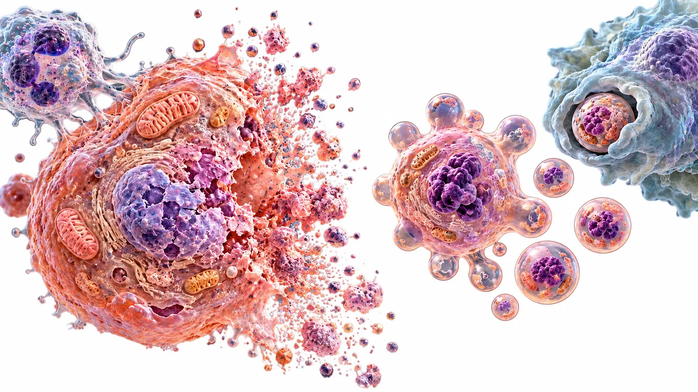
Pense na célula como uma casa com gerador (mitocondria) e portas automáticas (bomba Na⁺/K⁺). Na necrosis o gerador queima:
- sem ATP as portas param: entra água e a célula incha;
- entra Ca²⁺, que liga as "máquinas de demolição": fosfolipasas (membrana), proteasas (citoesqueleto), endonucleasas (núcleo);
- as paredes (membranas) rompem, o conteúdo vaza para a rua e chegam os bombeiros: inflamación.
Por isso a necrose é accidental e siempre patológica. A apoptose é o oposto: demolição planejada, sem sujeira.
Necrosis · accidental
- membranas rompem, enzimas vazam e digerem a célula
- conteúdo sai → inflamación
- siempre patológica
Apoptosis · organizada
- programa genético, célula desmontada em pedaços com membrana
- comida sin inflamación
- fisiológica (embrião, menstruação, timo) ou patológica
Por que a lâmina engana no IAM? A bioquímica vem antes da morfologia: perde a contração em ~1 min, fica irreversível em 20–40 min, mas a necrose só aparece ao MO após 4–12 h. Pode-se morrer de IAM com o coração "normal" na lâmina.
1.1 Lesión celular irreversible
Da lesão à morte celular
Cambios
- Tumefacción celular (hidrópica)
- Cambio graso
- Ampollas en la membrana
- Mitocondrias hinchadas, RE dilatado
3 fenómenos
- No recupera la función mitocondrial
- Pérdida de estructura y función de las membranas
- Pérdida de la integridad del ADN y la cromatina
Ca²⁺ intracelular activa
- Fosfolipasas → membrana
- Proteasas → citoesqueleto
- Endonucleasas → núcleo
- ATPasas → menos ATP
Rasgos
- Siempre patológica
- Célula aumenta de tamaño
- Rotura de membrana
- Induce inflamación
Rasgos
- Fisiológica o patológica
- Célula se encoge
- Membrana íntegra
- Sin inflamación
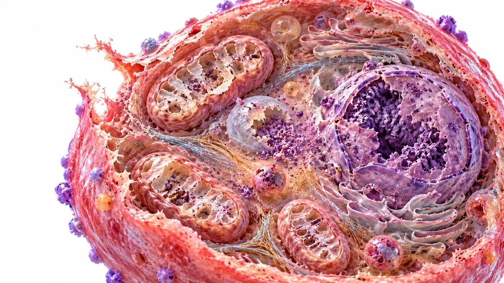
| Fenómeno | O que acontece | Consequência |
|---|---|---|
| 1 · Mitocondria | Sem O₂ → ↓ ATP → glicólise anaeróbica → ácido láctico, ↓ pH. Abre-se o poro de transição de permeabilidade e se perde o potencial de membrana. | O ATP não volta: bomba Na⁺/K⁺ parada, ↓ síntese de proteínas → morte. |
| 2 · Membranas | Fosfolipasas (ativadas pelo Ca²⁺), radicais livres (peroxidação lipídica) e proteasas (citoesqueleto). | Plasmática: sai conteúdo, entra Ca²⁺ · mitocondrial: sai citocromo c · lisosomal: hidrolases digerem a célula. Vazam troponina e transaminases. |
| 3 · ADN | Núcleo sem integridade. | Sem reparo. Na lâmina: picnosis, cariorrexis, cariólisis. |
O cálcio é o gatilho comum. O Ca²⁺ do citosol é ~10.000× menor que o de fora; na lesão ele entra e sai da mitocôndria e do RE, ligando fosfolipasas, proteasas, endonucleasas y ATPasas. Daí "2 enzimas cuya actividad aumenta por incremento del calcio".
A sequência é uma continuação da lesão reversível. Guarde cada enzima com o dano que ela causa, porque ela pede "cite 2 enzimas" e "qual dano":
| Evento (slide) | Consecuencia | Em português |
|---|---|---|
| Ingreso de calcio | daño mitocondrial | O Ca²⁺ citosólico ativa todas as enzimas abaixo. |
| Fosfolipasas activadas | daño de membrana plasmática, el fenómeno más importante de la lesión celular irreversible | Frase de prova: o dano de membrana é o marco da irreversibilidade. |
| Proteasas intracelulares | daño citoesquelético | Quebram proteínas estruturais. |
| Endonucleasas activadas | daño nuclear (picnosis, cariorrexis, cariólisis) | Fragmentam o DNA. |
| Enzimas hidrolíticas lisosómicas | digestión de la célula | Saem do lisossomo roto e digerem o citoplasma. |
Na apoptose o conteúdo não sai: sin inflamación. Ponte com a Clase 9: tecido necrótico é causa de inflamação aguda.
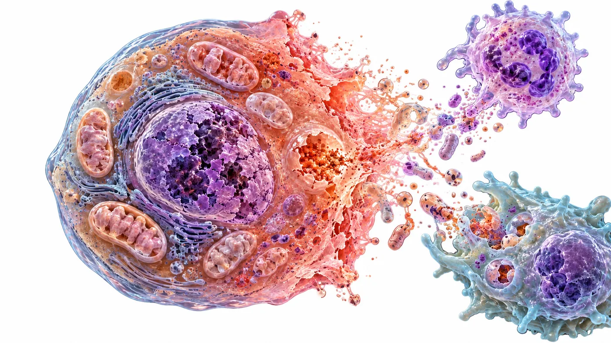
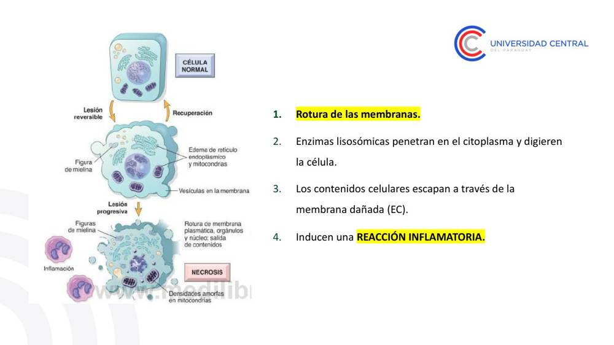
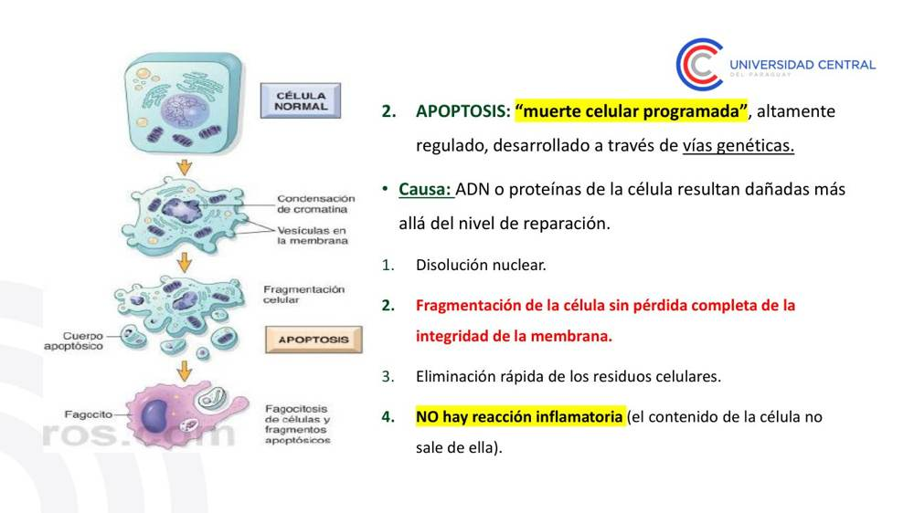
1.2 Morfología de la necrosis
Morfologia da necrose
Citoplasma
- Aumento de eosinofilia (pérdida de ARN, proteínas desnaturalizadas)
- Aspecto vítreo, vacuolado
- Figuras de mielina
Picnosis
- Núcleo encogido e hipercromático
Cariorrexis
- Núcleo fragmentado
Cariólisis
- Basofilia nuclear se desvanece (ADNasa)
Hallazgos
- Rotura de membrana plasmática y de organelas
- Figuras de mielina
- Densidades amorfas en mitocondrias
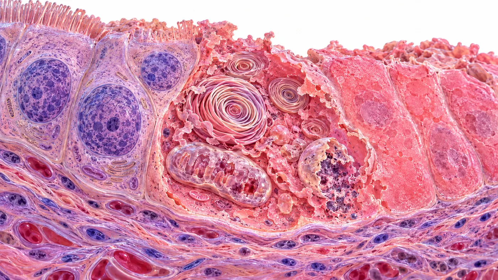
Autólise = enzimas da própria célula morta. Heterólise = enzimas dos leucócitos que chegaram. Esses dois processos (desnaturação × digestão) são a base para classificar os padrões: ela pergunta exatamente "cite 2 patrones que presentan desnaturalización" e "2 que presentan digestión enzimática".
Vence a desnaturação → coagulativa
- proteínas coagulam como clara de ovo cozida
- tecido firme, contorno mantido
- isquemia em órgão sólido (a acidose desnatura até as enzimas)
Vence a digestão → licuefactiva
- hidrolases quebram tudo em líquido
- muitos neutrófilos (infecção bacteriana)
- tecido pobre em proteína estrutural: cérebro
Autólisis = enzimas da própria célula. Heterólisis = enzimas dos leucócitos que chegaram (predomina na licuefactiva bacteriana).
Microscopio óptico (MO): citoplasma
- AUMENTO DE EOSINOFILIA: pérdida de ARN citoplásmico [fija colorante azul/hematoxilina] y proteínas citoplásmicas desnaturalizadas [fija colorante rojo/eosina]. A célula fica mais rosa porque perde o RNA (que pegava o azul) e as proteínas desnaturadas pegam mais eosina.
- A veces, las células son reemplazadas por masas de fosfolípidos, grandes y en forma de espiral, llamadas "figuras de mielina" (membranas dañadas).
- La calcificación de los residuos de ácidos grasos genera jabones de calcio.
Microscopio electrónico (ME)
- Discontinuidad en las membranas plasmáticas y orgánulos.
- Marcada dilatación de las mitocondrias, con aspecto de grandes densidades amorfas.
- Figuras de mielina intracitoplásmicas.
- Rotura de los lisosomas.
MO · citoplasma
A hematoxilina cora ácidos (ARN, ADN); a eosina, proteínas. Sem ARN e com proteína desnaturada: ↑ eosinofilia, aspecto vítreo, às vezes vacuolizado ("roído por traças").
Figuras de mielina
Restos de membrana em camadas concêntricas. Viram ácidos graxos; com cálcio, sabões de cálcio → início da calcificación distrófica.
ME · sinal definitivo
Discontinuidad de la membrana plasmática + grandes densidades amorfas floculentas nas mitocôndrias (na reversível, só pequenas).
Um aluno anotou: "tem que prestar atenção, porque teve provas que ela colocou na microscopia óptica e na microscopia eletrônica". Ela troca o microscópio na pergunta:
- MO irreversible: aumento de eosinofilia (acidofilia) por pérdida de ARN. Se a opção diz "aumento de acidofilia por medio de ARN citoplasmático", está errada: é por perda de RNA.
- ME irreversible: rotura/discontinuidad de membrana plasmática, marcada dilatación mitocondrial con densidades amorfas grandes, rotura de lisosomas, figuras de mielina.
- Reversible (P1, mas ela mistura): vacuolas lipídicas transparentes (cambio graso), vesículas/"blebs" na membrana, tumefacción mitocondrial leve.
- Figuras de mielina aparecem no Robbins também na lesão reversível. Numa pergunta de ME reversível em que as outras opções são rotura de membrana, dilatação "masiva" e acidofilia (MO), a única que sobra é figuras de mielina. Essa leitura vem do Robbins; o slide da Dra. lista as figuras só na irreversível.
Cambios nucleares
3 patrones posibles, debidos a rotura del ADN y la cromatina:
| Cambio | Definición del slide | Chave para lembrar |
|---|---|---|
| PICNOSIS | Retracción nuclear y aumento de basofilia (cromatina condensada en una masa basófila sólida retraída). | Núcleo pequeno e escuro. A lacuna de prova foi "retracción". |
| CARIORREXIS | El núcleo picnótico sufre fragmentación. Con el tiempo el núcleo desaparece por completo. | Rexis = romper, fragmentar. |
| CARIÓLISIS | Basofilia de la cromatina se pierde, disolución (pérdida de ADN por degradación enzimática). | Lise = dissolver. Núcleo "fantasma", some. |
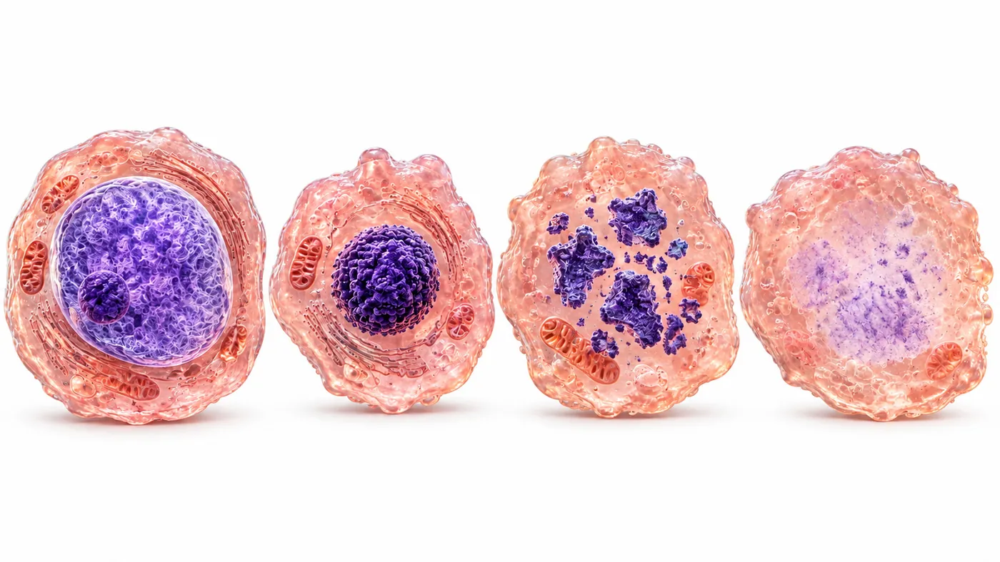
Núcleo com cromatina fina e nucléolo; citoplasma rosa claro. É a referência para comparar as mudanças da necrose.
Perde ARN (que é basófilo) e as proteínas se desnaturam: o citoplasma fica mais rosado, vítreo e vacuolado ("comido por traças"). Figuras de mielina: espirais de membrana das organelas rotas.
Núcleo encogido e hipercromático (retração e aumento da basofilia). É o 1º dos 3 padrões nucleares.
O núcleo picnótico se fragmenta em vários pedaços.
A basofilia nuclear se desvanece pela ação das ADNasas: o núcleo vira um "fantasma" e some.
Pegadinha: os 3 padrões são da necrose; na apoptose o achado principal é a condensação da cromatina.
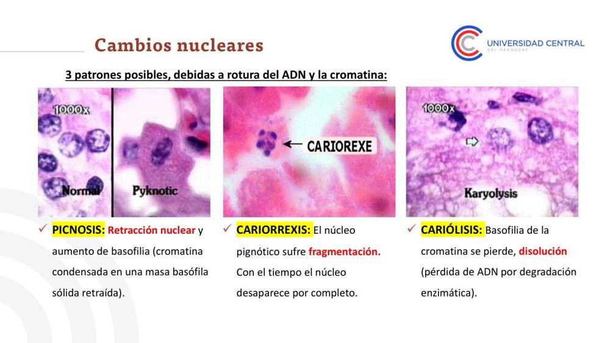
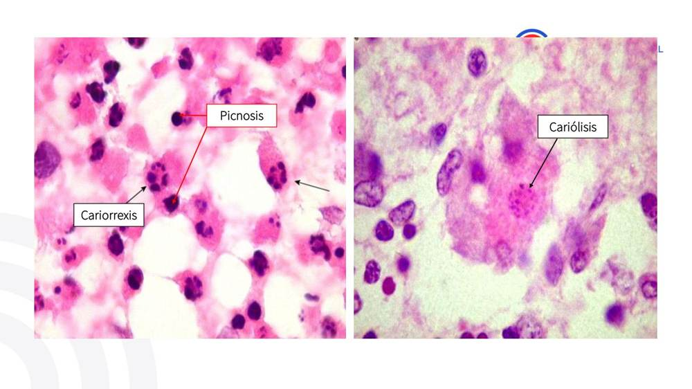
"Picnosis es un cambio nuclear caracterizado por ______ nuclear y aumento de basofilia." → Retracción
"La ______ es un cambio nuclear caracterizado por pérdida de basofilia de la cromatina debido a la disolución nuclear por degradación enzimática." → Cariólisis
"Dos cambios nucleares que se encuentran en una célula necrótica (No se acepta descripciones)." → Picnosis, cariorrexis, cariólisis (qualquer 2)
"Cambios nucleares sufridos por la apoptosis." → Picnosis y cariorrexis (na apoptose o núcleo condensa e fragmenta; cariólise é típica da necrose)
Caso: "basófilo con pérdida de la cromatina y disolución nuclear" → Cariólisis
1.3 Patrones de necrosis
Organograma dos padrões de necrose
Coagulativa
- Isquemia (excepto cerebro)
- Infarto en cuña: IAM, riñón, bazo
- Células "fantasma" eosinófilas
- Infarto blanco
Gangrena seca
- Miembro sin infección
- Congelación, isquemia
- Patrón coagulativo
Licuefactiva
- Cerebro (ACV, arteria cerebral media) → espacios quísticos
- Abscesos: bacterias piógenas, S. aureus
- Pus: enzimas de neutrófilos
Grasa
- Pancreatitis aguda
- Lipasas → ácidos grasos + Ca²⁺
- Saponificación: manchas blanco "tiza"
Gangrena húmeda
- Gangrena + infección bacteriana
- DM + pie negro + exudado
- Patrón licuefactivo
Caseosa
- Tuberculosis
- Aspecto de "queso", blanco amarillento
- Granuloma: células epitelioides, gigantes de Langhans, linfocitos
- MO: material amorfo, granular, rosado
Fibrinoide
- Complejos Ag-Ac + fibrina en la pared
- LES, vasculitis, PAN
- HTA maligna
- Nódulo reumatoide
Calcificación distrófica
- Ca²⁺ en tejido necrótico
- Calcemia normal
- Placas de ateroma, válvulas
Isquemia de órgãos sólidos (menos o cérebro). A arquitetura se conserva por dias: células "fantasma" eosinófilas sem núcleo. Ex.: infarto de miocardio.
No SNC a isquemia liquefaz o tecido e deixa uma cavidade quística.
Infecções bacterianas ou fúngicas: as enzimas dos neutrófilos digerem o tecido e formam pus cremoso.
Branco-amarelada e friável como queijo; típica da tuberculosis, no centro de um granuloma.
Lipases pancreáticas destroem a gordura; ácidos graxos + cálcio = saponificación (manchas brancas como giz).
Inmunocomplejos + fibrina na parede dos vasos: material rosa brilhante. Vasculites, LES.
O slide lista 6. A tabela abaixo é a que mais rende pontos: ela pergunta o padrão a partir do caso clínico.
| Pergunta | Resposta → padrão |
|---|---|
| 1 · Qual órgão? | Cérebro/SNC → licuefactiva (mesmo na isquemia) · páncreas/peritônio → grasa · parede de vaso → fibrinoide |
| 2 · Qual causa? | Isquemia em órgão sólido → coagulativa · bactéria piogênica → licuefactiva · TB → caseosa · imunocomplexos → fibrinoide |
| 3 · É extremidade? | Gangrena: seca (sem infecção) × húmeda (com infecção) |
"No corresponden a un patrón específico": gangrenosa e grasa são nomes clínicos. Gangrena seca = coagulativa; húmeda = licuefactiva; grasa = digestão da gordura + saponificação.
| Patrón | Mecanismo | Dónde / causa típica | Aspecto |
|---|---|---|---|
| Coagulativa | Desnaturalización de proteínas estructurales y enzimas (bloquea la proteólisis) | Isquemia en TODOS LOS ÓRGANOS EXCEPTO EL ENCÉFALO. Infarto (corazón, riñón, bazo, suprarrenal) | Arquitectura preservada, textura firme, células eosinófilas anucleadas. Infarto cónico "en cuña" |
| Licuefactiva o colicuativa | Digestión de las células muertas → masa viscosa líquida | Infecciones bacterianas focales (a veces fúngicas); hipoxia en el SNC | PUS amarillento, pastoso. Absceso. En cerebro: espacios quísticos |
| Gangrenosa | No es patrón específico: coagulativa (seca) ± licuefactiva (húmeda) | Extremidades, sobre todo inferiores, que perdieron irrigación | Seca: congelación. Húmeda: DM con sobreinfección bacteriana |
| Caseosa | Combinación de necrosis coagulativa y licuefactiva | Focos de infección tuberculosa | "Similar al queso", friable, blanquecino-amarillento; GRANULOMA; arquitectura borrada |
| Grasa | Lipasas pancreáticas activadas (digestión) + saponificación | PANCREATITIS AGUDA (parénquima y cavidad peritoneal) | Áreas blanquecinas "como tiza"; MO: células en sombra con calcio basófilo |
| Fibrinoide | Depósito de complejos Ag-Ac + fibrina en paredes arteriales | REACCIONES INMUNITARIAS en vasos: vasculitis por IC, autoinmunes (LES), arteriolas en HTA maligna | Rosado claro y amorfo (H&E): "FIBRINOIDE" |
Necrosis coagulativa
Por que a arquitetura fica?
A acidose desnatura também as enzimas proteolíticas: sem digestão interna, o contorno dura dias. Túbulos e fibras sem núcleo, mais rosados: células fantasma.
Por que em cunha?
A artéria ocluída irriga um leque: vértice na oclusão, base na cápsula (rim, baço, pulmão).
O que vem depois (IAM)?
Neutrófilos 1–3 d → macrófagos 3–7 d → granulação 1–2 sem → cicatriz ~1–2 meses. O miocárdio não regenera.
Por que o cérebro é exceção?
Muito lipídio, quase sem colágeno/estroma, micróglia rica em enzimas: sem "esqueleto" para coagular, o tecido se liquefaz.
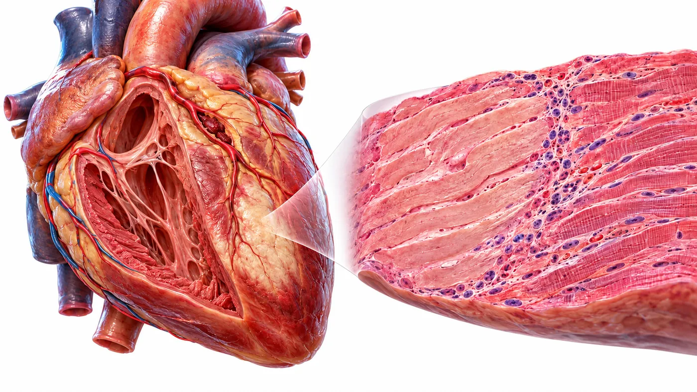
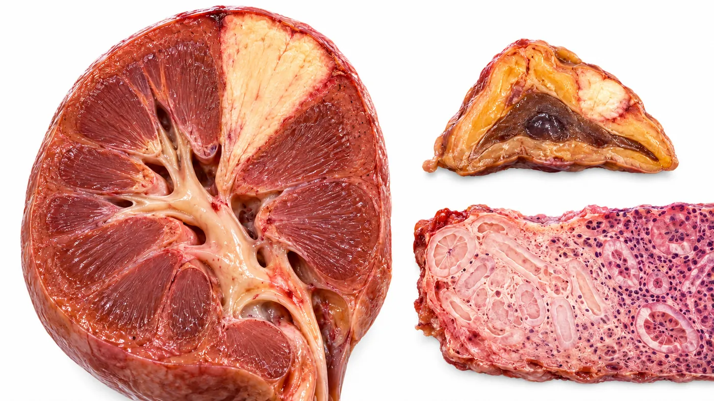
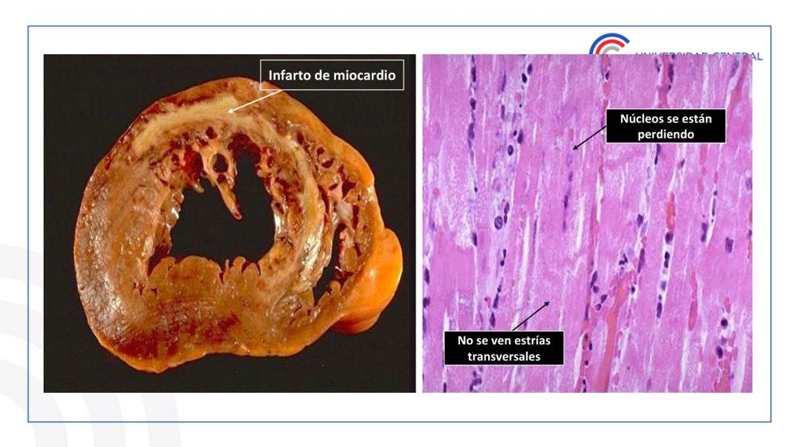
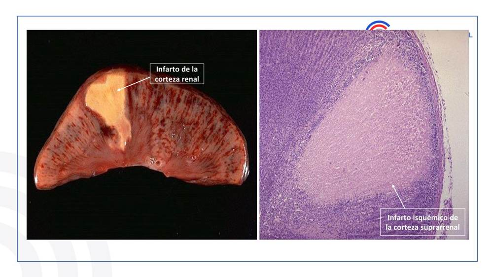
Necrosis licuefactiva
No cérebro isquêmico, os macrófagos removem o tecido em semanas e fica uma cavidad quística com gliose: "área quística en el lóbulo parietal" → "presencia de espacios quísticos".
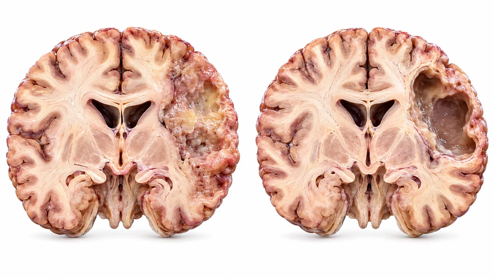
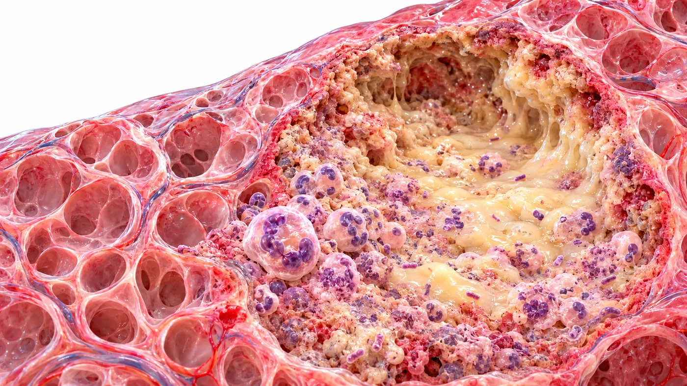
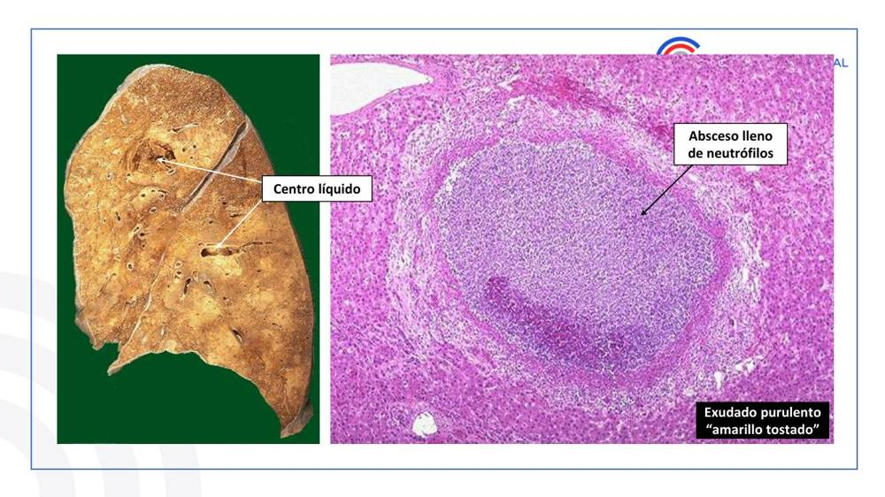
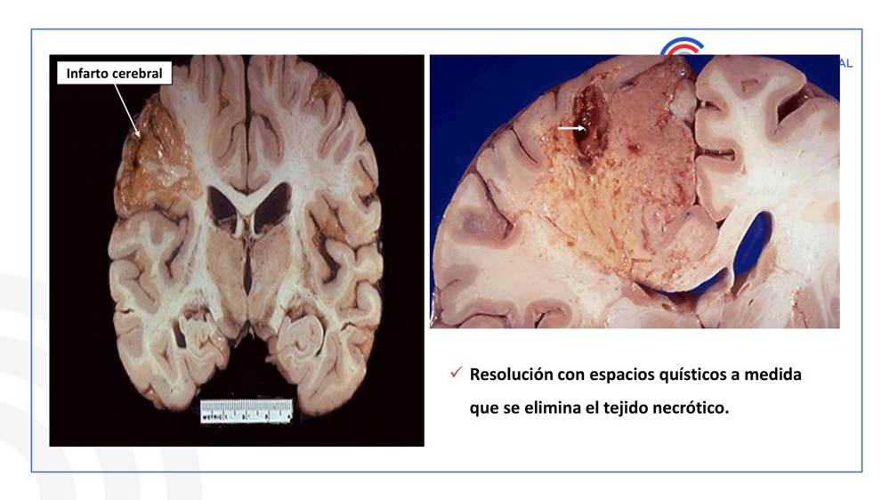
Necrosis gangrenosa
Termo clínico para membro (sobretudo inferior) sem irrigação. Paciente típico: diabético (doença arterial periférica + microangiopatia, neuropatia, defesa reduzida).
| Seca | Húmeda | |
|---|---|---|
| Causa | só isquemia (congelação, oclusão lenta) | isquemia + infecção bacteriana |
| Aspecto | preta, dura, mumificada | úmida, inchada, exsudado amarelado, mau cheiro |
| Limite | nítido | mal definido, espalha → sepse |
| Por baixo | coagulativa | licuefactiva |
| Pista de prova | — | "exudado amarillento" + S. aureus; também órgãos internos (intestino) |
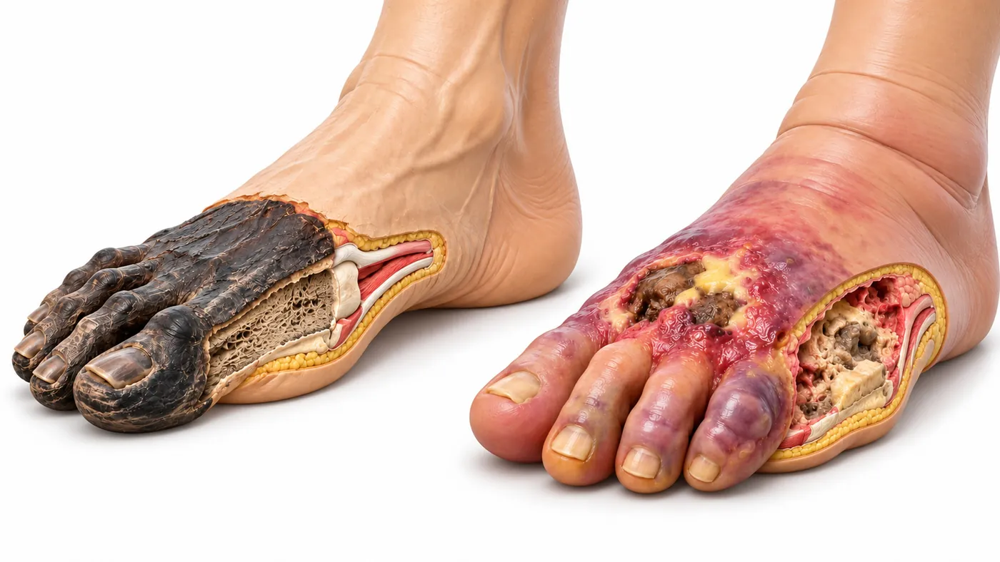
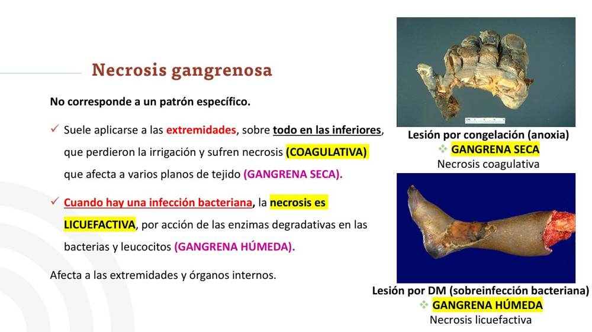
O que decide seca × úmida é a infecção, não o diabetes. "DM + planta del pie oscura + pérdida de sensibilidad" sem infecção = gangrena seca (coagulativa). "DM + coloración negra + exudado amarillento + Staphylococcus aureus" = gangrena húmeda (licuefactiva). Em "cite 2 patrones con desnaturalización", gangrena seca vale; em "digestión enzimática", gangrena húmeda vale.
Necrosis caseosa
- Bacilo resistente. O M. tuberculosis tem parede rica em ácidos micólicos e sobrevive no macrófago.
- Imunidade celular. Linfócitos T CD4 liberam interferón γ e ativam os macrófagos.
- Células epitelioides. Macrófagos ativados, citoplasma amplo e rosado, agrupados como epitélio; alguns se fundem em células gigantes tipo Langhans (núcleos em ferradura).
- Granuloma. Tudo cercado por linfócitos; no centro, as células morrem.
Como diferenciar
Macro: branco-amarelada, friável, como queijo. MO: rosa granular sem contorno celular (na coagulativa ainda se vê o fantasma).
Evolução
O caseum se liquefaz e drena por um brônquio: caverna no ápice pulmonar (TB do adulto).
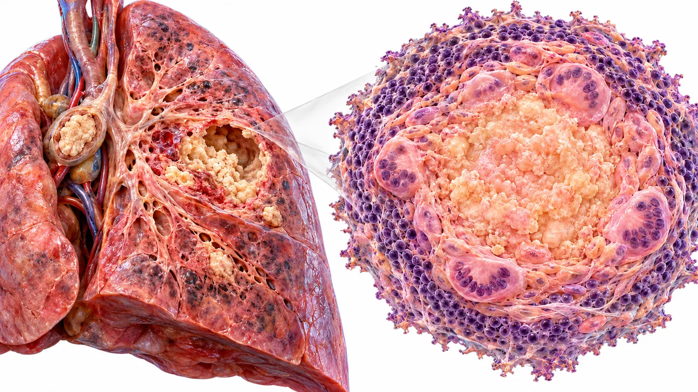
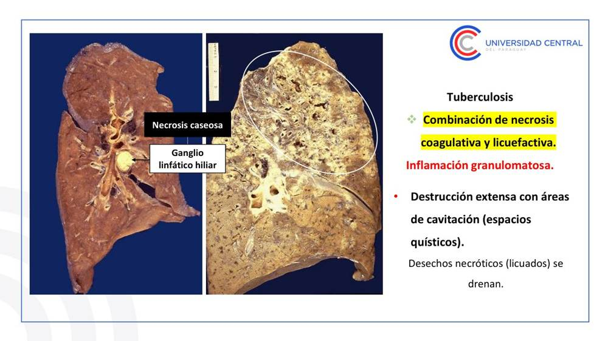
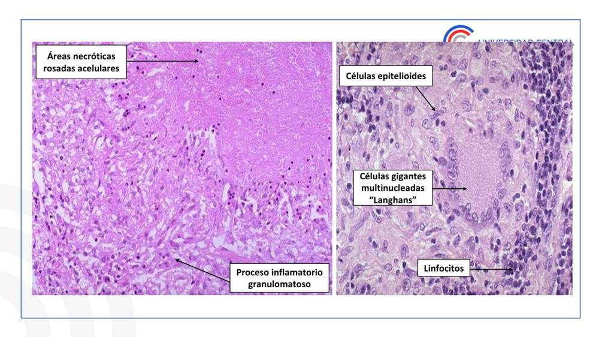
Necrosis grasa
Na clínica: o cálcio gasto pode dar hipocalcemia. Também há necrose gordurosa traumática na mama.
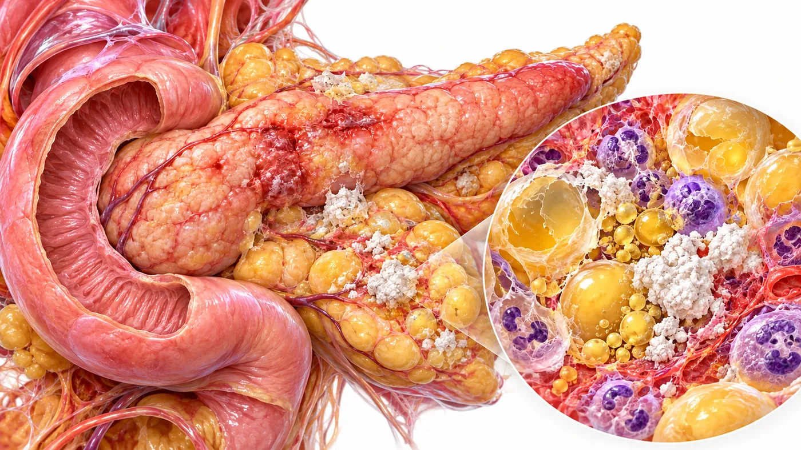
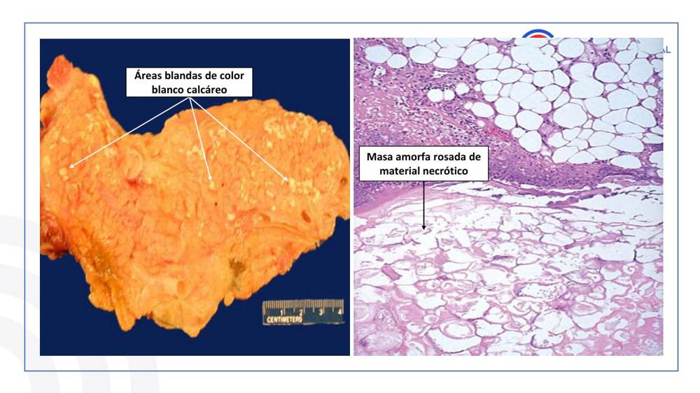
Necrosis fibrinoide
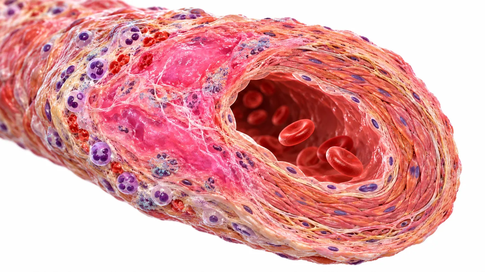
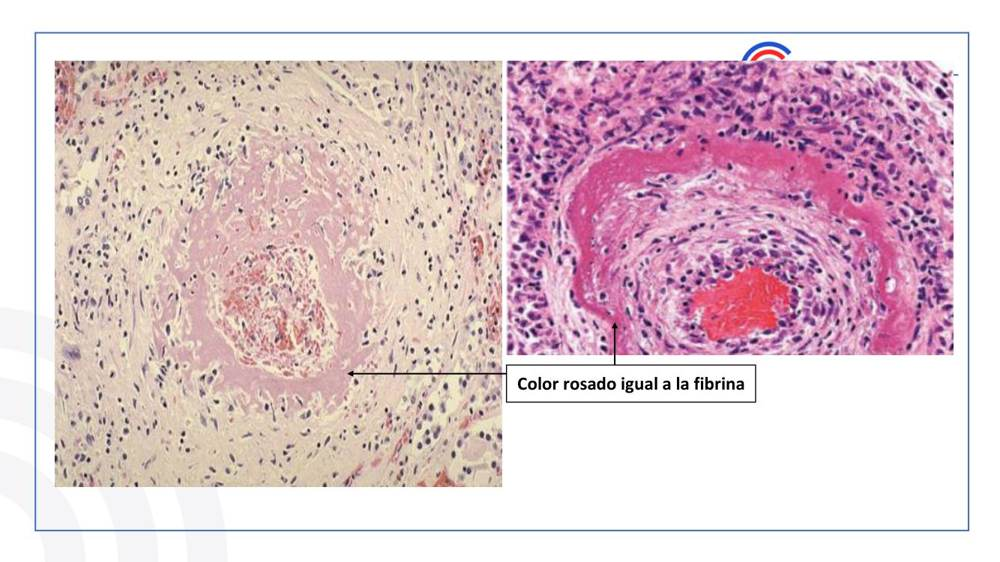
Regeneração
Tecido lábil/estável com estroma preservado.
Cicatriz
Tecido permanente (miocárdio) ou destruição extensa.
Cavidade
Cisto cerebral, absceso encapsulado, caverna.
Calcificação
Se não é removido a tempo.
Calcificación distrófica: sabões de cálcio e membranas mortas concentram fosfato e atraem cálcio. No H&E, basófila (roxa). Ex.: ateroma, válvula aórtica do idoso, TB antiga, cuerpos de psamoma (carcinoma papilar de tireoide, meningioma).
Distrófica = cálcio em tecido morto/lesado com calcemia normal (placa de ateroma, válvula aórtica, cuerpos de psamoma). Metastásica = cálcio em tecido vivo por hipercalcemia (PTH alto, insuficiência renal). Isso é da parte de calcificação, mas ela usa na P2 junto com placa de ateroma.
1.4 Infartos rojo y blanco
Infarto rojo × blanco
Dónde
- Oclusión arterial
- Órganos sólidos con circulación terminal
- Corazón, bazo, riñón
- Forma de cuña · necrosis coagulativa
Dónde
- Oclusión venosa (torsión ovárica, testicular)
- Tejidos laxos
- Doble circulación: pulmón, hígado
- Intestino; reperfusión; congestión previa
Não tem slide próprio, mas o slide mostra "infarto rojo del intestino" e "infarto rojo del pulmón" e caiu em quase todas as P2.
| Tipo | Condiciones | Órganos |
|---|---|---|
| Infarto rojo (hemorrágico) | Tejidos con doble circulación, congestión venosa (oclusión venosa), reperfusión, tejidos laxos | Pulmón, intestino (delgado), también ovario/testículo por torsión |
| Infarto blanco (anémico) | Oclusión arterial en órganos sólidos con circulación terminal (disminución del flujo arterial) | Corazón, bazo, riñón |
Depende de quanto sangue entra no território morto.
Blanco (anémico)
- órgão sólido, circulação terminal
- sem colaterais; parênquima denso não deixa o sangue espalhar
- corazón, bazo, riñón
Rojo (hemorrágico)
- doble circulación: pulmão, intestino
- oclusión venosa: torção de ovário/testículo
- tejido laxo: pulmão
- reperfusión de vasos lesados
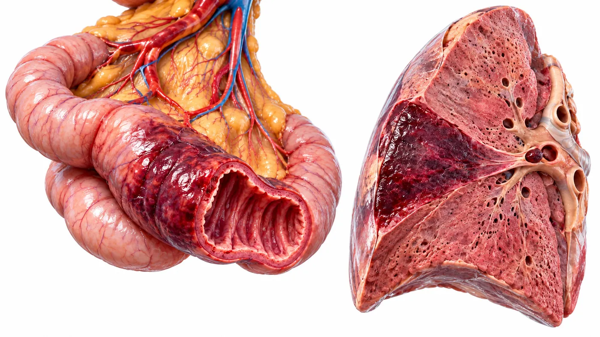
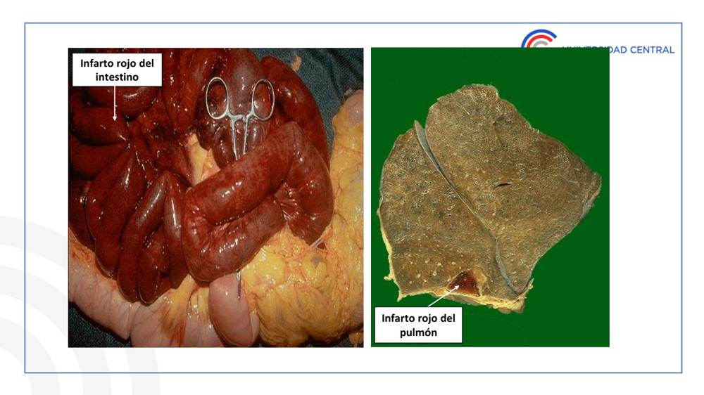
- Cérebro nunca é coagulativa. Isquemia cerebral (ACV, "apoplejía", oclusão da artéria cerebral média) = licuefactiva, que evolui para espacios quísticos. Na prova de lacuna a resposta aceita foi "presencia de espacios quísticos".
- "Necrosis gangrenosa con formación de cavitaciones" é distrator para o infarto cerebral. A certa é "infiltrados neutrofílicos con restos licuados" (licuefactiva).
- Cunha = coagulativa (baço, rim, coração). "Dor no hipocôndrio + baço com zona em cunha" → coagulativa.
- Caseosa não está em nenhuma das duas colunas puras: é combinação coagulativa + licuefactiva. Numa lista de "digestión enzimática", licuefactiva e grasa são as respostas seguras.
- Um aluno respondeu "coagulativa isquêmica e hemorrágica" para desnaturação. Fuja disso; a resposta certa é coagulativa y gangrena seca.
- Pneumonia por S. aureus com edema e restos celulares liquefeitos = licuefactiva → formación de abscesos.
- Granuloma da artritis reumatoide (nódulo reumatoide) tem centro de necrosis fibrinoide, não caseosa (repaso do slide).
Cite dos patrones de necrosis que presentan primariamente desnaturalización de proteínas. → Coagulativa y gangrena seca
Padrones de necrosis que presentan digestión enzimática. → Licuefactiva y grasa (gangrena húmeda também aceita)
Mujer de 75 años, pérdida de conocimiento, no puede hablar ni comer con el brazo derecho, oclusión de la arteria cerebral media izquierda. → Necrosis licuefactiva / presencia de espacios quísticos
Paciente de 70 años, cuadro respiratorio de meses, vértice del pulmón derecho con imágenes granulomatosas. → Necrosis caseosa
Hombre 55 años, DM mal controlada hace 15 años, coloración negra del pie derecho con exudado amarillento, cultivo S. aureus, amputación. → Gangrena húmeda
Mujer 30 años con LES, reacciones inflamatorias de etiología inmunológica en paredes de vasos. → Necrosis fibrinoide
Los infartos que macroscópicamente presentan forma de cuña corresponden histológicamente a una necrosis ______. → Coagulativa
¿Cuál se asocia a necrosis licuefactiva? a) hepatitis B aguda b) lesión vascular en pie diabético c) IAM d) infarto cerebral o trombosis → d
Necrosis tubular aguda: ¿cambio morfológico más probable? a) aumento de basofilia b) pérdida de microvellosidades c) tumefacción mitocondrial d) núcleos que sufren fragmentación → d (necrose = alteração nuclear; b e c são reversíveis)
Cite dos órganos que pueden sufrir infarto rojo. → Pulmón e intestino
Situación que produce infarto blanco. → Disminución (oclusión) del flujo sanguíneo arterial en órgano sólido
Cite dos hallazgos de necrosis al microscopio electrónico. → Ruptura de membrana plasmática; figuras de mielina
Fontes: P2 turmas I e F, recuperatórias, 1º parcial 2024 (quando necrose caiu na P1), provas antigas pág. 8–18, 83–103.
- 65 años, DM de larga data, insulina irregular, planta del pie oscurecida con pérdida de sensibilidad → gangrena seca (necrosis coagulativa); se aparecer infecção/exsudato, gangrena húmeda.
- Varón 58 años, dolor torácico, supradesnivel del ST, IAM → necrosis coagulativa (infarto).
- Área necrótica rosada acelular rodeada por Langhans, epitelioides y linfocitos; en el centro → necrosis caseosa.
- Necrosis por isquemia que preserva la arquitectura por días por desnaturalización de proteínas → necrosis coagulativa.
- "Apoplejía" con pérdida focal del suministro de sangre al cerebro → necrosis licuefactiva.
- Artritis reumatoidea, lesión granulomatosa presenta centralmente → necrosis fibrinoide.
1.5 Casos resueltos · raciocínio passo a passo
Homem de 62 anos, hipertenso e fumante, morre 3 dias depois de uma dor torácica intensa. Na autópsia há uma área amarelada e amolecida na parede anterior do ventrículo esquerdo.
1) Que necrose é essa?
Isquemia em órgão sólido → coagulativa; circulação terminal → infarto blanco.
2) O que se vê ao MO no 3º dia?
Fibras eosinófilas sem núcleo, arquitetura mantida (células fantasma) e neutrófilos na borda.
3) E se tivesse morrido 1 hora depois?
Coração normal na lâmina: a necrose só aparece ao MO após 4–12 h, embora já irreversível.
4) Que exame confirma em vida?
Troponina: a membrana rota deixa vazar proteínas intracelulares.
5) Como termina?
Macrófagos → granulação → cicatriz; o miocárdio não regenera.
Mulher de 70 anos teve um AVC isquêmico há 4 meses. A TC mostra uma área quística no lóbulo parietal.
1) Por que não é coagulativa?
Muito lipídio, pouca proteína estrutural, micróglia rica em enzimas → licuefactiva.
2) O que é a área quística?
Tecido removido pelos macrófagos: cavidad quística com gliose ("presencia de espacios quísticos").
3) Que outra causa dá o mesmo padrão?
Bactéria piogênica → pus → absceso.
Homem de 45 anos, etilista, com dor epigástrica em faixa, lipase muito alta e cálcio sérico baixo.
1) Que necrose há ao redor do pâncreas?
Grasa: a lipase libera ácidos graxos.
2) Como aparece à macroscopia?
Manchas branco-giz: saponificación.
3) Por que o cálcio caiu?
Foi consumido nos sabões de cálcio.
- ¿Cuál es el fenómeno más importante de la lesión celular irreversible?
- A La tumefacción celular
- B El daño de la membrana plasmática
- C El cambio graso
- D La formación de ampollas
- La activación de endonucleasas por el ingreso de calcio produce:
- A Daño nuclear (cromatina)
- B Daño de membrana
- C Daño del citoesqueleto
- D Disminución del ATP
- El aumento de eosinofilia del citoplasma necrótico se debe a:
- A Acumulación de glucógeno
- B Aumento de ribosomas
- C Depósito de calcio
- D Pérdida de ARN citoplasmático y proteínas desnaturalizadas
- Núcleo fragmentado en una célula necrótica:
- A Picnosis
- B Cariólisis
- C Cariorrexis
- D Condensación
- ¿Cuál de los siguientes patrones de necrosis se produce por digestión enzimática?
- A Necrosis coagulativa
- B Necrosis grasa
- C Gangrena seca
- D Necrosis fibrinoide
- Paciente diabético con pie negro, maloliente y con exudado. El patrón es:
- A Gangrena húmeda (patrón licuefactivo sobreañadido)
- B Gangrena seca
- C Necrosis caseosa
- D Necrosis fibrinoide
- Granuloma con células epitelioides, células gigantes de Langhans y centro amorfo granular rosado:
- A Necrosis grasa
- B Necrosis coagulativa
- C Absceso
- D Necrosis caseosa (tuberculosis)
- ¿Qué órgano presenta típicamente infarto blanco?
- A Pulmón
- B Intestino
- C Bazo
- D Hígado con doble irrigación
- Hombre de 62 años con fibrilación auricular presenta dolor abdominal súbito. En la cirugía se reseca un segmento de intestino delgado de color rojo oscuro. El patrón de infarto y su explicación son:
- A Infarto blanco, por circulación terminal
- B Infarto rojo, por doble circulación y tejido laxo
- C Necrosis licuefactiva, por hipoxia
- D Gangrena seca, por congelación
- Mujer de 45 años con dolor epigástrico intenso irradiado a la espalda, amilasa y lipasa elevadas. En la laparotomía se observan áreas blanquecinas calcáreas en el mesenterio. La lesión corresponde a:
- A Necrosis grasa con saponificación
- B Necrosis caseosa
- C Necrosis fibrinoide
- D Calcificación metastásica
- Al microscopio electrónico, en una célula con lesión irreversible, se observa de forma característica:
- A Vesículas en la membrana plasmática y pérdida de microvellosidades
- B Dilatación del retículo endoplásmico
- C Aumento de eosinofilia citoplasmática
- D Discontinuidad de membranas y mitocondrias con grandes densidades amorfas
- Al microscopio óptico, en un patrón de lesión celular irreversible, se podrá observar de forma característica:
- A Vacuolas lipídicas transparentes en el citoplasma
- B Formación de vesículas en la membrana plasmática
- C Aumento de eosinofilia por pérdida de ARN citoplasmático
- D Aumento de basofilia citoplasmática por acumulación de ARN
- Mujer de 34 años con glomerulonefritis por inmunocomplejos. La biopsia muestra paredes arteriolares con material rosado claro y amorfo en H&E. El patrón corresponde a:
- A Necrosis coagulativa
- B Necrosis fibrinoide
- C Degeneración hialina por esteatosis
- D Necrosis caseosa
- Hombre de 70 años con ACV isquémico hace 3 meses. La TC muestra una cavidad en el territorio de la arteria cerebral media. ¿Qué ocurrió en el tejido?
- A Necrosis licuefactiva con formación de espacios quísticos
- B Necrosis coagulativa con conservación de la arquitectura
- C Necrosis caseosa con granulomas
- D Gangrena húmeda
- Verdadero o falso: La necrosis es un proceso regulado que no produce inflamación.
- A Verdadero
- B Falso
- Verdadero o falso: La necrosis caseosa es una combinación de necrosis coagulativa y licuefactiva.
- A Verdadero
- B Falso
- 1 · B Las fosfolipasas activadas por el Ca²⁺ dañan la membrana; la tumefacción y el cambio graso son lesión reversible.
- 2 · A Fosfolipasas → membrana; proteasas → citoesqueleto; endonucleasas → núcleo; ATPasas → ↓ ATP.
- 3 · D El ARN fija hematoxilina (azul); al perderse, predomina la eosina (rosa) que se fija a las proteínas desnaturalizadas.
- 4 · C Picnosis = encogido e hipercromático; cariorrexis = fragmentado; cariólisis = se desvanece la basofilia.
- 5 · B Digestión enzimática: licuefactiva y grasa (y gangrena húmeda). Desnaturalización: coagulativa y gangrena seca.
- 6 · A Gangrena + infección bacteriana = húmeda. Lo que decide es la infección.
- 7 · D Caseosa = mezcla de coagulativa y licuefactiva, aspecto de queso, típica de TB.
- 8 · C Infarto blanco: circulación terminal (corazón, bazo, riñón). Rojo: doble circulación, tejido laxo (pulmón, intestino).
- 9 · B Intestino e pulmão fazem infarto vermelho (doble circulación, tejido laxo, congestão venosa, reperfusão). Circulação terminal gera infarto branco (coração, baço, rim).
- 10 · A Pancreatitis aguda: lipasas activadas → AG + calcio = áreas blanquecinas "como tiza". Não é metastásica porque o cálcio sérico não é o problema.
- 11 · D a e b são lesão reversível. d é achado de microscopia óptica, não eletrônica. A troca MO × ME é a armadilha dela.
- 12 · C a e c são reversíveis. d inverte o mecanismo: o citoplasma perde RNA e fica mais eosinófilo.
- 13 · B Complexos antígeno-anticorpo + fibrina extravasada na parede vascular = "fibrinoide".
- 14 · A Hipóxia no SNC = licuefactiva; o tecido é removido e fica cavidade (espacios quísticos).
- 15 · B A necrose é "accidental", NO regulada, e induz reacción inflamatoria. Quem não inflama é a apoptose.
- 16 · A Verdadero.
Apoptosis y necroptosis
A morte programada: quando acontece, como se vê, as vías intrínseca e extrínseca e a necroptosis.
- Muerte programada, activa, con caspasas y endonucleasas; membrana íntegra → sin inflamación.
- Morfología: retracción celular, condensación de la cromatina (lo más característico), cuerpos apoptósicos, fagocitosis.
- Fisiológica: embriogénesis (membranas interdigitales), menstruación, involución. Patológica: daño del ADN, proteínas mal plegadas, virus, tumores.
- Vía intrínseca (mitocondrial): BCL2/BCL-XL antiapoptósicas × BAX/BAK; citocromo C al citosol → caspasa 9.
- Vía extrínseca: receptores de muerte (Fas, TNFR1) → FADD → caspasa 8.
- Necroptosis: parece necrosis, pero es programada; RIPK1/RIPK3, sin caspasas.
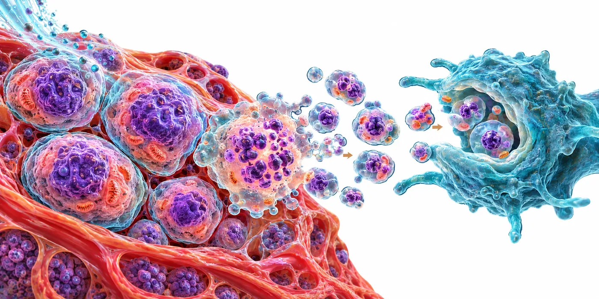
A apoptosis desmonta a célula por dentro com tesouras próprias (caspasas), embala tudo em pacotes fechados (cuerpos apoptósicos) e o caminhão (macrófago) leva sem sujar a rua: sin inflamación.
- Vía intrínseca (mitocondrial): o alarme toca dentro de casa (dano no ADN, falta de fatores de crescimento) e a mitocôndria solta o citocromo c.
- Vía extrínseca: a ordem vem de fora, por um receptor de muerte (Fas–FasL, TNF).
- Necroptosis: começa programada como a apoptose, mas termina como necrose (membrana rompe e inflama), sem caspasas.
O corpo elimina bilhões de células por dia; a apoptose faz isso limpo e em minutos (por isso quase não se vê, nem no timo fetal). Do grego "cair", como folhas.
Ativa
Gasta ATP; sem ATP vira necrose.
Individual
Células isoladas entre vivas; a necrose pega um território.
Sinal "coma-me"
Fosfatidilserina vai para a face externa: "su estructura se altera, atrayendo a los fagocitos".
Pouca apoptose
Sobrevivem células que deviam morrer: câncer, autoimunidade.
Apoptose demais
Morrem células que deviam viver: neurodegeneração, isquemia, infecções virais.
2.1 Situaciones fisiológicas y patológicas
Quando ocorre a apoptose
Embriogénesis
- Membranas interdigitales
- Organogénesis, involución de primordios
Involución hormonal
- Ciclo menstrual (endometrio)
- Menopausia (atresia folicular)
- Mama tras el destete
Recambio y defensa
- Recambio de poblaciones proliferativas
- Neutrófilos al final de la inflamación
- Linfocitos autorreactivos
Daño del ADN
- Radiación, quimioterapia
- p53 detiene el ciclo o induce apoptosis
Proteínas mal plegadas
- Estrés del RE
- Alzheimer, Parkinson
Infecciones
- Hepatitis viral (cuerpos de Councilman)
- Linfocitos T citotóxicos
Atrofia patológica
- Obstrucción de conductos: páncreas, parótida, riñón
| Fisiológicas (slide) | Patológicas (slide) |
|---|---|
La APOPTOSIS es un fenómeno normal, empleado para eliminar células que ya no son necesarias y mantener un equilibrio de las diversas poblaciones celulares en los tejidos.
|
La APOPTOSIS elimina las células cuyo grado de lesión supera el límite de reparación, sin provocar la reacción del anfitrión, y restringiendo el daño tisular colateral.
|
| Situación | Mecanismo / exemplo |
|---|---|
| Fisiológica · embrião | esculpe órgãos: os dedos se separam (membranas interdigitais) |
| Fisiológica · retirada de hormônio | ↓ progesterona (endométrio), ↓ estrogênio (atresia folicular), fim da prolactina após o desmame (mama), castração (próstata) |
| Fisiológica · renovação | medula óssea, epitélio intestinal, timo: equilibra a proliferação |
| Fisiológica · timo | elimina linfócitos T autorreativos; se falha → autoimunidade |
| Fisiológica · fim da inflamação | neutrófilos morrem por apoptose |
| Patológica · ADN lesado | radiação, quimio, hipóxia leve: p53 para o ciclo; sem reparo → via mitocondrial ("cuando la afectación es demasiado grave…") |
| Patológica · proteína mal dobrada | estresse do RE: neurônios em Alzheimer y Parkinson |
| Patológica · vírus | hepatite, HIV, adenovírus: linfócitos T citotóxicos matam a célula |
| Patológica · tumor | a quimioterapia induz apoptose |
| Patológica · ducto obstruído | pâncreas, parótida, rim: atrofia por apoptose |
- Nas opções "infección en pie diabético" (gangrena = necrose), "Parkinson" (apoptose patológica), "verrugas por HPV" (hiperplasia), "membranas interdigitales" (apoptose fisiológica), "disminución de flujo miocárdico por ateroesclerosis" (necrose coagulativa). Ela usou as mesmas quatro opções nas duas versões e só trocou "fisiológica" por "patológica" no enunciado. Leia o enunciado duas vezes.
- Menstruação = apoptose fisiológica (involução hormônio-dependente), mesmo tendo sangramento.
- Alzheimer com "mal plegamiento de proteínas" → apoptosis (patológica). Na P1, "Alzheimer" foi resposta de atrofia patológica; não confunda as duas perguntas.
- Parkinson aparece nos dois slides: apoptose (proteínas mal dobradas) e necroptose (exemplos). Se a pergunta diz apoptose patológica, Parkinson é a resposta.
2.2 Morfología
- Célula isolada, menor, citoplasma muito eosinófilo, núcleo em pedaços densos, às vezes com halo claro.
- Sem neutrófilos em volta. No fígado: cuerpos de Councilman.
Apoptosis · ADN em "escalera"
Endonucleasas cortam entre nucleossomos (~180–200 pb).
Necrosis · ADN em "borrón"
Degradação ao acaso.
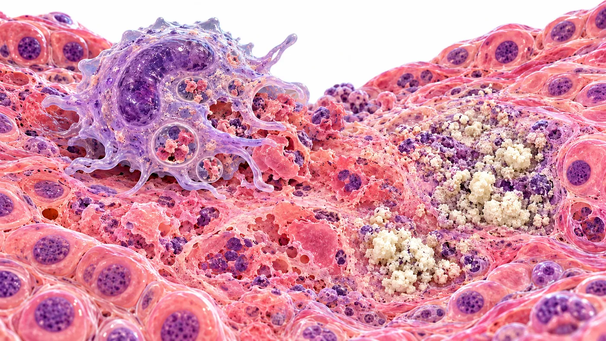
Ponto de partida, antes do sinal de morte.
Célula menor, citoplasma denso e organelas relativamente normais, mais compactadas. Ao contrário da necrose, ela encolhe.
Massas densas de formas e tamanhos distintos; o núcleo se divide em ≥2 fragmentos.
A membrana forma bolhas (evaginações), mas continua íntegra: por isso nada vaza e não há inflamação.
Rodeados por membrana, com citoplasma e organelas, com ou sem fragmentos nucleares. No H&E: massa redonda de citoplasma intensamente eosinófilo com cromatina densa.
NO PRODUCE INFLAMACIÓN.
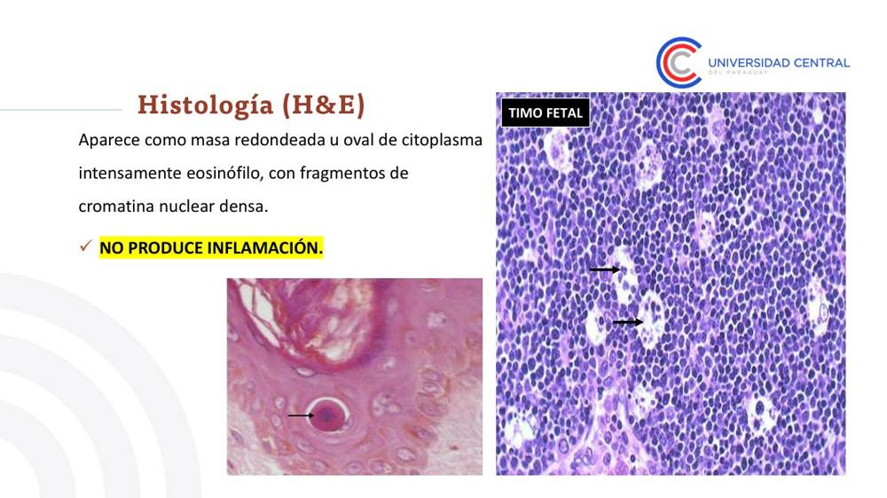
2.3 Mecanismos
Organograma das vias da apoptose
Familia BCL2
- Antiapoptóticas: BCL2, BCLX, MCL1
- Proapoptóticas: BAX, BAK
- Sensores BH3: BAD, BIM, BID
Secuencia
- Estrés: falta de factores de crecimiento, daño del ADN
- BAX/BAK abren la membrana mitocondrial
- Citocromo C sale al citosol
- Apoptosoma → caspasa 9
Receptores
- TNFR1 (receptor de TNF tipo 1)
- Fas (CD95) + FasL
Secuencia
- Dominio de muerte → FADD
- Caspasa 8
- Inhibidor: FLIP
Ejecutoras
- Caspasas 3 y 6
- Endonucleasas fragmentan el ADN
- Proteasas degradan citoesqueleto
Final
- Cuerpos apoptóticos
- Fosfatidilserina expuesta → fagocitosis
- Sin inflamación
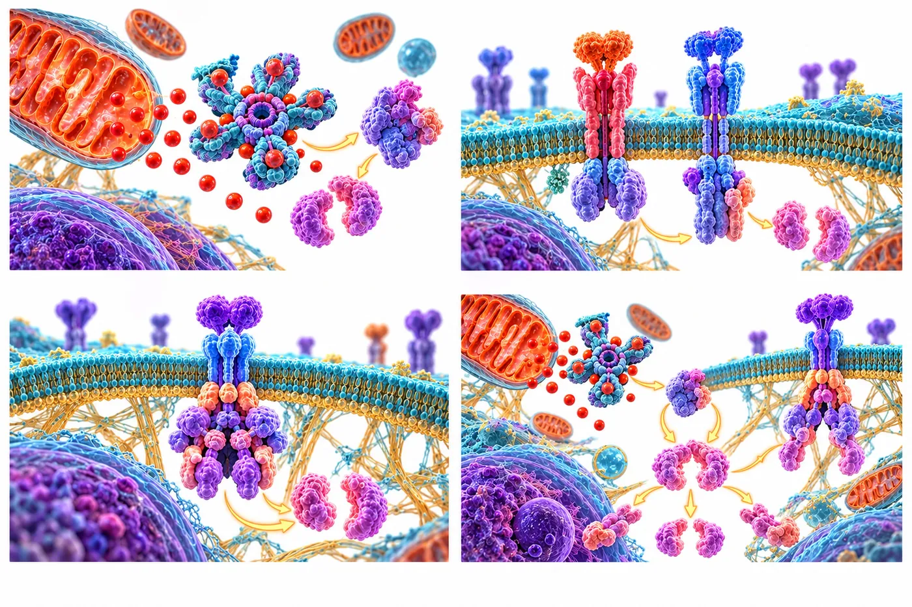
Vía intrínseca: mitocondrial (principal mecanismo)
Caspasas = proteases com cisteína que cortam após aspártico; inativas até a cascata. Iniciadoras 8 y 9 · ejecutoras 3 y 6 (cortam citoesqueleto e proteínas nucleares, ativam endonucleasas).
Na clínica: linfoma folicular, t(14;18) → BCL2 demais, linfócitos não morrem. "Proteína diminuída numa célula quase morrendo" = BCL2.
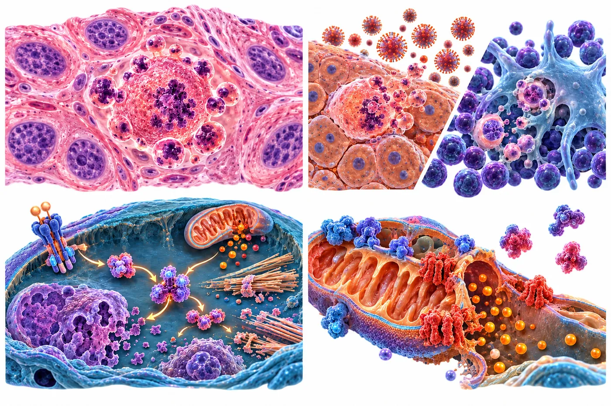
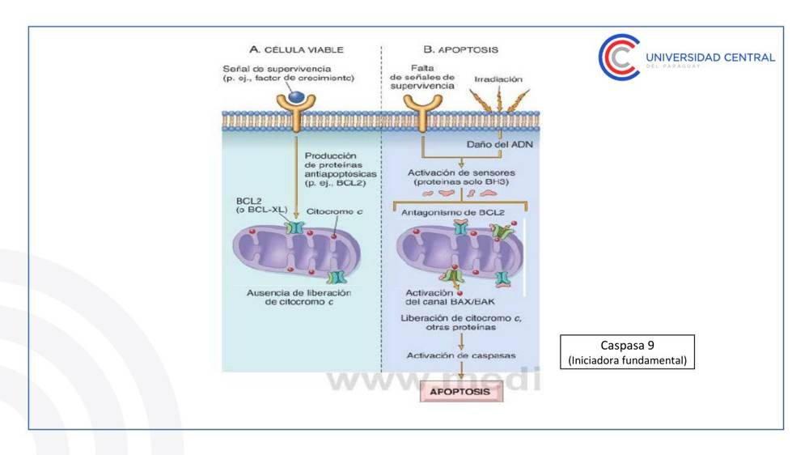
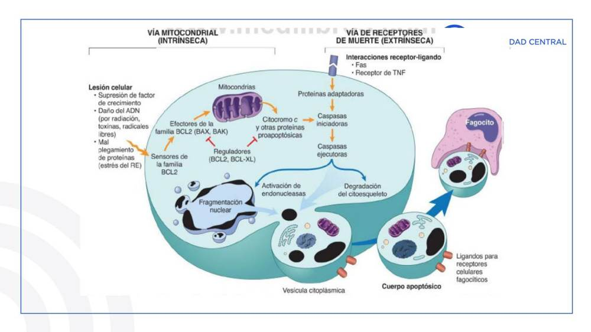
Vía extrínseca: iniciada por receptores de muerte
As vias conversam: a caspasa 8 corta a BID e liga também a via mitocondrial.
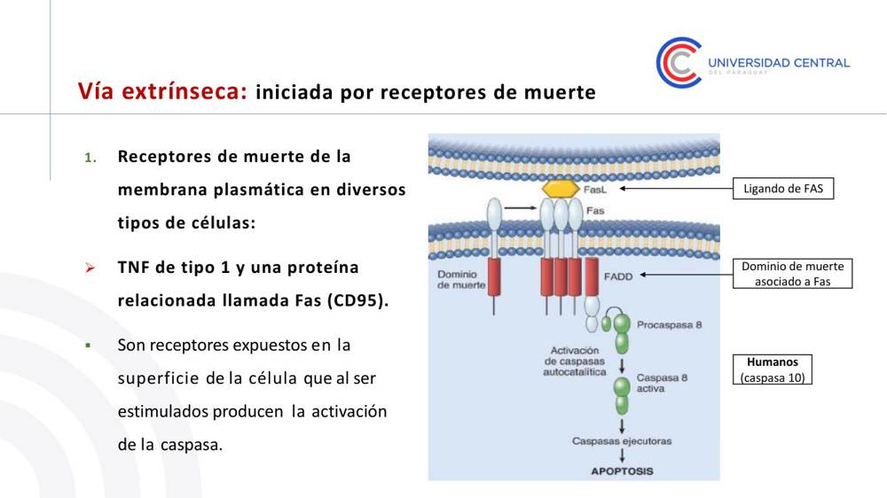
Aplicação clínica: linfócitos T citotóxicos matam hepatócitos infectados (hepatite) e células infectadas pelo HIV principalmente pela via extrínseca (FasL) e por granzimas, e tudo termina na ativação de caspasas. Por isso "qual enzima participa" = caspasas.
- Citocromo C não é enzima. Na pergunta "Dos enzimas involucradas en el proceso de muerte por apoptosis", a professora anotou "Citocromo C (anulado)". Responda caspasas y endonucleasas.
- Mas quando a pergunta é "¿qué sustancia es liberada de la mitocondria al citosol?" ou "la salida de unas proteínas al citosol", a resposta é citocromo C ("presencia de citocromo C" no quadro de opções).
- Na versão "la muerte causada por aumento de la permeabilidad de la membrana mitocondrial externa que permite la activación de sustancias citosólicas ______", a resposta aceita foi caspasas iniciadoras. Ou seja: substância que sai = citocromo C; substância citosólica ativada = caspasas.
- Hepatite com linfócitos T lesando hepatócitos: um aluno respondeu "Bcl2". BCL2 é antiapoptótica, ela impede a morte. A resposta coerente com o slide é caspasas (via Fas).
- "¿Qué proteína/enzima estaría disminuida en una célula que está casi muriendo?" → BCL2 (antiapoptótica). Aqui sim BCL2 é a resposta.
- "Condensación de la cromatina" pode ser resposta para duas coisas: característica principal da apoptose, e efeito da queda do pH por ácido láctico (lesão reversível, P1). Leia o contexto.
- Apoptose = célula encolhe (retracción). Necrose = célula incha (tumefacción). "Células tumorales reducidas de tamaño" → apoptose (caspasas).
- VIH, linfócitos T citotóxicos: "qual substância inicia a morte celular programada?" Opções BCL2, endonucleasas, caspasas, gen TP53 → caspasas. Endonucleasas agem no fim (execução); TP53 é sensor de dano de DNA, não inicia no caso viral.
2.4 Necroptosis
Necroptosis
Morfologia de necrose + mecanismo de apoptose + sem caspasas. Defesa contra vírus.
Piroptosis
Morte programada com IL-1, caspasa 1 e inflamassoma (opção de prova antiga).
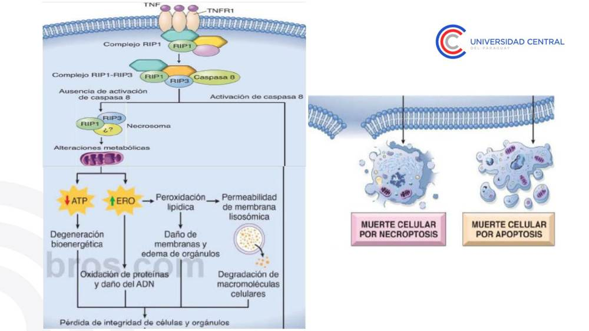
Em uma frase: parece necrose ao microscópio, mas é programada como apoptose e não usa caspasas.
2.5 Quadro comparativo Necrosis × Apoptosis
Necrose × apoptose × necroptose
Rasgos
- Célula aumentada
- Picnosis → cariorrexis → cariólisis
- Membrana rota
- Contenido sale → inflamación
- Siempre patológica
Rasgos
- Célula reducida
- Fragmentación en nucleosomas
- Membrana íntegra
- Cuerpos apoptóticos, sin inflamación
- Fisiológica o patológica
Rasgos
- Programada como la apoptosis
- Morfología de necrosis
- Sin caspasas
- RIPK1, RIPK3, MLKL
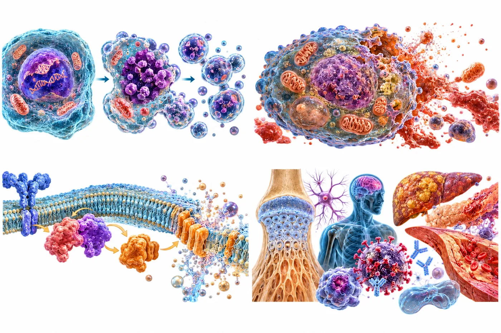
- célula aumenta (edema)
- membrana rota, contenido sale
- inflamación
- picnosis → cariorrexis → cariólisis
- célula se encoge
- membrana íntegra, cuerpos apoptósicos
- sin inflamación
- condensación de la cromatina · caspasas
Ela já pediu esse quadro para preencher ("quadro comparativo características entre apoptosis y necrosis": membrana plasmática, inflamación...).
| Característica | Necrosis | Apoptosis |
|---|---|---|
| Regulación | "Accidental", NO regulada | Programada, altamente regulada (vías genéticas) |
| Siempre patológica? | Siempre patológica | Fisiológica o patológica |
| Tamaño celular | Aumentado (tumefacción) | Reducido (retracción) |
| Núcleo | Picnosis → cariorrexis → cariólisis | Condensación de cromatina y fragmentación (≥2 fragmentos) |
| Membrana plasmática | Rota | Intacta, estructura alterada (señal para fagocitos) |
| Contenido celular | Digestión enzimática, puede escapar de la célula | Intacto, liberado en cuerpos apoptósicos |
| Inflamación | Sí (frecuente) | No |
| Extensión | Grupos de células (tejido) | Células individuales |
| Enzimas clave | Fosfolipasas, proteasas, enzimas lisosómicas | Caspasas, endonucleasas |
Cite dos enzimas involucradas en el proceso de muerte por apoptosis. → Caspasas y endonucleasas
Sustancia liberada de la mitocondria al citosol para activar el proceso apoptótico. → Citocromo C
¿Qué trastorno clínico se asocia con una apoptosis fisiológica? → Eliminación de las membranas interdigitales para formación de los dedos
¿Qué trastorno clínico se asocia con apoptosis patológica? → Paciente con demencia por enfermedad de Parkinson
Enfermedad de Alzheimer y mal plegamiento de proteínas, ¿qué muerte es? → Apoptosis (patológica)
Las células tienen mecanismos por el cual reparan el daño en el ADN, pero cuando la afectación es demasiado grave la célula inicia un proceso de muerte que corresponde a ______ → Apoptosis
Células tumorales reducidas de tamaño, proceso de muerte. → Apoptosis (por caspasas)
Linfoma tratado con quimioterápico que provoca fragmentación de núcleos y citoplasma de células individuales. → Apoptosis
Aspectos histológicos de la apoptosis y no de la necrosis (marcar). → Retracción celular, condensación de cromatina, cuerpos apoptósicos, sin inflamación
Fontes: P1 2024 (apoptose caiu na P1 naquele ano), P2 turma I, recuperatórias, slide Clase 5 pág. 16.
2.6 Casos resueltos · raciocínio passo a passo
Biópsia hepática na hepatite viral aguda: hepatócitos isolados, pequenos, muito eosinófilos, núcleo fragmentado, sem neutrófilos ao redor.
1) Que morte é essa?
Apoptosis: cuerpos de Councilman.
2) Quem mata e por qual via?
Linfócitos T citotóxicos: FasL → Fas (FADD → caspasa 8) e perforina + granzimas.
3) Por que não há neutrófilos?
Membrana íntegra, sem DAMPs; a fosfatidilserina chama os macrófagos.
4) Como fica o ADN na eletroforese?
Escalera (cortes entre nucleossomos).
Homem de 55 anos com linfonodos indolores; biópsia: linfoma folicular com t(14;18).
1) Que proteína está aumentada?
BCL2.
2) Por que o tumor cresce?
Mitocôndria fechada: sem citocromo c, sem apoptosoma, sem caspasa 9. Os linfócitos não morrem.
3) Quem fica sem efeito?
BAX y BAK (e os sensores BH3).
Uma célula infectada por citomegalovírus, que inibe a caspasa 8, recebe sinal de TNF.
1) Morre por apoptose?
Pela via do TNF, não: caspasa 8 bloqueada.
2) Que via assume?
Necroptosis: RIPK1/RIPK3 → MLKL.
3) Morfologia e inflamação?
Aspecto de necrose, com inflamação; sem caspasas.
- Cite la característica morfológica más importante de la apoptosis:
- A Tumefacción celular
- B Condensación de la cromatina
- C Rotura de la membrana
- D Inflamación
- Las dos enzimas involucradas en la apoptosis son:
- A Caspasas y endonucleasas
- B Fosfolipasas y proteasas
- C Lipasas y amilasas
- D Citocromo C y BCL2
- ¿Cuál es una proteína antiapoptósica?
- A BAX
- B BAK
- C BIM
- D BCL2
- En la vía intrínseca, ¿qué sale de la mitocondria al citosol?
- A Caspasa 8
- B Fas
- C Citocromo C
- D TNF
- La caspasa iniciadora de la vía extrínseca es:
- A Caspasa 9
- B Caspasa 8
- C Caspasa 3
- D Caspasa 1
- ¿Cuál es un ejemplo de apoptosis fisiológica?
- A Eliminación de las membranas interdigitales
- B Muerte de neuronas en Alzheimer
- C Muerte de hepatocitos en hepatitis viral
- D Muerte de células tumorales por quimioterapia
- La necroptosis se caracteriza por:
- A Depender de caspasa 9
- B No tener rotura de membrana
- C Ser siempre fisiológica
- D Ser programada, independiente de caspasas, vía RIPK1/RIPK3
- Durante la embriogénesis, la formación de los dedos requiere la eliminación de las membranas interdigitales. La enzima efectora final de este proceso es:
- A Fosfolipasa A2
- B Lipasa pancreática
- C Caspasa
- D NADPH oxidasa
- En una hepatitis viral, los linfocitos T citotóxicos inducen la muerte de hepatocitos al unir su ligando a un receptor de la superficie del hepatocito. ¿Qué vía y qué enzima participan?
- A Vía intrínseca, BCL2
- B Vía extrínseca (Fas/CD95), caspasas
- C Necroptosis, caspasa 9
- D Necrosis coagulativa, endonucleasas
- Una célula con daño del ADN irreparable presenta sobreexpresión de BCL2. ¿Qué se espera?
- A Inhibición de la apoptosis y supervivencia celular
- B Aumento de la liberación de citocromo C
- C Activación de BAX y BAK
- D Necrosis licuefactiva
- Respecto a la necroptosis, es correcto:
- A Morfológicamente se parece a la apoptosis y depende de caspasas
- B Es siempre fisiológica
- C No produce rotura de membrana
- D Morfológicamente se parece a la necrosis, es programada y no activa caspasas
- Verdadero o falso: En la apoptosis, la membrana plasmática se rompe y el contenido celular sale al espacio extracelular.
- A Verdadero
- B Falso
- 1 · B La cromatina se condensa en la periferia del núcleo; la célula se encoge y la membrana sigue íntegra.
- 2 · A Citocromo C no es enzima; BCL2 es proteína antiapoptósica.
- 3 · D Antiapoptósicas: BCL2, BCL-XL, MCL1. Proapoptósicas: BAX, BAK. Sensores: BAD, BIM, BID, Puma, Noxa.
- 4 · C Citocromo C + Apaf-1 → apoptosoma → caspasa 9.
- 5 · B Fas/TNFR1 → FADD → procaspasa 8 → caspasa 8. La 9 es de la vía mitocondrial.
- 6 · A Fisiológicas: embriogénesis, menstruación, involución hormonal, eliminación de linfocitos autorreactivos.
- 7 · D Morfología de necrosis, regulación de apoptosis.
- 8 · C Apoptose fisiológica, executada por caspasas.
- 9 · B Ligando de Fas → Fas (CD95) → FADD → caspasa 8. BCL2 é antiapoptótica (resposta errada que um aluno deu).
- 10 · A BCL2 mantém a membrana mitocondrial externa fechada, o citocromo C não sai e a célula sobrevive (base de linfomas).
- 11 · D Morfologia de necrose, mecanismo de apoptose, independente de caspasas.
- 12 · B Membranas e cuerpos apoptósicos permanecem intactos; o conteúdo não sai, por isso não há inflamação.
Acumulación: lípidos
Por que a célula acumula: os 4 mecanismos, esteatosis, colesterol, aterosclerosis e glucógeno.
- Acumulación = depósito de una sustancia que la célula no consigue eliminar. 4 mecanismos: eliminación inadecuada, sustancia anómala, falta de enzima, sustancia exógena.
- Clase 6 nova = lípidos: triglicéridos, colesterol, fosfolípidos. O foco é colesterol.
- Aterosclerosis: placa con núcleo lipídico + capa fibrosa; células espumosas = macrófagos + células musculares lisas.
- Factores de riesgo: no modificables (edad, sexo, genética) × modificables (hiperlipidemia, HTA, tabaco, DM).
- Placa vulnerable: núcleo lipídico grande, capa fibrosa delgada, muchas células inflamatorias → rotura, hemorragia, trombosis.
- Xantomas, colesterolosis (vesícula "en fresa"), Niemann-Pick C. Esteatosis y glucógeno: slide antigo, ler por último.
Pense num depósito. Algo se acumula dentro da célula por 4 motivos:
- chega demais e a saída não dá conta: esteatosis no álcool;
- sai com defeito de embalagem e não é despachado: dobramento ou transporte defeituoso (α1-antitripsina);
- falta o funcionário que desmonta: enzima lisossômica ausente (Niemann-Pick, glucogenosis);
- chega algo que ninguém sabe desmontar: pigmentos e partículas exógenas.
Poligonal, núcleo central, citoplasma rosa granular.
Muitas gotículas de triglicéridos; o núcleo continua no centro. No H&E a gordura sai no processamento e fica um vacúolo claro; para corar a gordura: Sudán / aceite rojo O (tecido congelado).
As gotículas se fundem num grande vacúolo que empurra o núcleo para a periferia. Causa mais comum: álcool; também obesidade, diabetes, desnutrição proteica, toxinas.
Macrófago (ou célula muscular lisa) cheio de vacúolos de colesterol e ésteres que dão aspecto de espuma. É a célula da estría grasa e do ateroma.
Vacúolos claros no citoplasma; cora de rosa-violáceo com PAS ou carmín de Best. Diabetes mellitus (túbulos renais, hepatócitos, ilhotas) e glucogenosis (enzimopatias). Baixa prioridade: estava só no slide antigo.
Organograma das acumulações
Triglicéridos
- Esteatosis (só citada no slide atual)
- Hígado, corazón, músculo, riñón
- Sudán / aceite rojo O
Colesterol y ésteres
- Aterosclerosis: células espumosas
- Xantomas
- Colesterolosis (vesícula en fresa)
- Niemann-Pick tipo C
Dónde
- Diabetes mellitus: túbulos renales, hepatocitos, islotes
- Glucogenosis (enzimopatías)
- Vacuolas claras
- PAS / carmín de Best: rosa-violáceo
Otras acumulaciones
- Proteínas: gotículas eosinófilas, Russell, Mallory, Lewy
- Amiloidosis (extracelular)
- Calcificación distrófica × metastásica
Toda substância está numa balança entrada/produção × uso/saída/degradação. Acumula quando pende para a entrada.
1 · Normal, entra mais do que sai
Triglicerídeos: hígado graso.
2 · Endógena anómala
Fabricada errado: α1-antitripsina presa no RE (cirrose + enfisema).
3 · Falta a enzima
Lisossomal, hereditária: tesaurismosis (Niemann-Pick, glucogenosis).
4 · Exógena
Não digerida nem exportada: carvão (antracosis).
A acumulação é pista morfológica de doença metabólica; as progressivas lesam e matam a célula.
3.1 4 mecanismos
| Mecanismo (slide) | Defecto | Ejemplo del slide |
|---|---|---|
| 1. Eliminación inadecuada de una sustancia normal | Defectos en el mecanismo de empaquetamiento y transporte | Esteatosis hepática |
| 2. Acumulación de una sustancia endógena anómala | Defectos genéticos o adquiridos en el plegamiento, empaquetamiento, transporte o secreción | Mutaciones de α1-antitripsina |
| 3. Falta de degradación de un metabolito | Carencias enzimáticas hereditarias | Tesaurismosis o enfermedades por almacenamiento |
| 4. Depósito de una sustancia exógena anómala | Carencia de maquinaria enzimática para degradarla o habilidad para transportarla | Carbono o sílice |
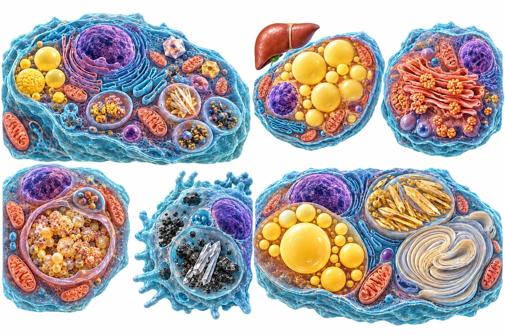
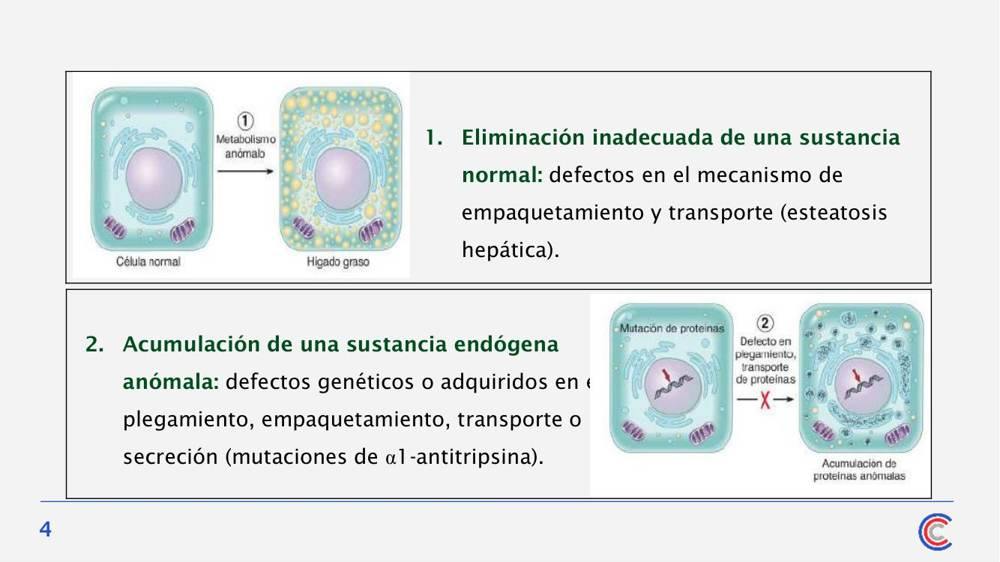
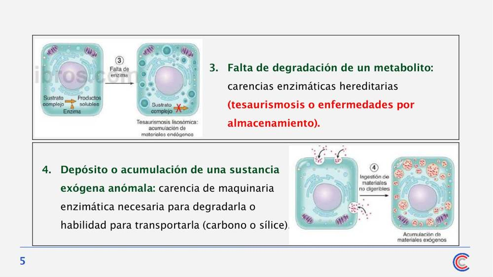
3.2 Lípidos
Se acumulan todas las clases de lípidos: 1. Triglicéridos · 2. Colesterol/ésteres de colesterol · 3. Fosfolípidos (componentes de figuras de mielina en células necróticas).
3.3 Esteatosis (cambio graso – degeneración grasa)
Esteatose: causa, mecanismo, aspecto
Principales
- Alcohol (la más frecuente)
- Diabetes / síndrome metabólico
- Obesidad
- Toxinas, desnutrición proteica, hipoxia
Fallas posibles
- ↑ Entrada de ácidos grasos
- ↑ Síntesis o ↓ oxidación
- ↓ Apoproteínas
- ↓ Secreción de lipoproteínas
Aspecto
- Macro: hígado grande, amarillo, graso
- Micro: vacuolas claras que desplazan el núcleo
- Micro/macrovesicular
- Tinción: Sudán IV, aceite rojo O
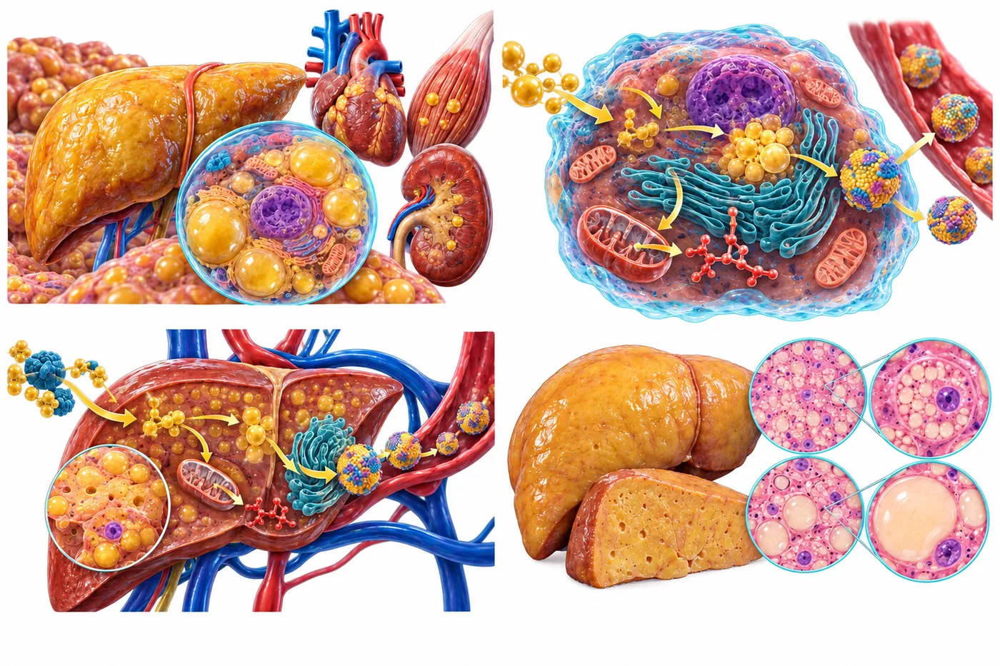
- Central do metabolismo lipídico: recebe ácidos graxos, fabrica triglicerídeos, exporta VLDL. Coração e rim também (anemia grave, hipóxia), mas importa menos.
- Álcool e doença hepática gordurosa não alcoólica (obesidade, resistência à insulina, DM2, dislipidemia).
Patogenia: defecto en uno o más de los 6 pasos del metabolismo lipídico
- Mayor ingreso hepático de AG.
- Mayor síntesis hepática de AG.
- Menor conversión de AG a cuerpos cetónicos (mayor esterificación a triglicéridos).
- Aumento de α-glicerofosfato (mayor esterificación a triglicéridos).
- Menor síntesis de la "proteína aceptora de lípidos" (menor formación de lipoproteínas).
- Bloqueo de excreción de lipoproteínas al plasma.
Raciocínio: entra mais gordura, fabrica-se mais gordura, ou ela não consegue sair do hepatócito (falta apoproteína/lipoproteína). Álcool atua em vários passos; desnutrição proteica atua no passo 5 (falta proteína aceptora).
| Causa | Mecanismo | Passos |
|---|---|---|
| Álcool | excesso de NADH: ↑ ácidos graxos e α-glicerofosfato, ↓ oxidação; lesa microtúbulos e a secreção de lipoproteínas. Poucos dias bastam. | 2, 3, 4, 6 |
| Obesidade / DM2 | resistência à insulina → ↑ lipólise → mais ácidos graxos ao fígado; hiperinsulinemia ↑ síntese | 1, 2 |
| Kwashiorkor, CCl₄ | falta apoproteína ou RE lesado: triglicerídeo não é empacotado | 5, 6 |
| Anoxia | sem O₂ a mitocôndria não oxida ácidos graxos | 3 |
Morfología
Microvesicular
Gotículas ao redor do núcleo. Pura = disfunção mitocondrial grave (esteatose aguda da gravidez, Reye, fármacos).
Macrovesicular
Uma gota grande empurra o núcleo para a periferia: hepatócito parece adipócito.
Macroscopia ("rasgos macroscópicos")
3–6 kg, amarelo, mole, gorduroso, cápsula tensa, bordas arredondadas.
Por que congelação?
Álcool e xilol da parafina dissolvem lipídios. Corte congelado + Sudán (III/IV vermelho; negro B) ou aceite rojo O.
- No H&E a gordura sai no processamento com álcool/xilol, por isso o vacúolo é transparente. Para demonstrar lipídio precisa corte por congelação + Sudán/aceite rojo O. Sudán negro B dá cor azul-negra aos triglicerídeos (caiu como lacuna).
- Vacúolos transparentes também aparecem no glicogênio. A diferença está na coloração especial: lipídio = Sudán / aceite rojo O; glicogênio = PAS / carmín de Best.
- "Hígado 2 veces el tamaño normal, amarillo, liso, vacuolas transparentes" com opções hepatitis viral, dieta rica em fibras, alcohol, anemia hemolítica → consumo de alcohol.
- Esteatose é lesão reversível. Se a pergunta for "proceso asociado a lesión celular reversible", esteatose hepática por obesidade/DM é a resposta.
3.4 Colesterol y ésteres de colesterol
3.5 Ateroesclerosis
Organograma da aterosclerose
No modificables
- Edad
- Sexo masculino
- Antecedentes familiares
- Genética
Modificables
- Hipercolesterolemia (LDL ↑, HDL ↓)
- HTA
- Tabaco
- DM / síndrome metabólico
- PCR (inflamación)
Pasos
- 1. Lesión / disfunción endotelial
- 2. Entrada y oxidación de LDL
- 3. Adhesión de monocitos → macrófagos
- 4. Células espumosas (macrófagos + CML)
- 5. Migración y proliferación de CML
- 6. Matriz extracelular: placa
Componentes
- Capa fibrosa (CML, colágeno)
- Núcleo necrótico: lípidos, restos, células espumosas
- Hombro: macrófagos, linfocitos T
Estable × vulnerable
- Estable: capa gruesa, poco lípido
- Vulnerable: capa fina, mucho lípido e inflamación
De la placa
- Rotura, ulceración, erosión → trombosis
- Hemorragia intraplaca
- Ateroembolia
- Calcificación distrófica
Del vaso
- Aneurisma (debilita la media)
- Estenosis → isquemia
- Doença da íntima de artérias grandes e médias (aorta, coronárias, carótidas, ilíacas, cerebrais); por trás do IAM e do AVC isquêmico.
- Hendiduras de colesterol: cristais dissolvidos no processamento deixam fendas vazias em agulha.
Núcleo
Mole, amarelo: colesterol, células mortas, restos.
Capa fibrosa
Músculo liso + colágeno. Grossa = estável · fina = vulnerável.
Factores de riesgo
| No modificables (congénitas) | Modificables (adquiridos) |
|---|---|
| Anomalías genéticas · Antecedentes familiares · Edad avanzada · Sexo masculino | Hiperlipidemia (hipercolesterolemia) · Hipertensión arterial · Tabaquismo · Diabetes – Síndrome metabólico · Inflamación (PCR) |
Lipoproteínas de baja densidad (LDL): colesterol malo. Lipoproteínas de alta densidad (HDL): colesterol bueno.
| Factor | Por quê |
|---|---|
| LDL alto | o mais importante, causa sozinho; a LDL leva colesterol à íntima. HDL faz o inverso (protege). |
| Hipertensión | força mecânica lesa o endotélio e ↑ entrada de lipoproteínas |
| Tabaquismo | radicais livres, lesão endotelial, oxidação da LDL |
| Diabetes / síndrome metabólica | glicação da parede, ↑ LDL, ↓ HDL; risco de infarto dobra |
| PCR | inflamação crônica de baixo grau; prediz eventos |
| No modificables | idade, sexo masculino (estrogênio protege até a menopausa), história familiar, hipercolesterolemia familiar (receptor de LDL) |
Um aluno escreveu "HDL alto y LDL bajo" como fator de risco. Está invertido. O risco é LDL alto e HDL bajo. No quadro de opções dela aparece "Colesterol LDL bajo" como distrator. "Consumo moderado de alcohol" não é fator de risco para ateroma. "Sexo masculino" é não modificável; numa questão de fator adquirido é distrator.
Patogenia
- Lesión endotelial: HTA, tabaco, hiperlipidemia, fluxo turbulento; endotélio permeável e com moléculas de adesão.
- LDL na íntima e oxidada: tóxica e pró-inflamatória.
- Monócitos → macrófagos: engolem LDL oxidada por receptores "scavenger" sem freio → células espumosas → estría grasa (já em crianças).
- Linfócitos T: mantêm a inflamação crônica. Células da placa = macrófagos y linfocitos T.
- Músculo liso migra: PDGF, FGF, TGF-β o trazem da média para a íntima; produz colágeno (capa fibrosa) e também vira espumosa.
- Núcleo necrótico: espumosas morrem e soltam lipídio; neovasos, calcificação, placa cresce para a luz.
Morfología
| Estable | Vulnerable | |
|---|---|---|
| Capa | grossa | fina, muitos macrófagos com metaloproteinasas |
| Tamanho | grande, estreita a luz devagar | pode ser pequena |
| Clínica | angina estable, claudicação intermitente | rotura → trombo em minutos: IAM, angina inestable, AVC |
Por isso a maioria dos infartos vem de placas que não eram críticas.
Cambios agudos de la placa
| Complicación | Consecuencia |
|---|---|
| Rotura / ulceración + trombosis | oclusão aguda: IAM (coagulativa), AVC (licuefactiva), gangrena |
| Hemorragia en la placa | a placa cresce de repente e pode romper a capa |
| Ateroembolia | cristais de colesterol ocluem pequenas artérias (rim, pele, retina) |
| Aneurisma | atrofia da média, perda de tecido elástico; aorta abdominal; rotura fatal |
| Calcificación distrófica | artéria rígida ("tubo de louça") |
- Células espumosas = macrófagos + células musculares lisas cheias de lipídio. Linfócitos T estão na placa, mas não são células espumosas.
- Placa firme amarela: a substância abundante é colesterol y ésteres de colesterol, não triglicerídeos.
- Complicação da placa entre "taponamiento, rotura del músculo papilar, hemorragia pericárdica, formación de aneurismas" → aneurismas. As outras são complicações do infarto, não da placa.
- Cálcio na íntima de placa = calcificação distrófica (tecido lesado, cálcio sérico normal).
- "Cite 2 componentes principales de la placa": use a tríade do slide (células · matriz extracelular · lípidos). Na prova antiga foram aceitas várias formas; a do slide é a mais segura.
- "2 células inflamatorias presentes en la placa" → macrófagos y linfocitos T.
3.6 Xantomas, colesterolosis y Niemann-Pick tipo C
| Entidad | Slide | Dica |
|---|---|---|
| Xantomas | Acumulación intracelular de colesterol en macrófagos también es propia de los estados hiperlipidémicos hereditarios y adquiridos. En el tejido conjuntivo subepitelial de la piel y los tendones se encuentran agregados de células espumosas, que generan masas tumorales. | Xantelasma = pálpebra. |
| Colesterolosis | Acumulación focal de macrófagos cargados de colesterol en la lámina propia de la vesícula biliar. Mecanismo desconocido. | Patrón en fresa. |
| Niemann-Pick, tipo C | Tesaurismosis lisosómica causada por mutaciones (genes NPC1 y NPC2) que originan un defecto primario en el transporte del colesterol libre desde los lisosomas al citoplasma. Se acumula colesterol, gangliósidos. | Baço com macrófagos espumosos. |
As três têm macrófagos espumosos com colesterol; mudam lugar e causa.
Xantomas
Colesterol sobra no sangue; nódulos amarelos na derme e tendões. Xantelasma = pálpebras.
Colesterolosis
Colesterol da bile nos macrófagos da lâmina própria da vesícula: "vesícula em morango".
Niemann-Pick C
Colesterol não sai do lisossomo (NPC1/NPC2): SNC (ataxia, demência), baço, fígado.
3.7 Glucógeno
- Solúvel em água: some no processamento, vacúolos claros. Cora com PAS ou carmín de Best; PAS negativo após diastasa confirma.
- Diabetes: túbulos renais (Armanni-Ebstein), hepatócitos (núcleos "vazios"), células β, miocárdio.
| Glucogenosis | Enzima | Achado |
|---|---|---|
| I · von Gierke | glicose-6-fosfatase | fígado grande + hipoglicemia |
| II · Pompe | maltase ácida lisossomal | cardiomegalia |
| IV · Andersen (slide) | enzima ramificadora | glicogênio pouco ramificado, cirrose na infância |
| V · McArdle | fosforilase muscular | cãibras no exercício |
Macrófagos y células musculares lisas cargados de lípidos reciben el nombre de ______ → Células espumosas
Cite 2 células inflamatorias en la placa aterosclerótica. → Macrófagos y linfocitos T
Cite 2 factores de riesgo no modificables. → Sexo masculino, edad avanzada (antecedentes familiares, anomalías genéticas)
¿Cuál es un factor de riesgo adquirido? a) sexo masculino b) consumo moderado de alcohol c) síndrome metabólico d) aumento de colesterol LDL → c y d estão no slide como modificables; na versão com resposta registrada, a aceita foi DM / síndrome metabólico. Se só puder uma, veja o quadro de pegadinha abaixo.
Cite 2 cambios patológicos que pueden sufrir las placas. → Rotura/ulceración con trombosis; hemorragia dentro de la placa (ateroembolia, aneurisma, calcificación)
¿Cuál corresponde a una complicación de las placas ateromatosas? → Formación de aneurismas
Placa ateromatosa con depósitos de calcio en la íntima corresponde a una calcificación ______ → Distrófica
Placa de aspecto firme, color amarillo oscuro. Microscópicamente, ¿qué sustancias en abundancia? → Colesterol y ésteres de colesterol
Vesícula biliar con patrón en fresa, macrófagos espumosos en la lámina propia → Aumento de colesterol (colesterolosis)
Acumulación focal de macrófagos cargados de colesterol en la vesícula biliar se localiza en la ______ → Lámina propia
Dos tinciones específicas para glucógeno. → PAS y carmín de Best
Tinción preferible para acumulaciones en la glucogenosis tipo IV: H&E, tricrómica de Mallory, ácido periódico de Schiff, aceite rojo O → Ácido periódico de Schiff (PAS)
La tinción ______ da una coloración azul negro a depósito intracelular excesivo de triglicéridos. → Sudán negro B
Principal órgano de la esteatosis. → Hígado · comorbidad asociada → Diabetes mellitus
Dos rasgos macroscópicos del hígado con esteatosis. → Agrandado (peso aumentado), amarillo; cápsula tensa, brillante, bordes redondeados
Pelo slide, hiperlipidemia e diabetes/síndrome metabólico são os dois modificáveis. Se as duas estiverem nas opções e a questão pedir uma só, marque aumento de colesterol LDL, porque o slide põe hiperlipidemia em primeiro lugar e o Robbins chama a hipercolesterolemia de fator de risco principal. Não há gabarito oficial dessa versão.
A P2 da turma D (outro ano) incluiu pigmentos, amiloide e hialino, que não estão no slide da Clase 6. Se sobrar tempo: hemosiderina → azul de Prusia; células de la insuficiencia cardíaca = macrófagos alveolares con hemosiderina; lipofuscina = envejecimiento/atrofia parda; hialina de Mallory = filamentos intermedios de queratina (alcohol); cuerpos de Russell = inmunoglobulina; rojo Congo = amiloide verde manzana en luz polarizada; cuerpos de psamoma = calcificación distrófica (carcinoma papilar de tiroides).
3.8 Casos resueltos · raciocínio passo a passo
Homem de 50 anos, etilista há 20 anos, com hepatomegalia. Biópsia: hepatócitos com um grande vacúolo claro que empurra o núcleo.
1) Que acumulação?
Esteatosis macrovesicular.
2) Por que o álcool causa?
Excesso de NADH: ↑ síntese, ↓ oxidação, ↓ secreção de lipoproteínas.
3) Como provar que é gordura?
Corte congelado + Sudán ou aceite rojo O.
4) Macroscopia?
Grande, amarelo, mole, gorduroso, bordas arredondadas.
5) Reverte?
Sim, se parar de beber; se não: esteatohepatite → fibrose → cirrose.
Homem de 58 anos, fumante, hipertenso, LDL 190 mg/dL, com dor torácica súbita em repouso. Trombo sobre uma placa que obstruía só 40% da luz.
1) Que placa era?
Vulnerável: capa fina, macrófagos, metaloproteinasas.
2) Por que o trombo em minutos?
Rotura da capa expôs o núcleo trombogênico.
3) Células inflamatórias da placa?
Macrófagos (espumosas) e linfócitos T.
4) Fator de risco mais importante?
LDL alto.
5) Necrose no miocárdio?
Coagulativa.
- Las células espumosas de la placa ateromatosa son:
- A Neutrófilos y linfocitos
- B Macrófagos y células musculares lisas cargados de lípidos
- C Fibroblastos y mastocitos
- D Hepatocitos con esteatosis
- Los ésteres de colesterol extracelulares de la placa cristalizan formando:
- A Hendiduras de colesterol
- B Cuerpos de Russell
- C Cuerpos de psamoma
- D Hialina de Mallory
- Placa vulnerable, con mayor riesgo de rotura:
- A Cubierta fibrosa gruesa y poco lípido
- B Calcificación extensa estable
- C Sin células inflamatorias
- D Núcleo lipídico grande y cubierta fibrosa delgada
- Factor de riesgo modificable de aterosclerosis:
- A Edad
- B Sexo masculino
- C Hiperlipidemia
- D Antecedente familiar
- Vesícula biliar con mucosa "en fresa" por macrófagos espumosos en la lámina propia:
- A Xantoma
- B Colesterolosis
- C Niemann-Pick tipo C
- D Esteatosis
- Niemann-Pick tipo C se debe a:
- A Mutaciones de una proteína de transporte de colesterol (NPC1/NPC2)
- B Déficit de lipasa
- C Exceso de glucógeno
- D Acumulación de amiloide
- Hombre de 50 años, obeso y diabético, con hepatomegalia. La biopsia muestra vacuolas transparentes en hepatocitos. Para confirmar que son lípidos en un corte por congelación, se usa:
- A PAS
- B Carmín de Best
- C Tricrómico de Masson
- D Aceite rojo O
- En la desnutrición proteica (kwashiorkor) se produce hígado graso principalmente por:
- A Mayor ingreso hepático de AG
- B Aumento de α-glicerofosfato
- C Menor síntesis de la proteína aceptora de lípidos
- D Mayor conversión a cuerpos cetónicos
- En una placa ateroesclerótica, ¿cuál de los siguientes corresponde a una placa estable?
- A Cubierta fibrosa delgada con abundantes macrófagos
- B Cubierta gruesa de colágeno denso con mínima inflamación
- C Núcleo lipídico grande con pocas células musculares lisas
- D Agregados de células inflamatorias en el hombro de la placa
- ¿Cuál de los siguientes es un factor de riesgo NO modificable para ateroesclerosis?
- A Antecedentes familiares
- B Tabaquismo
- C Hipertensión arterial
- D Aumento de la PCR
- Mujer de 55 años con dolor abdominal. La colecistectomía muestra mucosa amarilla puntiforme sobre fondo rojo ("en fresa"). Microscópicamente se esperan:
- A Neutrófilos en toda la pared
- B Granulomas con necrosis caseosa
- C Glucógeno en el epitelio
- D Macrófagos cargados de colesterol en la lámina propia
- Niño de 3 años con hepatomegalia e hipoglucemia. La biopsia muestra hepatocitos con vacuolas claras que se tiñen de rosa-violáceo con PAS. El diagnóstico más probable es:
- A Esteatosis
- B Niemann-Pick tipo C
- C Glucogenosis
- D Colesterolosis
- Verdadero o falso: Las células espumosas de la placa ateromatosa son macrófagos y células musculares lisas cargados de colesterol.
- A Verdadero
- B Falso
- 1 · B Ingieren LDL oxidada; caiu em prova várias vezes.
- 2 · A Largas agujas que en el corte dejan espacios vacíos (hendiduras).
- 3 · D Muitas células espumosas, capa fina e inflamação → rotura, trombo.
- 4 · C Modificables: hiperlipidemia, HTA, tabaquismo, diabetes. No modificables: edad, sexo, genética.
- 5 · B Acumulação de colesterol em macrófagos da lâmina própria.
- 6 · A Defeito do transporte de colesterol nos lisossomos.
- 7 · D Lipídios: Sudán III/IV/negro B, aceite rojo O. PAS e Best são para glicogênio (também faz vacúolos claros).
- 8 · C Sem proteína não se forma lipoproteína e o TG fica preso (passo 5). d está invertido: a esteatose tem menor conversão a corpos cetônicos.
- 9 · B Todas as outras são marcas de placa vulnerável.
- 10 · A A PCR (inflamação) está no slide como modificável.
- 11 · D Colesterolosis.
- 12 · C PAS/Best rosa-violáceo = glicogênio; defeito enzimático hereditário.
- 13 · A Verdadero.
Acumulación: proteínas, amiloide, calcio
Proteínas, amiloide e calcio: onde está o depósito e por que chegou ali.
Onde a Clase 7 se encaixa
Triglicéridos
- Esteatosis (só citada no slide atual)
- Hígado, corazón, músculo, riñón
- Sudán / aceite rojo O
Colesterol y ésteres
- Aterosclerosis: células espumosas
- Xantomas
- Colesterolosis (vesícula en fresa)
- Niemann-Pick tipo C
Dónde
- Diabetes mellitus: túbulos renales, hepatocitos, islotes
- Glucogenosis (enzimopatías)
- Vacuolas claras
- PAS / carmín de Best: rosa-violáceo
Otras acumulaciones
- Proteínas: gotículas eosinófilas, Russell, Mallory, Lewy
- Amiloidosis (extracelular)
- Calcificación distrófica × metastásica
- Proteínas se acumulan como gotículas eosinófilas. 5 causas: reabsorción en túbulo proximal, inmunoglobulinas (cuerpos de Russell), transporte defectuoso (α1-antitripsina), citoesqueleto (hialina de Mallory, ovillos neurofibrilares, cuerpos de Lewy) y agregación anómala (amiloide).
- Amiloidosis: proteína mal plegada en fibrillas, siempre extracelular, sin inflamación. Primaria = AL (mieloma); secundaria = AA (AR, Crohn, colitis ulcerosa); Alzheimer = β-amiloide. Rojo Congo + luz polarizada = verde manzana. Riñón: lo más frecuente y grave.
- Calcificación patológica: distrófica (tejido muerto, calcemia normal, irreversible) × metastásica (tejido normal, hipercalcemia, reversible). Cuerpos de psamoma = distrófica en cáncer papilar.
- Proteínas = gotículas rosadas. A célula engole demais (túbulo renal na proteinúria), produz demais (Ig no plasmócito → Russell), não consegue exportar (α1-antitripsina) ou o esqueleto embola (Mallory, Alzheimer, Lewy).
- Amiloide = proteína mal dobrada que vira um "papel amassado" rígido fora das células; no Rojo Congo polarizado brilha verde manzana.
- Calcio = vira "cimento". No tecido morto, com cálcio normal no sangue: distrófica. No tecido sano, porque sobra cálcio no sangue: metastásica.
Na proteinúria o túbulo proximal reabsorve mais proteína por pinocitosis: gotículas rosadas no citoplasma. PROCESO REVERSIBLE: a proteinúria diminui e elas desaparecem.
A célula plasmática produz inmunoglobulinas em excesso, o RE se distende e formam-se grandes inclusões eosinófilas homogéneas.
A proteína mutada dobra devagar e fica presa no RE do hepatócito (glóbulos eosinófilos, PAS +). Sem a enzima circulando, o pulmão faz ENFISEMA; o estresse do RE leva à apoptose.
Agregados de filamentos intermediários de queratina no hepatócito, junto à esteatose, na hepatopatia alcohólica. Mesmo grupo (citoesqueleto): ovillos neurofibrilares (Alzheimer, prata) e cuerpos de Lewy (α-sinucleína, IHQ ubiquitina).
H&E: rosa pálido, homogêneo, amorfo · Rojo Congo: vermelho-alaranjado · luz polarizada: birrefringência verde manzana (patognomônico). Não induz inflamação.
Depósito local em tecido lesionado ou morto, com cálcio sérico normal. Geralmente irreversível. Necrose (todas), ateromas, válvulas lesadas ou de idosos, Mönckeberg. H&E: basófilo, granular, amorfo.
Depósito em tecido normal por HIPERCALCEMIA: ↑ PTH, reabsorção óssea (mieloma, metástases, imobilização), vitamina D, insuficiência renal crônica. Reversível se a causa for corrigida.
Camadas concêntricas que lembram grãos de areia; típicos de cânceres papilares (tireoide, ovário seroso).
A Clase 6 foi a gordura. A Clase 7 é o resto que entope a fábrica: proteína e cálcio.
| O que se vê | O que é |
|---|---|
| Gotícula rosa dentro da célula | proteína intracelular |
| Rosa pálido entre as células, verde-maçã na polarização | amiloide |
| Grânulo azul-violeta em tecido morto | calcificación distrófica |
| Grânulo azul-violeta em tecido sadio + cálcio alto | calcificación metastásica |
4.1 Proteínas
Organograma: acumulação de proteínas
Claves
- Proteinuria → túbulo proximal reabsorbe más por pinocitosis
- Gotículas hialinas rosadas
- REVERSIBLE
Claves
- Exceso de Ig distiende el RE
- Cuerpos de Russell
- Inclusiones eosinófilas homogéneas
Claves
- Deficiencia de α1-antitripsina
- Glóbulos eosinófilos en el RE del hepatocito (PAS +)
- Pulmón sin enzima → ENFISEMA
- Estrés del RE → apoptosis
Queratina
- Hialina alcohólica / de Mallory
- Hepatopatía alcohólica
Neurofilamentos
- Ovillos neurofibrilares
- Alzheimer · tinción de plata
α-sinucleína
- Cuerpos de Lewy
- Demencia de cuerpos de Lewy · IHQ ubiquitina
Claves
- Proteínas mal plegadas
- Depósitos IC, EC o ambos
- AMILOIDOSIS: fibrillas insolubles extracelulares
1. Reabsorción de gotículas en túbulos renales proximales
2. Depósitos de inmunoglobulinas
3. Transporte intracelular defectuoso: α1-antitripsina
Fabricada no fígado para proteger o pulmão da elastase. Mutada, dobra devagar e fica presa no RE do hepatócito (mecanismo 2: "sustancia endógena anómala").
Fígado
Glóbulos PAS +; estresse do RE → apoptosis → cirrose.
Pulmão
Sem antiprotease, a elastase destrói os septos: enfisema.
4. Acumulación de proteínas citoesqueléticas
| Inclusión | Proteína | Dónde / enfermedad | Cómo se ve |
|---|---|---|---|
| Hialina alcohólica (de Mallory) | Filamentos intermedios de queratina | Hepatocito · hepatopatía alcohólica | Inclusión citoplasmática eosinófila, junto a esteatosis |
| Ovillos neurofibrilares | Neurofilamentos y otras proteínas | Neurona · Alzheimer | Tinción de plata |
| Cuerpos de Lewy | α-sinucleína | Neurona · demencia de cuerpos de Lewy | Inclusiones rosadas redondeadas · IHQ ubiquitina |
4.2 Amiloidosis
Organograma da amiloidose
Claves
- Proliferación clonal de células plasmáticas
- Ig anómala: cadena ligera (AL)
- Mieloma múltiple
- Órganos: corazón, tubo digestivo, vías respiratorias, nervios periféricos, piel, lengua
Claves
- Complicación de inflamación crónica
- Proteína AA (asociada a amiloide)
- Artritis reumatoide, EII (Crohn, colitis ulcerosa)
- Órganos: riñón, hígado, bazo, ganglios, suprarrenales, tiroides
Claves
- Enfermedad de Alzheimer
- Placas cerebrales
Lista del slide
- Hereditaria o familiar
- Hemodiálisis: microglobulina β2 → túnel carpiano
- Endocrina: tumores tiroideos, pancreáticos, feocromocitoma
- Senil: corazón
| Técnica | Cómo se ve el amiloide |
|---|---|
| H&E | Material rosa pálido, homogéneo, amorfo entre las células |
| Rojo Congo (luz común) | Depósitos amorfos rojo-anaranjados |
| Rojo Congo + luz polarizada | Birrefringencia "verde manzana" (patognomónico) |
- Proteína em folha β-plegada empilha em fibrilas insolúveis, entre as células; comprime, sem inflamação.
- Rim = mais frequente e mais grave: síndrome nefrótica → insuficiência renal.
| Tipo | Proteína de origem | Contexto |
|---|---|---|
| AL | cadeia leve de Ig | plasmócito clonal: mieloma |
| AA | SAA (fase aguda, fígado) | inflamação crônica longa: AR, doença inflamatória intestinal |
| β-amiloide | Aβ | Alzheimer |
| β2-microglobulina | β2M | hemodiálise (não a filtra) |
4.3 Calcificación patológica
Organograma da calcificação patológica
Claves
- Calcemia NORMAL
- Generalmente IRREVERSIBLE
- Necrosis (todas), ateromas, válvulas dañadas o de ancianos, trombos, hematomas, tumores, Mönckeberg
Patogenia
- Proteína desnaturalizada + fosfato + Ca²⁺ → fosfato de calcio
- Iniciación: mitocondrias o vesículas
- Propagación: cristales
Morfología
- Macro: "depósitos arenosos" blanquecinos
- H&E: basófilo, granular, amorfo
- Hueso heterotópico con el tiempo
- Cuerpos de psamoma (cáncer papilar)
Claves
- HIPERCALCEMIA siempre
- REVERSIBLE si se corrige la causa
- En general sin disfunción clínica
4 causas
- ↑ PTH (hiperparatiroidismo)
- Resorción ósea: mieloma, metástasis, inmovilización
- Trastornos de vitamina D
- Insuficiencia renal crónica
- (+ síndrome leche-alcalinos)
Dónde
- Mucosa gástrica, riñones, pulmones
- Arterias sistémicas, venas pulmonares, sinovial
- Ca²⁺ sérico normal
- generalmente irreversible
- necrosis, ateroma, válvulas, Mönckeberg, TB, psamoma
- HIPERCALCEMIA (PTH, mieloma, metástasis óseas, vit. D, IRC)
- reversible si se corrige la causa
- mucosa gástrica, riñón, pulmón, vasos
| Distrófica | Metastásica | |
|---|---|---|
| Tejido | Lesionado o muerto | Normal |
| Calcio sérico | Normal | Elevado (hipercalcemia) |
| Reversible | Generalmente irreversible | Reversible si se corrige la causa |
| Ejemplos | Necrosis, ateroma, estenosis aórtica senil, Mönckeberg, TB, psamoma | Hiperparatiroidismo, mieloma, metástasis óseas, hipervitaminosis D, IRC |
| Microscopía | Basófilo, granular, amorfo; hueso heterotópico | Amorfos no cristalinos o hidroxiapatita |
Distrófica · problema no tecido
Proteína morta expõe fosfato e "puxa" o cálcio normal. Ateroma, válvula velha, granuloma de TB, tumor.
Metastásica · problema no sangue
Cálcio alto precipita em tecido sadio e alcalino: mucosa gástrica, rim, pulmão.
Cuidado: "metastásica" não tem a ver com câncer; é o cálcio que "viaja".
- Amiloide é SEMPRE extracelular. Se a opção disser "inclusão intracelular" é corpo de Russell, Mallory, Lewy ou ovillo.
- Amiloide não induz inflamação, embora a forma AA nasça de inflamação crônica.
- AL = primária = mieloma. AA = secundária = AR / Crohn / colite ulcerosa. Trocar as duas é o distrator mais óbvio.
- Rim = órgão mais frequente e mais grave. Coração = principal na senil.
- Verde maçã só aparece com Rojo Congo + luz polarizada, não no H&E.
- Distrófica: cálcio sérico normal. Metastásica: hipercalcemia. "Metastásica" ≠ câncer.
- Distrófica: irreversível. Metastásica: reversível. Reabsorção tubular de proteína: reversível.
- Psamoma é calcificação distrófica (em câncer papilar: tireoide, ovário), não metastásica.
- α1-antitripsina: proteína presa no fígado, doença no pulmão (enfisema).
- Cite 2 causas de acumulación intracelular de proteínas. → Reabsorción de gotículas en túbulos renales proximales; depósitos de inmunoglobulinas; transporte intracelular defectuoso; proteínas citoesqueléticas; agregación de proteínas anómalas.
- Inclusiones eosinófilas homogéneas en células plasmáticas por distensión del RE: → cuerpos de Russell.
- Inclusión eosinófila de hepatocitos en la hepatopatía alcohólica: → hialina alcohólica (de Mallory), filamentos de queratina.
- Cite 2 inclusiones proteicas de enfermedades neurodegenerativas. → Ovillos neurofibrilares (Alzheimer) y cuerpos de Lewy (α-sinucleína).
- La deficiencia de α1-antitripsina causa en el pulmón: → enfisema.
- Tinción y hallazgo característico del amiloide: → Rojo Congo; birrefringencia verde manzana con luz polarizada.
- Proteína de la amiloidosis primaria / secundaria: → AL (cadena ligera, mieloma) / AA (inflamación crónica: AR, EII).
- Órgano más afectado en la amiloidosis: → riñón.
- Cite los 2 tipos de calcificación patológica. → Distrófica y metastásica.
- Cite 2 causas de calcificación metastásica. → Hiperparatiroidismo (↑PTH), resorción ósea (mieloma, metástasis, inmovilización), hipervitaminosis D, insuficiencia renal crónica.
- Concreciones laminares en carcinoma papilar: → cuerpos de psamoma.
Não há prova antiga da Dra. sobre a Clase 7; as perguntas seguem o formato Cita/Completa/Marcar e as frases do slide.
4.4 Casos resueltos · raciocínio passo a passo
Mulher de 60 anos com artrite reumatoide há 25 anos, edema generalizado e proteinúria maciça. Biópsia renal: material rosa pálido amorfo nos glomérulos.
1) Que depósito e onde?
Amiloide, extracelular.
2) Que tipo?
AA, da SAA elevada pela inflamação crônica.
3) Como confirmar?
Rojo Congo + polarização = verde manzana.
4) Há inflamação ao redor?
Não.
Mulher de 52 anos com hiperparatireoidismo, cálcio 13 mg/dL. Biópsia gástrica: depósitos basófilos em mucosa normal.
1) Que calcificação?
Metastásica.
2) Por que estômago, rim, pulmão?
Meio alcalino (perdem ácido).
3) E a válvula calcificada do idoso com cálcio normal?
Distrófica.
Homem de 35 anos, nunca fumou, com enfisema e cirrose.
1) Que proteína?
α1-antitripsina mutante.
2) Por que o fígado?
Presa no RE: glóbulos PAS +, apoptose.
3) Por que o pulmão?
Sem antiprotease, a elastase destrói os septos.
- Paciente con síndrome nefrótico: en las células del túbulo proximal aparecen gotículas hialinas rosadas. ¿Qué afirmación es correcta?
- A Son depósitos de amiloide
- B Es un proceso reversible: desaparecen si disminuye la proteinuria
- C Son cuerpos de Russell
- D Es calcificación distrófica
- Las grandes inclusiones eosinófilas homogéneas por distensión del RE en células plasmáticas se llaman:
- A Cuerpos de Russell
- B Cuerpos de Lewy
- C Cuerpos de psamoma
- D Hialina de Mallory
- En la deficiencia de α1-antitripsina, ¿dónde se acumula la proteína y qué enfermedad produce su ausencia?
- A En el túbulo renal; síndrome nefrótico
- B En la neurona; Alzheimer
- C En el miocardio; amiloidosis senil
- D En el RE del hepatocito; enfisema pulmonar
- La hialina alcohólica (de Mallory) está formada por:
- A Neurofilamentos
- B α-sinucleína
- C Filamentos intermedios de queratina
- D Inmunoglobulinas
- Los cuerpos de Lewy están formados por:
- A Queratina
- B α-sinucleína
- C Proteína AA
- D β2-microglobulina
- ¿Qué característica del amiloide es SIEMPRE verdadera según el slide?
- A Es extracelular y empieza entre las células
- B Es intracelular
- C Induce una reacción inflamatoria intensa
- D Se tiñe de negro con plata
- Biopsia renal: material rosa pálido amorfo que con Rojo Congo y luz polarizada muestra:
- A Birrefringencia azul violácea
- B Fluorescencia amarilla
- C Tinción negra
- D Birrefringencia verde manzana
- Paciente con mieloma múltiple y amiloidosis. La proteína amiloide es:
- A AA
- B β-amiloide
- C AL (cadena ligera)
- D β2-microglobulina
- Mujer con artritis reumatoide de 20 años de evolución desarrolla proteinuria por amiloidosis. ¿Qué tipo es?
- A Primaria (AL)
- B Secundaria reactiva (AA)
- C Asociada a hemodiálisis
- D Senil
- La amiloidosis asociada a hemodiálisis (β2-microglobulina) se manifiesta típicamente con:
- A Síndrome del túnel carpiano
- B Enfisema
- C Demencia
- D Estenosis aórtica
- Según el slide, ¿qué órgano tiene la afectación más frecuente y más grave en la amiloidosis?
- A Hígado
- B Corazón
- C Lengua
- D Riñón
- Calcificación en una válvula aórtica de un anciano con calcio sérico normal:
- A Calcificación metastásica
- B Amiloidosis senil
- C Calcificación distrófica
- D Cuerpos de Russell
- Paciente con hiperparatiroidismo y calcificaciones en mucosa gástrica, riñón y pulmón. ¿Qué tipo?
- A Distrófica
- B Metastásica
- C Psamomatosa
- D Mönckeberg
- ¿Cuál NO es causa principal de calcificación metastásica según el slide?
- A Necrosis caseosa tuberculosa
- B Hiperparatiroidismo
- C Insuficiencia renal crónica
- D Hipervitaminosis D
- Las concreciones laminares tipo granos de arena en el carcinoma papilar de tiroides se llaman:
- A Cuerpos de Russell
- B Ovillos neurofibrilares
- C Hialina de Mallory
- D Cuerpos de psamoma
- Las 2 fases de la calcificación distrófica son:
- A Marginación y rodamiento
- B Iniciación y ejecución
- C Iniciación y propagación
- D Reabsorción y secreción
- Aspecto de la calcificación distrófica en H&E:
- A Eosinófilo homogéneo
- B Basófilo, granular, amorfo
- C Vacuolas claras
- D Verde manzana
- 1 · B El túbulo reabsorbe por pinocitosis las proteínas filtradas en exceso; si la proteinuria cede, las gotículas se metabolizan (slide 4).
- 2 · A Exceso de inmunoglobulinas en células plasmáticas (slide 5).
- 3 · D La proteína mal plegada queda en el RE del hepatocito (glóbulos PAS +) y su carencia circulante causa enfisema.
- 4 · C Inclusión citoplásmica eosinófila del hepatocito en la hepatopatía alcohólica (slide 9).
- 5 · B Inclusiones rosadas redondeadas; se ven con IHQ para ubiquitina (slide 11).
- 6 · A Microscopía: SIEMPRE es extracelular; no induce respuesta inflamatoria (slides 12 y 15).
- 7 · D Es el hallazgo característico del amiloide (slide 16).
- 8 · C Amiloidosis primaria: proliferación clonal de células plasmáticas con Ig anómala (AL).
- 9 · B La AA es complicación de inflamación crónica: AR, Crohn, colitis ulcerosa (slide 14).
- 10 · A Dato literal del slide 14.
- 11 · D El corazón es el principal en la amiloidosis senil.
- 12 · C Depósito local en tejido dañado con calcemia normal; generalmente irreversible.
- 13 · B Tejidos normales + hipercalcemia = metastásica; reversible si se corrige la causa.
- 14 · A La necrosis caseosa produce calcificación DISTRÓFICA (tejido muerto).
- 15 · D Son calcificación distrófica en tipos de cáncer papilar (también cistoadenocarcinoma seroso de ovario).
- 16 · C Iniciación (mitocondrias o vesículas) y propagación (cristales) (slide 20).
- 17 · B Macro: depósitos arenosos blanquecinos; con el tiempo puede formarse hueso heterotópico.
Inflamación aguda
A resposta vascular e celular: sinais cardinais, vasos, exsudado, reclutamiento, padrões e mediadores.
- Respuesta de tejidos vascularizados; aguda = inmunidad innata, rápida, neutrófilos.
- 5 signos: rubor y calor (vasodilatación), tumor (edema), dolor (PG + bradicinina), pérdida de función.
- 2 cambios vasculares: vasodilatación (histamina) y ↑ permeabilidad (contracción endotelial en vénulas poscapilares).
- Exudado (proteínas altas, inflamación) × trasudado (proteínas bajas, presión hidrostática). Pus = exudado purulento.
- Leucocito: marginación → rodamiento (selectinas) → adhesión (integrinas) → transmigración (PECAM-1) → quimiotaxis.
- Patrones: serosa, fibrinosa, purulenta/absceso, úlcera. Mediadores: dolor = PG + bradicinina; fiebre = IL-1, TNF, PG; opsonina = C3b; MAC = C5b-9.
- O vigia (mastocito) toca o alarme: histamina.
- A avenida (arteríola) se alarga e enche de sangue: vasodilatación → rubor y calor.
- As calçadas viram peneira: ↑ permeabilidad → sai líquido rico em proteína (exudado) → tumor.
- O trânsito fica lento (estasis) e as viaturas (neutrófilos) encostam no meio-fio (marginación), freiam (rodamiento), param (adhesión), passam entre os prédios (diapédesis), seguem o cheiro (quimiotaxia) e prendem o ladrão (fagocitosis).
Aguda × crônica
Tiempo
- Minutos u horas
- Duración breve
- Resolución espontánea
2 características
- Cambios vasculares: vasodilatación + ↑ permeabilidad → exudado (edema)
- Infiltrado de polimorfonucleares (neutrófilos)
Tiempo
- Meses o años
- Mayor destrucción tisular
2 características
- Proliferación de vasos (angiogénesis) + tejido conjuntivo (colágeno)
- Mononucleares: linfocitos, macrófagos, plasmáticas
Lista
- Infecciones
- Necrosis tisular
- Cuerpos extraños (astillas, suturas, colesterol)
- Reacciones inmunitarias (TB = hipersensibilidad IV)
Organograma da inflamação aguda
Secuencia
- Vasoconstricción transitoria (segundos, no característica)
- Vasodilatación arteriolar (histamina de mastocitos)
- Apertura de nuevos lechos capilares
- ↑ volumen, ↓ velocidad → estasis
Signos
- Rubor (eritema)
- Calor
Mecanismos
- Contracción de células endoteliales (más frecuente)
- Lesión endotelial
- Transcitosis (VEGF)
Resultado
- Exudado rico en proteínas y células
- Edema → tumor
En la luz
- Marginación
- Rodamiento → selectinas
- Adhesión → integrinas
A través de la pared
- Transmigración / diapédesis → inmunoglobulinas (PECAM-1)
En el tejido
- Quimiotaxia: IL-8, C5a, LTB4
- Fagocitosis: ERO, óxido nítrico, enzimas lisosómicas
Na aula de repaso a Dra. Chamorro fechou dizendo exatamente o que "rescatar": «Características de inflamación aguda, cambios vasculares, reclutamiento de leucocitos, patrones de inflamación aguda, cada una con su característica y el ejemplo» + «de los mediadores… el origen y la función que tiene». Tudo abaixo com 🔴 foi marcado por ela, em aula, como prova.
- 🔴 Características de la inflamación aguda (2): cambios vasculares + infiltrado de leucocitos polimorfonucleares (neutrófilos). «esto suele ser tema de prueba». Fazer o cuadro aguda × crónica.
- 🔴 Dos cambios vasculares característicos: vasodilatación y aumento de permeabilidad microvascular. «esto también ya ha caído en pruebas. Continúa siendo tema de examen».
- 🔴 Signos cardinales: ela não pede a lista; pede qual signo resulta de qual cambio vascular (vasodilatación → rubor y calor; permeabilidad → tumor).
- 🔴 Pasos del reclutamiento de leucocitos (na luz / através da parede / no tecido). «Ya ha caído en prueba y por supuesto volverá a caer… esto es tema de examen siempre».
- 🔴 Selectinas → rodamiento · integrinas → adhesión · inmunoglobulinas → migración. «están resaltadas porque son temas de prueba».
- 🔴 Vénulas poscapilares (permeabilidade e migração). "Precapilares" = distractor.
- 🔴 Pericarditis en pan con mantequilla = fibrinosa. «Tiene toda la pinta esto de un tema de prueba».
- 🔴 Mediadores: origen y función. «Básicamente lo que se suele preguntar de los mediadores es el origen y la función que tiene».
- Cuadros que ela mandou fazer: aguda × crónica e trasudado × exudado (com o mecanismo de cada um).
A célula da inflamação AGUDA: chega primeiro (6–24 h), fagocita e destrói. Núcleo segmentado em 3–5 lóbulos.
Núcleo bilobulado ("óculos") e grânulos vermelho-alaranjados. Alergias e parasitas.
Grânulos azul-escuros que tapam o núcleo; libera histamina, como o mastócito.
Célula sentinela: ao desgranular libera histamina, o primeiro mediador: vasodilatação e ↑ permeabilidade.
Ao entrar no tecido vira macrófago; predomina em 24–48 h.
O outro grande fagocito: ingere micro-organismos, tecido necrótico e substâncias estranhas, e produz fatores de crescimento para a reparação.
Núcleo redondo que ocupa quase tudo. Junto com plasmócitos e macrófagos marca a inflamação CRÓNICA.
Núcleo excêntrico em "roda de carroça", halo perinuclear (Golgi). Produz anticorpos. Inflamação crônica.
Protetora
Leva ao foco as armas que estão dentro dos vasos: leucócitos, anticorpos, complemento.
Mas "cega"
As mesmas enzimas e radicais lesam tecido normal: AR, aterosclerose, asma, anafilaxia.
Os 5 R do Robbins: reconhecimento (TLR) → recrutamento → remoção → regulação → resolução/reparação (os slides cobrem os do meio). Sufixo "-itis" = inflamação do órgão.
| INFLAMACIÓN AGUDA (inmunidad innata) | INFLAMACIÓN CRÓNICA (inmunidad adaptativa) | |
|---|---|---|
| Tiempo | Respuestas rápidas (minutos u horas), duración breve (horas a pocos días); resolución espontánea | Duración prolongada, mayor destrucción tisular |
| Característica 1 | Exudado de fluidos y proteínas plasmáticas (edema) | Proliferación de vasos sanguíneos y depósito de tejido conjuntivo |
| Característica 2 | Migración de LEUCOCITOS POLIMORFONUCLEARES (neutrófilos) | LEUCOCITOS MONONUCLEARES (linfocitos y macrófagos) |
Se a resposta aguda não erradica o estímulo, evolui para crônica. O slide cita DM e Alzheimer como doenças com inflamação crônica de baixo grau.
| Aguda | Crónica | |
|---|---|---|
| Imunidade | inata: rápida, igual para todos | adaptativa |
| Quando | horas a dias, agente eliminado | agente persiste (TB, corpo estranho, autoimunidade) |
| Células | neutrófilos + edema | linfócitos, plasmócitos, macrófagos |
| Tecido | exsudado | destruição + reparo: angiogênese, fibrose |
Lo que dijo la Dra. en la clase de repaso · introdução, causas, aguda × crónica
«Siempre que ustedes encuentren el término de ITIS, pues ya van a relacionar con la respuesta inflamatoria.»
«Es a partir de los vasos sanguíneos que los leucocitos van a migrar hacia los tejidos… vamos a tener una respuesta en tejidos vascularizados.»
Sobre o esquema de abertura (Robbins 10ª): ela disse que ele resume toda a matéria: estímulo → células sentinela liberam mediadores → mudanças vasculares → recrutamento de leucócitos → eliminação do agente → reparação. A reparação acompanha tanto a aguda quanto a crônica e pode ser por regeneración ou por cicatrización.
«La que caracteriza a la inflamación crónica es la reparación por cicatrización. En la aguda… podemos encontrar la regeneración, pero también puede acompañarse de un depósito de matriz extracelular o bien una inflamación aguda que se perpetúa y pasa a una inflamación crónica.»
Causas (lista completa, sem dividir aguda/crônica): infecções; necrose de qualquer etiologia («las necrosis se acompañan de un proceso inflamatorio», pela rotura da membrana); cuerpos extraños (astillas, hilos de sutura, fibras vegetais inaladas e o colesterol da íntima na aterosclerose, reconhecido como corpo estranho); reacciones inmunitarias / hipersensibilidad (autoimunes, alergias, tuberculose = hipersensibilidad tipo IV).
«En las reacciones inmunitarias y en los cuerpos extraños nosotros vamos a encontrar un proceso inflamatorio crónico.»
«Hagan un cuadro donde puedan diferenciar una inflamación aguda de una inflamación crónica.»
| Cuadro dela | AGUDA | CRÓNICA |
|---|---|---|
| Inmunidad | Innata | Adaptativa |
| Tempo | Rápida: minutos u horas; duración breve; resolución espontánea | Meses ou anos; prolongada; mayor destrucción tisular |
| Característica 1 | Cambios vasculares: vasodilatación + aumento de permeabilidad → exudado rico en células y proteínas (edema) | Reparación por cicatrización: proliferación de vasos (neovascularización / angiogénesis) + depósito de tejido conjuntivo (predomina colágeno) |
| Característica 2 | Infiltrado de leucocitos polimorfonucleares: neutrófilos (1º dia), depois macrófagos | Leucocitos mononucleares: linfocitos, macrófagos, células plasmáticas |
| Reparação | Em geral regeneración (depende do tecido e do estímulo) | Cicatrización |
Dicas dela no cuadro: "polimorfonuclear" grande («Grande, menciono polimorfonuclear»), e especificar a célula: neutrófilos. Se a pergunta é "respuesta celular" → quais células; se é "cambios vasculares" → na aguda são dois; na crônica o "cambio vascular" é a angiogénesis dentro da reparação. A célula plasmática é para lembrar como marca de infiltrado crônico.
Asma aparece nas duas colunas do esquema do Robbins: é doença inflamatória crônica com crises agudas. Diabetes, Alzheimer e aterosclerose não são "itis", mas têm inflamação na patogenia.
5.1 Signos cardinales
| Signo | Causa vascular / mediador |
|---|---|
| Rubor y calor | Vasodilatación (histamina, prostaglandinas) |
| Tumor | Aumento de permeabilidad → edema (histamina, serotonina, bradicinina, PG) |
| Dolor | Prostaglandinas y bradicinina |
| Pérdida de función | Dor + edema + lesão tecidual (Virchow) |
Lo que dijo la Dra. en la clase de repaso · signos cardinales
«La familia OR: rubor, calor, tumor, dolor… y le agregamos un quinto signo, Virchow ha añadido uno más, que es la pérdida de función.»
«Cuando mencionamos la vasodilatación, el cambio que nos deja evidenciar es el rubor… también podemos mencionar el calor… A nivel local; ahora bien… también podemos tener una respuesta sistémica, y esa respuesta sistémica es la fiebre.»
«El tumor viene de tumefacción… no necesariamente estamos hablando de una masa… lo que nos va a indicar es la hinchazón, es el edema.»
«Yo en la prueba no voy a preguntar cuáles son los signos cardinales… Lo más probable es que yo llegue a preguntar cuáles son los signos que vamos a encontrar como respuesta a los cambios vasculares… o cuáles van a ser los signos cardinales que se van a poder observar con la vasodilatación.»
Como ela vai perguntar: "Cite los signos cardinales resultantes de la vasodilatación" → rubor y calor. "Signo resultante del aumento de permeabilidad" → tumor (edema). Dor → mediadores químicos (PG e bradicinina). Estude a relação signo ↔ mudança vascular ↔ mediador, não a lista decorada.
5.2 Reacciones de los vasos sanguíneos
1. Cambios en el flujo y calibre de los vasos
2. Aumento de permeabilidad microvascular (extravasación)
Por que vênulas? Lá estão os receptores e as junções mais frouxas. Lesão endotelial direta (queimadura, toxinas): vazamento imediato e prolongado, também em capilares e arteríolas. Na reparação, o VEGF forma vasos que vazam (transcitose).
Lo que dijo la Dra. en la clase de repaso · cambios vasculares passo a passo
«A mí me gusta englobar lo que es el número uno y el número dos dentro de los cambios vasculares. Porque los dos involucran a los vasos sanguíneos.»
«Los vasos que están involucrados pues son pequeños vasos… arteriolas, capilares y vénulas. Esta vasodilatación… genera un aumento del flujo sanguíneo… un aumento del volumen sanguíneo.»
«No es el primer cambio vascular que vamos a encontrar… Antes de la vasodilatación encontramos una vasoconstricción transitoria… dura unos segundos… no está aquí porque no es característico.»
«Si se les pregunta por cambios vasculares… o primer cambio vascular, pues el primer cambio vascular es la vasoconstricción. Luego aparece esa vasodilatación.»
Atenção à palavra da pergunta: "cambios característicos" → vasodilatación + permeabilidad. "Primer cambio vascular" → vasoconstricción. Ela reforça que tudo ocorre rápido e quase simultâneo; a numeração é só didática.
«El principal mediador… en la primera instancia, es la histamina… ¿de dónde salió la histamina? … a nivel tisular encontramos a los mastocitos… son ellos los que se encargan de liberar esta histamina.»
«Lo que afecta son las arteriolas… vasodilatación arteriolar. La histamina actúa sobre la musculatura lisa vascular. Después… viene una apertura de nuevos lechos capilares.»
«Eritema es el rubor. … facilítenle al cerebro aquí, colóquenle enrojecimiento.»
«Cuando hablamos… de un flujo sanguíneo aumentado, nosotros no estamos hablando de la velocidad del flujo, estamos hablando del volumen… ese aumento del flujo hace que la velocidad se disminuya… éstasis sanguínea.»
Por que a estase importa (ela destacou): com mais volume e menos velocidade, hemácias e leucócitos se concentram; isso é o que permite ao leucócito se aproximar do endotélio, atravessá-lo e chegar ao tecido.
«El principal mecanismo del aumento de permeabilidad es la contracción de las células endoteliales… aumentan los espacios interendoteliales.»
«El sitio donde vamos a encontrar este aumento de permeabilidad son en las vénulas poscapilares… ¿alguna vez vieron una vénula que esté antes de los capilares? … Si encuentran precapilares, eso es un distractor.»
«Si yo pregunto en qué parte de los vasos sanguíneos vamos a encontrar la migración de leucocitos, pues va a ser lo mismo, va a ser en las vénulas poscapilares.»
Os 3 mecanismos de aumento de permeabilidade (resposta completa): contracción de células endoteliales (o mais frequente), lesión endotelial (dano direto ou pela adesão/passagem dos neutrófilos) e transcitosis (transporte de líquido e proteínas através da célula, regulado pelo factor de crecimiento endotelial vascular).
«Nosotros hablamos de contracción… y aquí encontramos retracción… Nuestro libro de base, que es el Robbins, menciona como lo mismo… en el Harsh Mohan… la contracción no genera cambios estructurales… y en la retracción sí… Quedamos con el Robbins: contracción, retracción, utilizaremos como lo mismo.»
«Recuerden que los dibujos o los esquemas que aparecen no son para llenar espacios, esto sirve para estudiar.»
No esquema "normal" ela quer que você note o flujo sanguíneo laminar: as células correm no centro do vaso e não tocam a parede. É por isso que a marginación (sair do centro para a margem) é o primeiro passo do recrutamento.
5.3 Exudación, edema, exudado × trasudado
Exsudato × transudato
Características
- Proteínas bajas, pocas células
- Densidad baja, aspecto claro
- Mecanismo: presión hidrostática u osmótica
- Ej.: insuficiencia cardíaca, hipoalbuminemia
Características
- Proteínas altas, muchas células
- Densidad alta, aspecto turbio
- Mecanismo: ↑ permeabilidad vascular
- Ej.: neumonía, pus
Pus
- Exudado purulento
- Neutrófilos + restos necróticos + microbios
| EXUDADO | TRASUDADO | |
|---|---|---|
| Definición (slide) | Líquido extravascular con concentración elevada de proteínas y abundante restos celulares | Ultrafiltrado de plasma, líquido con bajo contenido de proteínas (albúmina, mayoría), material celular escaso o nulo y baja densidad |
| Mecanismo | Aumento de permeabilidad de los vasos pequeños (inflamación) | Desequilibrio osmótico o hidrostático (sin inflamación) |
| Aspecto | Turbio | Claro, seroso |
| Ejemplo | Pus, derrame por neumonía | Insuficiencia cardíaca, hipoalbuminemia |
PUS: exudado inflamatorio purulento, rico en leucocitos (sobre todo neutrófilos), restos de células muertas y muchas veces, microbios.
Pressão hidrostática empurra para fora; oncótica (albumina) segura dentro. Normalmente quase se anulam (slide: 32, 25, 12 mmHg).
| Transudado | Exudado | |
|---|---|---|
| Vaso | íntegro, balança alterada | furado pela inflamação |
| Causa | ↑ hidrostática (IC, trombose venosa) ou ↓ oncótica (hipoalbuminemia: cirrose, nefrótica, desnutrição) | inflamação |
| Conteúdo | água e sal | água, fibrinógeno, células |
| Aspecto | claro | turvo; com neutrófilos e restos = pus |
| Densidade | < 1,012 | > 1,020 |
Lo que dijo la Dra. en la clase de repaso · exudación, edema, trasudado × exudado, pus
«Exudación no es lo mismo que el edema. El edema ya corresponde a un exceso de extravasación del líquido.»
«El líquido extravasado característico de la inflamación aguda es el exudado. No significa que no puedan encontrar trasudado. El característico es el exudado.»
«Tienen aquí otro cuadrito a realizar. Un cuadrito de diferencia entre exudado y trasudado… Y mencionen cuáles son los mecanismos que están relacionados a cada una.»
| Cuadro dela | TRASUDADO | EXUDADO |
|---|---|---|
| O que é | Ultrafiltrado de plasma | Líquido inflamatório |
| Células / proteínas / densidade | Bajo contenido celular, bajo contenido proteico, baja densidad | Muchas proteínas, muchas células, densidad aumentada |
| Aspecto | Claro | Turbio |
| Mecanismo | Alteraciones de la presión osmótica o hidrostática (escrito em vermelho no slide); obstrução linfática | Aumento de la permeabilidad vascular |
«¿Por qué menciono transudado primero? Porque aquí hablamos de un ultrafiltrado de plasma… un líquido con bajo contenido celular, con bajo contenido proteico, con baja densidad.»
«El pus… es un exudado purulento, rico… en células… los neutrófilos… vamos a encontrar tanto el proceso inflamatorio como el proceso necrótico… necrosis licuefactiva con la presencia de microorganismos, principalmente las bacterias.»
O esquema de pressões do Robbins (normal / trasudado / exudado) é, segundo ela, o «esquemita maravilloso» para montar esse cuadro. No exsudado inflamatório ela lembra que o líquido é rico em proteínas e leucócitos e pode conter eritrócitos.
Respuestas de vasos y ganglios linfáticos
Filtran y limpian los líquidos extravasculares. Flujo linfático aumentado. También los leucocitos, residuos celulares y microbios pasan a la linfa. 1. Linfangitis: inflamación secundaria de los vasos linfáticos. 2. Linfadenitis: inflamación secundaria de los ganglios linfáticos (hiperplasia de los folículos y mayor número de linfocitos y macrófagos).
Lo que dijo la Dra. en la clase de repaso · linfáticos
«Como hablamos de un flujo sanguíneo aumentado, el flujo linfático también va a estar aumentado… se van a encargar de la limpieza.»
«Una inflamación de los vasos linfáticos… linfangitis. Si los ganglios linfáticos se encuentran inflamados… linfadenitis.»
Exemplos que ela deu: linfadenitis = gânglios cervicais aumentados e palpáveis numa faringoamigdalitis (adenomegalia por hiperplasia de folículos). Linfangitis = linhas vermelhas na pele saindo de um foco inflamatório cutâneo, visíveis a olho nu. (Ela disse "vasos sanguíneos inflamados" nesse trecho, mas as linhas são os vasos linfáticos; é isso que se chama linfangite.)
- "Toracocentesis, líquido amarillo ligeramente turbio con múltiples neutrófilos; ¿qué mecanismo contribuye?" → contracción endotelial (aumento de permeabilidade). Um aluno respondeu "falha do sistema linfático"; está errado. Obstrução linfática não traz neutrófilos.
- Indica exsudado: alto contenido de proteínas. Indica transudado: recuento bajo de leucocitos, aspecto claro, baixa densidade.
- Líquido turvo, 98% neutrófilos, cocos gram+ → exudado purulento (não "absceso": absceso é coleção localizada dentro de um tecido).
- "Cambio vascular responsable de la extravasación" → aumento de la permeabilidad vascular, não vasodilatação.
- "Dos cambios vasculares característicos" → vasodilatación y aumento de permeabilidad. Vasoconstricção é transitória e não é característica (a professora escreveu isso na correção).
5.4 Reclutamiento de leucocitos
Trajeto do leucócito, passo a passo
1. Marginación
- Redistribución hacia la periferia
- Depende de la estasis
2. Rodamiento
- Adherencia débil, transitoria
- Selectinas (E, P)
3. Adhesión
- Adherencia firme
- Integrinas (β2), activadas por quimiocinas
4. Transmigración
- = diapédesis = migración
- Vénulas poscapilares
- Espacios interendoteliales
- Inmunoglobulinas (PECAM-1/CD31)
5. Quimiotaxia
- Desplazamiento por los tejidos hacia la lesión
- Exógenos: productos bacterianos
- Endógenos: interleucina 8, C5a, leucotrieno B4
6. Fagocitosis
- Reconocimiento y fijación
- Atrapamiento → fagolisosoma
- Destrucción: especies reactivas de oxígeno, óxido nítrico, enzimas lisosómicas
En la luz: marginación → rodamiento → adhesión. En la pared: transmigración. En el tejido: quimiotaxia → fagocitosis.
Truco: Selectina = se desliza (rueda) · Integrina = se inmoviliza (para) · PECAM = pasa.
- Marginación: redistribución leucocitaria; los leucocitos adoptan una posición periférica a lo largo de la superficie endotelial. Depende de la estasis (física): o sangue fica lento e os glóbulos brancos saem do centro da corrente.estasis
- Rodamiento: se adhieren de manera transitoria al endotelio, se desprenden y se vuelven a unir (como uma bola rolando no velcro).SELECTINASE-selectinaP-selectina
- Adhesión: finalmente quedan en reposo en algún punto en el que se adhieren con firmeza. As integrinas do leucócito são ativadas por quimiocinas.INTEGRINAS (β2)activadas por quimiocinas
- Transmigración = diapédesis = migración: atraviesa el endotelio por los espacios interendoteliales, principalmente en las vénulas poscapilares, a favor del gradiente químico.INMUNOGLOBULINASPECAM-1 / CD31
Distrator clássico: "precapilares" está errado. - Quimiotaxia: movimiento a favor del gradiente quimiotáctico; desplazamiento por los tejidos hacia el sitio de lesión.Exógenos: productos bacterianosIL-8C5aLTB4
- Fagocitosis en 3 pasos: reconocimiento y fijación → atrapamiento (fagolisosoma) → destrucción.ERO (especies reactivas de oxígeno)óxido nítricoenzimas lisosómicas
| Paso | Definición del slide | Molécula |
|---|---|---|
| 1. Marginación | Proceso de redistribución leucocitaria. Los leucocitos adoptan una posición periférica a lo largo de la superficie endotelial. | Estasis (física) |
| 2. Rodamiento | Los leucocitos se adhieren de manera transitoria al endotelio, se desprenden y se vuelven a unir. | SELECTINAS (E-selectina, P-selectina) |
| 3. Adhesión | Finalmente, quedan en reposo en algún punto en el que se adhieren con firmeza. | INTEGRINAS (β2) |
| 4. Migración (TRANSMIGRACIÓN o DIAPÉDESIS) | Reclutamiento de leucocitos a través del endotelio. VÉNULAS POSCAPILARES (principalmente). Migran a través de los espacios interendoteliales a favor del gradiente de concentración química. | INMUNOGLOBULINAS (PECAM-1/CD31) en las uniones intercelulares |
| 5. Quimiotaxia | Movimiento a favor del gradiente quimiotáctico creado por las quimiocinas y otros quimiotácticos. Desplazamiento de los leucocitos por los tejidos hacia el sitio de lesión. | Exógenas: productos bacterianos. Endógenas: citocinas (IL-8), complemento (C5a), metabolitos del ácido araquidónico (LTB4) |
| 6. Fagocitosis | "Activación de leucocitos": reconocer los agentes causales; fagocitosis y destrucción intracelular. | 3 pasos: reconocimiento y fijación · atrapamiento (fagolisosoma) · destrucción (ERO, NO, enzimas lisosómicas) |
| Etapa | Molécula | O que acontece |
|---|---|---|
| 1 · Marginación | — (física) | com a estase, leucócitos são empurrados para a parede |
| 2 · Rodamiento | selectinas: P (minutos), E (1–2 h) ↔ sialil-Lewis X | liga e solta: "se colocan sobre el endotelio de forma transitoria" |
| 3 · Adhesión firme | β2-integrinas (LFA-1, Mac-1) ↔ ICAM-1 | quimiocinas ativam as integrinas; o leucócito para |
| 4 · Transmigración | PECAM-1 (CD31) | passa entre células endoteliais nas vénulas poscapilares; colagenases na membrana basal |
| 5 · Quimiotaxis | IL-8, C5a, LTB4; bacterianas: N-formil-metionina | segue o gradiente com pseudópodes |
LAD tipo 1
Falta β2-integrina: rolam mas não param. Neutrofilia no sangue, sem pus.
LAD tipo 2
Falta sialil-Lewis X: nem rolam.
Como o neutrófilo mata: a NADPH oxidasa gera superóxido → peróxido de hidrogênio (H₂O₂); a mieloperoxidasa converte H₂O₂ em hipoclorito (HOCl), o oxidante mais potente. Por isso, na pneumonia por S. pneumoniae, a substância produzida pelo neutrófilo que elimina a bactéria é o peróxido de hidrógeno.
Por que o neutrófilo chega primeiro?
Mais numeroso, mais rápido às quimiocinas, adesão mais firme. Vive pouco: em 24–48 h morre por apoptose → monócito/macrófago. "6–24 h × 24–48 h".
Dano colateral
Enzimas e radicais soltos para fora (fagocitose frustrada, imunocomplexos) destroem tecido: absceso, doenças por imunocomplexos.
Lo que dijo la Dra. en la clase de repaso · reclutamiento de leucocitos
«Nuestros principales leucocitos son los fagocitos. ¿Quiénes son ellos? Los neutrófilos y los macrófagos. ¿Cuál es la función que deben cumplir? Eliminar al agente agresor.»
«Vamos a tener… a los macrófagos M1, que son los que se encargan de esa destrucción de agentes causales… y luego tenemos a los macrófagos M2, que son los que participan en el proceso de reparación y secretan ese factor de crecimiento.»
«Todos los cambios a nivel vascular y estos pasos… están regulados por… los mediadores químicos… las moléculas de adhesión, las citocinas, y dentro de las citocinas… las quimiocinas.»
«En la luz de los vasos tenemos tres pasos, la marginación, el rodamiento y la adhesión al endotelio. A través de la pared vascular… la transmigración o diapedesis. En los tejidos… la quimiotaxis o quimiotaxia y el proceso de fagocitosis. Por supuesto que esto es tema de prueba.»
«Cuidado, si es que les pregunta de forma específica… por los pasos del reclutamiento de leucocitos en la luz vascular… O si les pregunta en la región tisular… si esto es algo específico, mi respuesta debe ser específica. Ya ha caído en prueba y por supuesto volverá a caer.»
| Onde | Passo | Molécula | Imagem dela |
|---|---|---|---|
| Luz vascular | 1. Marginación (redistribución leucocitaria) | (estase, física) | Sai do centro do fluxo laminar "ao margem" da parede |
| 2. Rodamiento (adherencia débil, transitoria) | Selectinas | "Aplicarle freno": gruda e desgruda enquanto rola | |
| 3. Adhesión (adherencia firme, en reposo) | Integrinas (ativadas pelas quimiocinas) | Parou | |
| Através da parede | 4. Migración / transmigración / diapedesis | Inmunoglobulinas (uniones intercelulares) | "Pasar de un país a otro país": da luz para o tecido |
| Tecido | 5. Quimiotaxia | Quimiocinas e outros quimiotácticos | "Turista perdido": as quimiocinas são os guías turísticos |
| 6. Fagocitosis | ERO, óxido nítrico, enzimas lisosómicas | Chegou ao agente e elimina |
«Cuidado porque lo que suelen confundir es marginación con migración… si hablo de migración, está pasando de la luz vascular al tejido… De un país a otro país. No es lo mismo que marginación.»
«Atiendan y lean muy bien en su examen. Porque el cerebro nos engaña… leen como marginación y ha sido lo que decía, era migración… son los errores que frecuentemente se cometen en la prueba.»
«Selectinas, rodamiento, integrinas en la adhesión… están resaltadas porque son temas de prueba… Están expresadas en leucocitos y en las células endoteliales.»
«La migración ocurre en las vénulas poscapilares principalmente… además de la contracción… las vénulas tienen paredes delgadas.»
«Palabra clave, migración, desplazamiento… este desplazamiento es a través del endotelio, así que márquenle eso… porque yo voy a hablar también de un desplazamiento a nivel tisular, y eso es la quimiotaxis.»
A diferença que ela mandou marcar em amarelo: as duas definições falam em "desplazamiento" e "gradiente". Migración = a través de los espacios interendoteliales / del endotelio. Quimiotaxia = por los tejidos hacia el sitio de lesión. Na prova, procure a expressão de lugar.
«Las sustancias exógenas, que son potentes quimiotácticos, pues corresponden a los productos bacterianos… sustancias endógenas… la quimiocina es la interleucina 8… el sistema del complemento… C5a… metabolitos del ácido araquidónico… el leucotrieno B4… por la vía de la lipoxigenasa.»
«Esto de interleucina o leucotrieno, ustedes sí tienen que escribir todo… Interleucina 8, leucotrieno B4… Ahora, C5a es C5a, al punto.»
«Ustedes tienen que escribir todo, ustedes no van a colocar ERO nada más: especies reactivas de oxígeno, óxido nítrico y enzimas lisosómicas. Son esos los mediadores que participan en el proceso de fagocitosis.»
Fagocitose em 3 passos (ela repetiu duas vezes): 1. reconocimiento y fijación (receptores fagocíticos); 2. atrapamiento: a membrana do leucócito envolve a partícula → vacuola fagocítica (fagosoma), que se une ao lisossomo → fagolisosoma; 3. destrucción y degradación: arginina → óxido nítrico (óxido nítrico sintasa); fagocito oxidasa / NADPH oxidasa → especies reactivas de oxígeno; enzimas lisosómicas degradam. Ela recomendou ler essa parte no Robbins porque o slide está resumido.
«Los neutrófilos… predominan en el primer día… Son los más numerosos en la sangre, responden rápidamente y se adhieren con mayor firmeza a las moléculas de adhesión… tienen una vida corta, sufren apoptosis, desaparecen… y ahí aparecen los macrófagos.»
Excepciones que ela mandou lembrar: Pseudomonas → neutrófilos persistem vários dias; infecciones virales → os linfocitos chegam primeiro; hipersensibilidad → células mononucleares (linfócitos ativados, macrófagos, plasmócitos); alergias → eosinófilos.
Nas lâminas: em esfregaço, neutrófilos segmentados (3 lóbulos) e também em banda (típico da inflamação aguda, pela maior demanda). Na colecistitis aguda os PMN estão na lâmina própria e no epitélio. Na bronconeumonía aguda, se os neutrófilos no exsudado parecem mononucleares, olhe o campo todo: capilares alveolares dilatados (vasodilatación) + alvéolos cheios de exsudado (aumento de permeabilidad). Na vénula dilatada com PMN encostados na parede você só pode dizer leucocitos marginados; numa foto não dá para saber se estão rolando ou aderidos.
- Ordem: a única sequência certa nas opções foi "Rodamiento, adhesión, diapédesis/migración". "Marginación, adhesión, rodamiento" está fora de ordem.
- Adesão firme = integrinas. Rodamento (transitório) = selectinas. A frase dela "leucocitos de forma individual y en filas se colocan sobre el endotelio de forma transitoria" descreve rodamento → resposta aceita: E-selectina.
- Se a frase é "redistribución leucocitaria... posición periférica" → marginación.
- Deficiência de β2-integrina → adhesión neutrofílica inadecuada al endotelio. A opção "fracaso del proceso en el cual los leucocitos se colocan sobre el endotelio de forma transitoria" é o rodamento (selectinas), é o distrator.
- Fases na luz: marginación, rodamiento, adhesión. Fases no tecido: transmigración (diapédesis), quimiotaxia. Ela pede "2 pasos en la luz" e "2 pasos en el tejido" em questões diferentes.
- O local da migração é a vénula poscapilar, não o capilar.
- Os 2 fagócitos principais são neutrófilos y macrófagos. Um aluno escreveu "mastocitos"; mastócito não é fagócito principal.
- Quimiotáticos endógenos: IL-8, C5a, LTB4. Produtos bacterianos são exógenos. "Movimiento de los leucocitos por los tejidos al sitio de lesión por productos bacterianos" → quimiotaxia.
5.5 Patrones morfológicos de la inflamación aguda
Organograma dos padrões morfológicos
Claves
- Exudación tipo trasudado
- Sin microorganismos
- Ampollas (quemadura, fricción)
- Infecciones virales
- Cavidades: pleura, pericardio, peritoneo
Claves
- Sale fibrinógeno → fibrina
- MO: red eosinófila
- Meninges, pericardio, pleura
- Pericarditis en pan con mantequilla
- Si persiste: organización → cicatriz
Claves
- Neutrófilos + necrosis licuefactiva
- Bacterias piógenas: S. aureus
- Apendicitis aguda
Absceso
- Colección localizada de pus
- Pared fibrosa con el tiempo
- Rx: nivel hidroaéreo
Claves
- Excavación, solución de continuidad
- Mucosa digestiva, genitourinaria, piel
- Úlcera péptica, pie diabético
- Coexisten aguda y crónica
Líquido com poucas células, sem micro-organismos destrutivos, em espaços criados pela lesão ou em cavidades (pleura, pericárdio, peritônio). Ex.: ampollas cutáneas por queimadura ou infecção viral.
A permeabilidade é maior: sai fibrinógeno que vira fibrina. Revestimento de cavidades (meninges, pericárdio, pleura). Ex.: pericarditis en "pan con mantequilla". Se não é removida: organização → cicatriz.
Absceso: coleção localizada de pus; na Rx de tórax, nivel hidroaéreo.
Defeito local (escavação) da superfície por necrose e descamação do tecido inflamado. Mucosa digestiva, geniturinária, pele. Ex.: úlcera péptica, pé diabético. Coexistem aguda e crônica.
Dependiendo de la gravedad de la reacción, de su causa, del tejido y localización afectados: 1. Serosa · 2. Fibrinosa · 3. Purulenta (supurativa), absceso · 4. Úlceras.
| Patrón | Slide | Ejemplo que ela usa |
|---|---|---|
| Serosa | Exudación de líquido con bajo contenido de células en espacios creados por la lesión celular o en cavidades corporales (peritoneal, pleural o pericárdica). Habitualmente, el líquido no está infectado por organismos destructivos y no contiene grandes cantidades de leucocitos. Puede proceder del plasma (incremento de permeabilidad vascular) o de secreciones de células mesoteliales (irritación local). | Ampollas cutáneas: quemaduras o infecciones virales. "Mujer que toca una olla con agua hirviendo, eritema y pequeñas ampollas" |
| Fibrinosa | La permeabilidad vascular es mayor, las moléculas grandes (fibrinógeno) salen de la sangre, formando fibrina que se deposita en el espacio EC. EXUDADO FIBRINOSO. Característico del revestimiento de cavidades corporales (meninges, pericardio y pleura). Puede ser disuelto y erradicado por macrófagos; si no se elimina, crecen fibroblastos y vasos (cicatriz). MO: red eosinófila de fibras o coágulo amorfo. | Pericarditis de "pan con mantequilla"; organización = tejido cicatricial |
| Purulenta (supurativa), absceso | Formación de pus: neutrófilos, residuos licuados de células necróticas y líquido de edema. Causa: INFECCIÓN POR BACTERIAS que causan necrosis licuefactiva (Staphylococos), bacterias piógenas "productoras de pus". | Apendicitis aguda. Absceso: "nivel hidroaéreo" en Rx de tórax |
| Úlceras | Defecto o excavación local en la superficie de un órgano o tejido, inducido por esfacelación (desprendimiento) de tejido necrótico inflamado. Solo se produce en una superficie o cerca de ella. | Mucosa de boca, estómago, intestino, vías genitourinarias; piel de miembros inferiores en ancianos. Úlcera péptica (coexisten aguda y crónica) |
Decidem: quanto o vaso está lesado e quem causou.
Serosa
Lesão leve, líquido tipo soro, pobre em células. Bolha de queimadura de 2º grau, derrame inicial. Reabsorve.
Fibrinosa
Sai fibrinógeno. Serosas (pericárdio, pleura, meninges): "pan con mantequilla", atrito pericárdico. Resolve ou se organiza (aderências).
Purulenta
Bactérias piogênicas + neutrófilos + licuefactiva = pus. Difusa (apendicite, empiema) ou absceso (parede fibrosa: drenar).
Úlcera
Perda de tecido na superfície por necrose. Úlcera péptica: aguda (neutrófilos, fibrina) + crônica (granulação, fibrose).
Lo que dijo la Dra. en la clase de repaso · patrones morfológicos
«Purulenta, supurativa… Dos nombres, pues la misma cosa… Pus, purum.»
«Lo que tiene de particular la inflamación serosa es que la exudación… es con bajo contenido de células… pocos leucocitos y… no tiene microorganismos… las características que me está mencionando son las características de un trasudado… Hablamos aquí como una excepción.»
«Ejemplos… las ampollas cutáneas. Estas ampollas pueden ser por fricción… o… por quemaduras… lo que ocurre es una separación de la dermis de la epidermis.»
«Pueden presentarse inflamación serosa en las infecciones virales.»
Serosa ocorre em espaços criados pela lesão (bolha) ou em cavidades (pleural, pericárdica, peritoneal); o líquido vem do plasma (aumento de permeabilidade) ou de secreção das células mesoteliais.
«En la inflamación fibrinosa… un aumento de la permeabilidad que se encuentra mucho más aumentado y esto es lo que permite que las moléculas grandes como el fibrinógeno… pueda extravasarse… va a pasar a fibrina.»
«Microscópicamente… las alargaditas de color eosinófilo… corresponden a fibrina… redes eosinófilas… puede disolverse… o puede persistir y generar cicatrizaciones.»
«Clásico ejemplo de inflamación fibrinosa es la pericarditis de pan con mantequilla. Tiene toda la pinta esto de un tema de prueba, ¿verdad? Así que le vamos a marcar nomás por si acaso.»
Na peça, a fibrina já organizada formou aderências entre as camadas do pericárdio (e com a parede torácica), limitando o funcionamento do coração.
«Purulenta… ¿Cuáles son las células que predominan? Neutrófilos… también vamos a encontrar células necróticas… la causa… infecciones bacterianas… necrosis licuefactiva.»
«Productoras de pus no pueden olvidarse de Staphylococcus aureus… bacterias piógenas… El clásico ejemplo aquí, la apendicitis aguda.»
«Los abscesos son acúmulos localizados de contenido purulento o pus… neutrófilos… restos necróticos… cambios vasculares… proliferación parenquimatosa y fibroblástica… va a quedar rodeado por una pared y va a ser reemplazado por tejido conjuntivo… por el grado de destrucción.»
Absceso na radiografia de tórax: nivel hidroaéreo (pus embaixo, ar em cima na parte já drenada). Exemplo cotidiano dela: espinillas / acné, pus com halo vermelho. Na lâmina do abscesso ela não diferencia as células; vê-se o acúmulo de bactérias, mais basófilo. Na apendicitis aguda os neutrófilos são "lindos", com 3 lóbulos bem visíveis.
«Las úlceras pueden denominar como defectos… excavaciones… solución de continuidad. Cuidado con lo de solución de continuidad, por favor.»
«En las úlceras… coexiste un proceso inflamatorio agudo y un proceso inflamatorio crónico.»
Úlcera: em superfície ou perto dela, mais em mucosa digestiva e genitourinária e pele/subcutâneo (ex.: pé diabético, úlcera gástrica). Na lâmina (úlcera esofágica, epitélio escamoso): destruição do epitélio + restos necróticos + células inflamatórias + fibrina + tecido conjuntivo de reparação. Ela lembrou também: pé necrótico sem infecção = gangrena seca; com sobreinfecção bacteriana = gangrena húmeda.
Evolução da inflamação aguda
Cuándo
- Lesión limitada y breve
- Poca destrucción
- Tejido capaz de regenerar
Cuándo
- Destrucción extensa
- Tejido que no regenera
- Mucha fibrina (organización)
- Absceso
Cuándo
- El agente persiste
- Alteración de la curación
Evolución de la inflamación aguda
Puede modificarse por: 1. La naturaleza e intensidad de la lesión · 2. La localización y los tejidos afectados · 3. La respuesta del anfitrión. Evoluciona de una de 3 formas:
- Resolución completa (remisión): lesión limitada, corta duración, escasa destrucción tisular y células parenquimatosas capaces de regenerarse.
- Curación por sustitución de tejido conjuntivo (cicatrización o fibrosis): destrucción sustancial de tejido, tejidos que no son capaces de regenerarse o hay abundante exudación de fibrina (organización).
- Progresión a inflamación crónica: la inflamación no remite, por persistencia del agente lesivo o alteración en la curación.
Pergunta-chave: o tecido regenera e o estroma foi preservado?
Resolución
Agressão curta, tecido que regenera (pneumonia lobar tratada).
Cicatriz
Muita necrose, tecido permanente, fibrina demais.
Cronificación
Agente persiste (TB, corpo estranho).
Absceso
Aguda que não resolveu e está sendo isolada.
Lo que dijo la Dra. en la clase de repaso · evolución
«Esa inflamación aguda, si no se elimina el estímulo, puede progresar a una inflamación crónica… O bien, la destrucción ser tan importante que el proceso de reparación… debe ser por una cicatrización. Todo esto va a depender… del estímulo… del tejido afectado y la respuesta del anfitrión.»
As 3 evoluções com o gatilho de cada uma (ela listou assim): resolución completa (remisión) → lesão limitada e tecido que regenera; curación por sustitución de tejido conjuntivo → destruição extensa, tecido sem capacidade de regenerar, ou inflamação fibrinosa (organização da fibrina), ou abscesso; progresión a inflamación crónica → o agente lesivo não é eliminado.
5.6 Mediadores de la inflamación
Organograma dos mediadores
Aminas vasoactivas
- Histamina (mastocitos): vasodilatación + permeabilidad
- Serotonina: solo permeabilidad
Enzimas lisosomales
- Lesión tisular, destrucción en la fagocitosis
Prostaglandinas
- Vasodilatación, dolor, fiebre
- Vía ciclooxigenasa (AINE)
Leucotrienos
- LTB4: quimiotaxia
- LTC4, D4, E4: permeabilidad ("CDE")
Citocinas
- TNF, IL-1: reclutamiento, fiebre
- IL-6: fiebre
- IL-8: quimiotáctica
Complemento
- C3a, C5a: anafilotoxinas
- C5a: quimiotaxia
- C3b: opsonina
- C5b-9: MAC, lisis
Cininas
- Bradicinina: permeabilidad, vasodilatación, dolor
Coagulación
- Poca importancia para ella
| Origen | Tipo | Mediadores | Fuente |
|---|---|---|---|
| DERIVADOS DE CÉLULAS | Preformados (en gránulos) | Histamina · Serotonina · Enzimas lisosomales | Macrófagos, células dendríticas, mastocitos, plaquetas, neutrófilos, CE |
| Sintetizados de novo | Prostaglandinas · Leucotrienos · Citocinas | ||
| DERIVADOS DEL PLASMA | Precursores inactivos | Proteínas del complemento · Cininas (bradicinina) · Sistema de coagulación | Hígado, circulan en plasma como precursores inactivos |
| Familia | Origem | Efeitos que caem |
|---|---|---|
| Histamina y serotonina | grânulos prontos: mastócitos, basófilos, plaquetas | segundos; H1: vasodilatação + permeabilidade; urticária, anafilaxia |
| Prostaglandinas (COX-1/2) | ácido araquidônico (fosfolipasa A2) | PGE2/PGD2: vasodilatação, permeabilidade, dor, febre; PGI2 antiagregante; TXA2 pró-agregante; AINEs bloqueiam |
| Leucotrienos (lipooxigenasa) | ácido araquidônico | LTB4 quimiotaxia; LTC4/D4/E4 broncoespasmo e permeabilidade (asma); AINEs não bloqueiam |
| Citocinas | macrófagos | TNF, IL-1: adesão, febre, leucocitose, fase aguda; IL-6; IL-8 quimiotaxia |
| Complemento | fígado (3 vias → C3) | C3a, C5a anafilatoxinas (C5a quimiotático) · C3b opsonina · C5b-9 ataque à membrana |
| Cininas | plasma: fator XII (Hageman) → calicreína | bradicinina: permeabilidade, vasodilatação, dor; degradada pela ECA |
| Óxido nítrico | endotélio, macrófagos | vasodilatador, microbicida; em excesso, choque |
Efectos (tabla del slide 52, a mais cobrada)
| Efecto | Mediadores (slide) | Signo |
|---|---|---|
| Vasodilatación | Histamina · Prostaglandinas · C3a y C5a (anafilotoxinas) · Bradicinina | Rubor, calor |
| Aumento de permeabilidad vascular | Histamina y serotonina · PG D2, E2 · Bradicinina | Edema |
| Quimiotaxia, reclutamiento y activación de leucocitos | TNF, IL-1 · Quimiocinas (y C5a, LTB4 del slide de quimiotaxia) | Leucocitosis |
| Fiebre | IL-1, TNF · Prostaglandinas · IL-6 | |
| Dolor | Prostaglandinas · Bradicinina | |
| Lesión tisular | Enzimas lisosómicas · ERO | |
| Complemento | Opsonina → C3b · MAC (complejo de ataque a membrana) → C5b-9 |
| Sinal / efeito | Mecanismo | Mediadores |
|---|---|---|
| Rubor + calor | vasodilatação | histamina, PG ("H e P"), C3a/C5a, bradicinina |
| Tumor | permeabilidade | histamina, serotonina, PGD2/E2, bradicinina, LTC4/D4/E4 |
| Dor | sensibilização nervosa | PG e bradicinina |
| Febre | PG no hipotálamo | IL-1, TNF, IL-6 |
| Leucocitose / quimiotaxia | recrutamento | TNF, IL-1, IL-8, C5a, LTB4 |
| Lesão tecidual | o que o neutrófilo solta | enzimas lisossomais, radicais livres |
Lo que dijo la Dra. en la clase de repaso · mediadores
«Tienen este listado, no es para decorar esto… Básicamente lo que se suele preguntar de los mediadores es el origen y la función que tiene.»
«Dos orígenes, derivados de células, derivados del plasma. Los que son derivados de células pueden ser preformados… almacenaditos… se degranulan… la histamina, la serotonina, las enzimas lisosomales; las que son sintetizadas de novo: las prostaglandinas, los leucotrienos, las citocinas.»
«Las que están en el plasma de forma inactiva… se producen la mayoría de ellas en el hígado… sistema del complemento, sistema de quininas, donde le encontramos a la bradicinina, y también… el sistema de coagulación. Aunque el sistema de coagulación para el proceso inflamatorio… no es que le vamos a dar mucha importancia.»
«Vasodilatación… el principal es la histamina, pero también las prostaglandinas y las anafilotoxinas y la bradicinina.»
«La serotonina no tiene un efecto vasodilatador, gente, es lo opuesto… La serotonina participa en el aumento de permeabilidad, no así en el proceso de vasodilatación.»
«Tenemos que diferenciar los leucotrienos… el B4 es quimiotáctico. C, D y E4 genera aumento de permeabilidad vascular… me voy a recordar… con Ciudad del Este y Foz, y el puente… leucotrieno CDE… hay un puente que sirve para que las células pasen de un lugar a otro.»
«En el reclutamiento de células… el factor de necrosis tumoral, la interleucina 1… las anafilotoxinas, lo que tienen de resaltados de amarillo. Son quimiotácticos propiamente… las quimiocinas, que es la interleucina 8… C5a y leucotrieno B4.»
| Efeito (como ela leu o slide 52) | Mediadores |
|---|---|
| Vasodilatación (rubor y calor) | Histamina (principal) · prostaglandinas · anafilotoxinas · bradicinina · não serotonina |
| Aumento de permeabilidad (edema) | Histamina y serotonina · bradicinina · leucotrienos C4, D4, E4 ("CDE") · prostaglandinas |
| Reclutamiento / quimiotaxia | TNF, IL-1, anafilotoxinas (amarelo) · quimiotácticos propriamente: interleucina 8, C5a, leucotrieno B4 |
| Fiebre | Citocinas (IL-1, TNF), prostaglandinas, interleucina 6 |
| Dolor | Prostaglandinas, bradicinina |
| Lesión tisular | Enzimas lisosómicas, especies reactivas de oxígeno (+ óxido nítrico se falar de fagocitose) |
| Complemento | Opsonina C3b · complejo de ataque de membrana (MAC) C5b-9 |
Ela sugeriu organizar por grupos se ficar mais fácil (ex.: aminas vasoactivas = histamina e serotonina, e as funções de cada uma), e disse que no livro isso são "4 a 5 páginas", ou seja, leitura curta se algo não ficar claro.
- "Marque a alternativa correta" com pares mediador–efeito caiu em todas as versões. Pares certos: C3b – opsonización, C5b-9 – lisis celular, TNF – fiebre, IL-6 – fiebre, LTB4 – quimiotaxia, prostaciclina – vasodilatación.
- Pares errados que ela usa: "LTB4 – aumento de permeabilidad" ou "LTB4 – vasodilatación" (é quimiotaxia), "C5b-9 – opsonización" (é lise), "prostaciclina – vasoconstrictor" ou "– aumento de permeabilidad" (é vasodilatadora), "IL-6 – quimiotáctico" ou "– dolor" (é febre), "leucotrieno C4 – vasodilatación" (LTC4/D4/E4 fazem vasoconstrição, broncoespasmo e aumento de permeabilidade).
- Bradicinina não é derivada de célula (a professora escreveu isso com três pontos de exclamação). "Mediadores derivados de célula que causan vasodilatación" → histamina y prostaglandinas.
- Derivados do plasma: complemento (C3a, C5a), cininas (bradicinina), coagulação.
- Anafilotoxinas = C3a y C5a (não C3b).
- Dor = prostaglandinas y bradicinina. Na apendicite, opções "C3b e IgG / IL-1 e TNF / histamina e serotonina / PG e bradicinina / leucotrienos e HPETE" → PG e bradicinina.
- Inibidor de COX-2 / aspirina / AINE → diminui prostaglandinas → reducción del dolor articular (e da febre, e da vasodilatação). Não reduz leucotrienos: "la inhibición de la ciclooxigenasa influirá negativamente en la formación de leucotrienos y prostaglandinas" é falso.
- Histamina = principal mediador de la fase transitoria inmediata, causa dilatação arteriolar e aumento da permeabilidade venular; principal mediador da reação alérgica aguda. Liberada por mastócitos.
- "Vénulas precapilares" → distractor. Não existe vênula antes do capilar. Permeabilidade e migração = vénulas poscapilares. («Eso va a ser un gran distractor si es que encuentran».)
- Marginación × migración: palavras parecidas, «el cerebro nos engaña». Marginación = ir ao margem dentro da luz (1º passo). Migración = atravessar o endotélio (4º passo).
- Migración × quimiotaxia: ambas são "desplazamiento a favor de un gradiente". Migración = a través del endotelio / espacios interendoteliales. Quimiotaxia = por los tejidos hacia el sitio de lesión.
- Serotonina → só aumento de permeabilidad. Se a opção disser "serotonina – vasodilatación", está errada («es lo opuesto»).
- LTB4 × LTC4/D4/E4: B4 = quimiotáctico. C4, D4, E4 = aumento de permeabilidad (a "ponte" Ciudad del Este–Foz: CDE deixa as células passarem). Trocar os dois é a pegadinha.
- Primer cambio vascular × cambios característicos: primeiro = vasoconstricción transitoria (segundos, não característica). Característicos = vasodilatación + aumento de permeabilidad.
- "Flujo aumentado" = mais volume, com velocidade reduzida (estasis). Não é fluxo mais rápido.
- Exudación ≠ edema: edema é o exceso de líquido extravasado.
- Tumor nos sinais cardinais = tumefacción / edema, não neoplasia.
- Inflamación serosa = inflamação cujo líquido tem características de trasudado (poucas células, poucas proteínas, sem micro-organismos). É a exceção à regra "inflamação = exsudado". Aparece também nas infecções virais.
- Purulenta = supurativa: mesma coisa, não caia em "são padrões diferentes".
- Úlcera é padrão de inflamação aguda, mas na histologia coexistem aguda e crônica.
- Contracción = retracción endotelial (usa-se como sinônimo, pelo Robbins).
- Escrever por extenso: "interleucina 8", "leucotrieno B4", "especies reactivas de oxígeno" (não só "ERO"). "C5a" pode ficar assim.
- Pergunta específica → resposta específica: "pasos en la luz vascular" são só marginación, rodamiento, adhesión; não liste os 6.
- Ela não vai pedir a lista dos sinais cardinais; vai pedir os sinais da vasodilatação (rubor y calor) ou do aumento de permeabilidade (tumor).
Cite dos características de la inflamación aguda. → 1. Cambios vasculares (vasodilatación y aumento de permeabilidad vascular → exudado/edema) · 2. Infiltrado de leucocitos polimorfonucleares (neutrófilos)
Cite dos características de la inflamación crónica. → Proliferación de vasos sanguíneos y depósito de tejido conjuntivo · leucocitos mononucleares (linfocitos y macrófagos)
¿Cuál es el primer cambio vascular en la inflamación aguda? → Vasoconstricción transitoria (dura segundos; no es característico)
Cite dos cambios vasculares característicos de la inflamación aguda. → Vasodilatación y aumento de la permeabilidad microvascular
Signos cardinales resultantes de la vasodilatación. → Rubor y calor · del aumento de permeabilidad → Tumor (edema)
Principal mediador de la vasodilatación en la fase inicial y célula que lo libera. → Histamina · mastocitos
Vasos afectados primero en la vasodilatación. → Arteriolas (luego apertura de nuevos lechos capilares)
Mecanismo más frecuente del aumento de permeabilidad vascular. → Contracción de las células endoteliales (aumento de los espacios interendoteliales)
Cite los mecanismos del aumento de permeabilidad vascular. → Contracción de células endoteliales, lesión endotelial, transcitosis
Sitio del aumento de permeabilidad y de la migración de leucocitos. → Vénulas poscapilares
Pasos del reclutamiento de leucocitos en la luz vascular. → Marginación, rodamiento, adhesión · a través de la pared → Transmigración (diapédesis) · en los tejidos → Quimiotaxia y fagocitosis
Moléculas de adhesión del rodamiento / adhesión / migración. → Selectinas / integrinas / inmunoglobulinas
Cite sustancias quimiotácticas endógenas. → Interleucina 8, C5a, leucotrieno B4 · exógenas → Productos bacterianos
Pasos de la fagocitosis. → Reconocimiento y fijación · atrapamiento (fagolisosoma) · destrucción y degradación
Mediadores de la destrucción en la fagocitosis. → Especies reactivas de oxígeno, óxido nítrico, enzimas lisosómicas
¿Por qué los neutrófilos llegan primero? → Son más numerosos en sangre, responden más rápido, se adhieren con mayor firmeza a las moléculas de adhesión
Excepciones: Pseudomonas / infecciones virales / hipersensibilidad / alergias. → Neutrófilos por varios días / linfocitos / mononucleares / eosinófilos
Diferencie trasudado y exudado (con mecanismo). → Trasudado: ultrafiltrado de plasma, pocas proteínas y células, baja densidad, claro; presión osmótica o hidrostática · Exudado: muchas proteínas y células, alta densidad, turbio; aumento de permeabilidad
Inflamación con líquido de bajo contenido celular, sin microorganismos (ampollas, infecciones virales). → Inflamación serosa
Ejemplo clásico de inflamación fibrinosa. → Pericarditis en pan con mantequilla
Bacteria productora de pus clásica / ejemplo de inflamación purulenta. → Staphylococcus aureus · apendicitis aguda
Hallazgo radiológico del absceso. → Nivel hidroaéreo
Patrón en que coexisten inflamación aguda y crónica. → Úlcera
Tres evoluciones de la inflamación aguda. → Resolución completa · cicatrización/fibrosis · progresión a inflamación crónica
Mediadores preformados / sintetizados de novo / plasmáticos. → Histamina, serotonina, enzimas lisosomales / prostaglandinas, leucotrienos, citocinas / complemento, cininas (bradicinina), coagulación
Mediador que aumenta la permeabilidad pero NO causa vasodilatación. → Serotonina
Leucotrienos que aumentan la permeabilidad / leucotrieno quimiotáctico. → C4, D4, E4 / B4
Fonte: transcrição do repaso P2 de inflamación aguda (Dra. Chamorro). Falas corrigidas só em erros evidentes da transcrição automática (ex.: "vérulas" → vénulas, "ninfangitis" → linfangitis).
Cite los signos cardinales de la inflamación resultantes de la vasodilatación. → Rubor y calor
Cite dos cambios vasculares característicos de la inflamación aguda. → Vasodilatación y aumento de permeabilidad
2 mediadores químicos que causan aumento de la permeabilidad vascular. → Histamina, bradicinina (serotonina, PG D2/E2)
La ______ es el principal mediador de la fase transitoria inmediata, causante de dilatación arteriolar y aumento de permeabilidad venular. → Histamina
Cite 2 fagocitos principales en la reacción inflamatoria aguda. → Neutrófilos y macrófagos
En la inflamación aguda, la migración de leucocitos ocurre principalmente a través del endotelio de las ______ → Vénulas poscapilares
Molécula de adhesión responsable de la adhesión firme. → Integrina
Moléculas de adhesión expresadas en CE, para el proceso en que leucocitos de forma individual y en filas se colocan sobre el endotelio de forma transitoria. → E-selectina
Fases del trayecto leucocitario en la luz vascular. → Marginación, rodamiento, adhesión · en el tejido → Transmigración y quimiotaxia
Se denomina ______ al movimiento de los leucocitos por los tejidos al sitio de lesión por productos bacterianos. → Quimiotaxia
Dos sustancias quimiotácticas endógenas. → IL-8, C5a, LTB4
2 mediadores de dolor / de fiebre. → Dolor: PG y bradicinina · Fiebre: IL-1, TNF (IL-6, PG)
Mediadores denominados anafilotoxinas. → C3a y C5a
Las bacterias son fagocitadas por neutrófilos o sufren lisis, efectos facilitados por componentes del plasma. → Complemento (C3b opsoniza; C5b-9 lisa)
Mujer 24 años toca olla con agua hirviendo; a las 2 h eritema y pequeñas ampollas. → Inflamación serosa (líquido con bajo contenido de células)
Pericarditis "en pan con mantequilla" es ejemplo típico de inflamación ______ → Fibrinosa
Neumonía por S. pneumoniae; la eliminación se logra por la generación de ¿qué sustancia por la principal célula inflamatoria? → Peróxido de hidrógeno
Lesión de 1,5 cm en antro gástrico con pérdida de la superficie epitelial. → Úlcera
Características del líquido que indican exudado. → Alto contenido de proteínas
Proceso que se presenta más tempranamente en la inflamación aguda (adhesión, permeabilidad, edema, destrucción). → Incremento de la permeabilidad vascular (vem antes da adesão e do edema formado)
Proceso más tardío (histamina, vasodilatación, migración de monocitos, extravasación). → Migración de monocitos (24–48 h)
Fontes: P2 turmas C, D, I; segunda prueba de regularización 26/11/2024; segunda recuperatoria; final complementario 21/02/2024.
5.7 Casos resueltos · raciocínio passo a passo
Menino de 9 anos com dor na fossa ilíaca direita há 18 h, febre e neutrofilia. Apêndice edemaciado e avermelhado, com exsudato na serosa.
1) Tipo e padrão?
Aguda, purulenta.
2) Por que vermelho e quente?
Vasodilatação (histamina, PG).
3) Por que edemaciado?
↑ permeabilidad das vénulas poscapilares: exudado.
4) Que célula e por quê?
Neutrófilo: mais numeroso, mais rápido, adesão mais firme.
5) Febre e leucocitose?
IL-1, TNF, IL-6 (PGE2 no hipotálamo).
Lactente com infecções bacterianas de repetição, queda tardia do coto umbilical, neutrofilia, sem pus nas lesões.
1) Que etapa falha?
Adhesión firme: LAD tipo 1, sem β2-integrinas.
2) Por que muitos no sangue e poucos no tecido?
Rolam mas não param.
3) E se faltasse sialil-Lewis X?
LAD tipo 2: nem rolam.
A, com insuficiência cardíaca: derrame claro, densidade 1,010. B, com pneumonia: derrame turvo, densidade 1,025, muitos neutrófilos.
1) Classifique.
A = transudado; B = exudado purulento.
2) O que mudou em A?
↑ pressão hidrostática.
3) Que proteína só sai em B?
Fibrinógeno.
- ¿Dónde ocurre principalmente el aumento de permeabilidad por contracción endotelial?
- A Arteriolas
- B Vénulas poscapilares
- C Capilares linfáticos
- D Vénulas precapilares
- Molécula responsable del rodamiento de los leucocitos:
- A Selectinas
- B Integrinas
- C PECAM-1
- D Quimiocinas
- Mediadores responsables del dolor:
- A IL-1 y TNF
- B Histamina y serotonina
- C C3b e IgG
- D Prostaglandinas y bradicinina
- Quemadura con ampollas llenas de líquido claro: patrón de inflamación:
- A Fibrinosa
- B Purulenta
- C Serosa
- D Ulcerosa
- Hombre de 30 años se clava una astilla. A las 2 horas la zona está roja y caliente. El mecanismo responsable del rubor y el calor es:
- A Aumento de la permeabilidad de vénulas poscapilares
- B Vasodilatación arteriolar por histamina
- C Quimiotaxia de neutrófilos por C5a
- D Contracción de miofibroblastos
- ¿Cuál de las siguientes secuencias del trayecto leucocitario es correcta?
- A Marginación, rodamiento, adhesión, transmigración, quimiotaxia
- B Adhesión, marginación, rodamiento, quimiotaxia
- C Rodamiento, transmigración, adhesión, fagocitosis
- D Quimiotaxia, marginación, adhesión, rodamiento
- Un niño con infecciones bacterianas recurrentes presenta leucocitosis marcada pero pocos neutrófilos en los tejidos. Se demuestra un defecto en la adhesión firme de los leucocitos al endotelio. La molécula deficiente es:
- A E-selectina
- B PECAM-1
- C IL-8
- D β2-integrina
- Teniendo en cuenta los siguientes mediadores y sus efectos, marque la alternativa correcta:
- A Leucotrieno B4 – vasodilatación
- B IL-6 – dolor
- C C3b – opsonización
- D Prostaciclina – aumento de permeabilidad
- Teniendo en cuenta los siguientes mediadores y sus efectos, marque la alternativa correcta:
- A C5b-9 – opsonización
- B TNF – fiebre
- C Leucotrieno C4 – vasodilatación
- D Prostaciclina – vasoconstricción
- Paciente con fiebre reumática presenta roce pericárdico. En la autopsia el pericardio muestra superficies rugosas con filamentos amarillentos. En la MO se espera:
- A Red eosinófila de fibrina
- B Líquido con bajo contenido de células
- C Masa de neutrófilos necróticos con nivel hidroaéreo
- D Pérdida de epitelio superficial
- Paciente con insuficiencia cardíaca y derrame pleural bilateral. El líquido es claro, con densidad baja y escasas células. Corresponde a:
- A Exudado por aumento de permeabilidad
- B Exudado purulento
- C Exudado fibrinoso
- D Trasudado por aumento de presión hidrostática
- Un paciente con artritis toma un AINE (inhibidor de COX). ¿Qué mediador disminuye y qué efecto se espera?
- A Leucotrienos; menor quimiotaxia
- B Histamina; menor edema
- C Prostaglandinas; menor dolor y fiebre
- D Bradicinina; menor lisis celular
- En una infección viral aguda, las primeras células inflamatorias en llegar pueden ser:
- A Neutrófilos
- B Linfocitos
- C Eosinófilos
- D Células plasmáticas
- Una lesión inflamatoria aguda limitada, de corta duración, con escasa destrucción tisular en un órgano con células capaces de regenerarse evolucionará a:
- A Resolución completa
- B Fibrosis
- C Inflamación crónica
- D Absceso
- Verdadero o falso: El fenómeno de marginación es un proceso de redistribución leucocitaria por el cual los leucocitos se sitúan en la periferia del flujo sanguíneo.
- A Verdadero
- B Falso
- Verdadero o falso: La inhibición selectiva de la vía de la ciclooxigenasa influirá negativamente en la formación de leucotrienos y prostaglandinas.
- A Verdadero
- B Falso
- Verdadero o falso: La contracción de las células endoteliales es el mecanismo más frecuente de aumento de permeabilidad y afecta capilares y arteriolas.
- A Verdadero
- B Falso
- Verdadero o falso: La bradicinina es un mediador preformado derivado de los mastocitos.
- A Verdadero
- B Falso
- 1 · B Distractor dela: "vénulas precapilares" não existe nesse contexto.
- 2 · A Selectinas = rodamiento; integrinas = adhesión firme; PECAM-1 = transmigración.
- 3 · D IL-1/TNF = fiebre; histamina = vasodilatación/permeabilidad; C3b = opsonización.
- 4 · C Serosa = exsudato pobre em células e proteínas.
- 5 · B Rubor e calor = vasodilatação. A permeabilidade gera o tumor (edema).
- 6 · A Resposta: Marginación, rodamiento, adhesión, transmigración, quimiotaxia.
- 7 · D Adesão firme = integrinas. Selectina é rodamento; PECAM-1 (inmunoglobulina) é transmigração.
- 8 · C LTB4 = quimiotaxia; IL-6 = febre; prostaciclina = vasodilatação. (Versão idêntica caiu na turma D.)
- 9 · B C5b-9 = lise (MAC); LTC4 = vasoconstrição/broncoespasmo; prostaciclina = vasodilatação. (Caiu na turma C.)
- 10 · A Pericarditis "pan con mantequilla" = inflamação fibrinosa; se não for removida, organiza em cicatriz.
- 11 · D Transudado = desequilíbrio hidrostático/osmótico, sem inflamação.
- 12 · C COX produz prostaglandinas. Leucotrienos vêm da lipoxigenase e não caem com AINE.
- 13 · B Exceção do slide.
- 14 · A Resposta: Resolución completa.
- 15 · A Numa prova antiga o enunciado dizia "migración" no lugar de "marginación", e aí era F. Leia a palavra.
- 16 · B Só prostaglandinas (e tromboxano). Leucotrienos vêm da lipoxigenase. Caiu assim numa recuperatória.
- 17 · B É o mais frequente, mas afeta vénulas poscapilares; NO afecta capilares ni arteriolas.
- 18 · B Bradicinina é derivada do plasma (sistema de cininas). Preformados celulares: histamina, serotonina, enzimas lisossomais.
Repaso final + simulado
Sección I · Cita con letra legible según corresponda (2 cada)
Gabarito
Gabarito
Gabarito
Gabarito
Gabarito
Gabarito
Gabarito
Gabarito
Gabarito
Gabarito
Gabarito
Gabarito
Sección II · Completa los enunciados
Gabarito
Gabarito
Gabarito
Gabarito
Gabarito
Gabarito
Gabarito
Gabarito
Gabarito
Gabarito
Gabarito
Gabarito
Gabarito
Gabarito
Revisão da véspera
Uma tela com o que mais rende ponto. Se só der tempo de ler isto, leia isto.
| Se a questão diz… | Responda |
|---|---|
| Isquemia, cunha, IAM, baço, rim | Necrosis coagulativa (infarto blanco) |
| Cérebro, ACV, arteria cerebral media, apoplejía | Necrosis licuefactiva → espacios quísticos |
| Bactéria piógena, pus, S. aureus, abscesso, nivel hidroaéreo | Necrosis licuefactiva / inflamación purulenta |
| Tuberculose, granuloma, Langhans, "queijo" | Necrosis caseosa (coagulativa + licuefactiva) |
| Pancreatite, "tiza", saponificação | Necrosis grasa |
| LES, vasculite, IC, HTA maligna, nódulo reumatoide | Necrosis fibrinoide |
| DM + pé negro + exsudato/infecção | Gangrena húmeda (licuefactiva) |
| Congelação, pé seco sem infecção | Gangrena seca (coagulativa) |
| Pulmão, intestino, dupla circulação, reperfusão, congestão venosa | Infarto rojo |
| Desnaturalização (cite 2) | Coagulativa y gangrena seca |
| Digestão enzimática (cite 2) | Licuefactiva y grasa |
| Núcleo encolhido escuro / fragmentado / sumindo | Picnosis / cariorrexis / cariólisis |
| ME irreversível (cite 2) | Rotura de membrana plasmática; figuras de mielina |
| MO irreversível | Aumento de eosinofilia (pérdida de ARN) |
| 2 enzimas da apoptose | Caspasas y endonucleasas (citocromo C NÃO) |
| Sai da mitocôndria para o citosol | Citocromo C |
| Antiapoptótica / pró-apoptótica | BCL2, BCLX, MCL1 / BAX, BAK |
| Membranas interdigitais, menstruação, menopausa, desmame | Apoptosis fisiológica |
| Parkinson, Alzheimer (mal plegamiento), hepatite viral, tumor encolhido, quimio | Apoptosis patológica (caspasas) |
| Morte programada sem caspasas | Necroptosis |
| Macrófagos + CML cheios de lipídio | Células espumosas |
| Fatores não modificáveis | Edad, sexo masculino, antecedentes familiares, genética |
| Fatores modificáveis | Hipercolesterolemia (LDL alto), HTA, tabaco, DM/síndrome metabólico, PCR |
| Complicação da placa | Rotura/trombo, hemorragia intraplaca, ateroembolia, aneurisma |
| Cálcio na placa | Calcificación distrófica |
| Vesícula em morango | Colesterolosis (lámina propia) |
| Vacúolo claro + Sudán/aceite rojo O | Triglicéridos (esteatosis): alcohol, DM, obesidad |
| Vacúolo claro + PAS/Best rosa-violáceo | Glucógeno (DM, glucogenosis) |
| Sinais da vasodilatação | Rubor y calor |
| 2 alterações vasculares | Vasodilatación y aumento de permeabilidad |
| Mediador da fase transitória imediata / alergia | Histamina |
| Onde migram os leucócitos | Vénulas poscapilares |
| Na luz / no tecido | Marginación, rodamiento, adhesión / transmigración, quimiotaxia |
| Rodamento / adesão firme / transmigração | Selectinas / integrinas / inmunoglobulinas (PECAM-1) |
| Quimiotáticos endógenos | IL-8, C5a, LTB4 |
| Dor / febre | PG y bradicinina / IL-1, TNF, IL-6, PG |
| Opsonina / MAC / anafilotoxinas | C3b / C5b-9 / C3a y C5a |
| Neutrófilo mata S. pneumoniae com | Peróxido de hidrógeno (+ MPO → HOCl) |
| Queimadura com bolhas | Inflamación serosa |
| Pericardite pão com manteiga | Inflamación fibrinosa |
| Perda de epitélio de superfície | Úlcera |
| Exsudado × transudado | Proteína alta, turvo, células / proteína baixa, claro, sem células |
| Primer cambio vascular | Vasoconstricción transitoria (não é característico) |
| "Vénulas precapilares" | Distractor: é vénulas poscapilares |
| Serotonina | Só aumento de permeabilidad (NÃO vasodilata) |
| LTB4 × LTC4/D4/E4 | Quimiotaxia × aumento de permeabilidad ("CDE", a ponte) |
| Migración × quimiotaxia | A través del endotelio × por los tejidos hacia la lesión |
| Mediadores da fagocitose (por extenso) | Especies reactivas de oxígeno, óxido nítrico, enzimas lisosómicas |
| Líquido tipo trasudado numa inflamação | Inflamación serosa (ampollas, infecciones virales) |
Fontes: slides Clase 4, 5, 6 e 9 da Dra. Chamorro; Provas Chamorro (transcritas); Transcrição Chamorro Anatopatologia; Provas antigas Chamorro (PDF de 110 páginas, OCR). Onde a resposta de um aluno nas transcrições contradiz o slide, vale o slide (está sinalizado).
Simulado final
- Hombre de 62 años con fibrilación auricular presenta dolor abdominal súbito. En la cirugía se reseca un segmento de intestino delgado de color rojo oscuro. El patrón de infarto y su explicación son:
- A Infarto blanco, por circulación terminal
- B Infarto rojo, por doble circulación y tejido laxo
- C Necrosis licuefactiva, por hipoxia
- D Gangrena seca, por congelación
- Mujer de 45 años con dolor epigástrico intenso irradiado a la espalda, amilasa y lipasa elevadas. En la laparotomía se observan áreas blanquecinas calcáreas en el mesenterio. La lesión corresponde a:
- A Necrosis grasa con saponificación
- B Necrosis caseosa
- C Necrosis fibrinoide
- D Calcificación metastásica
- Al microscopio electrónico, en una célula con lesión irreversible, se observa de forma característica:
- A Vesículas en la membrana plasmática y pérdida de microvellosidades
- B Dilatación del retículo endoplásmico
- C Aumento de eosinofilia citoplasmática
- D Discontinuidad de membranas y mitocondrias con grandes densidades amorfas
- Al microscopio óptico, en un patrón de lesión celular irreversible, se podrá observar de forma característica:
- A Vacuolas lipídicas transparentes en el citoplasma
- B Formación de vesículas en la membrana plasmática
- C Aumento de eosinofilia por pérdida de ARN citoplasmático
- D Aumento de basofilia citoplasmática por acumulación de ARN
- Mujer de 34 años con glomerulonefritis por inmunocomplejos. La biopsia muestra paredes arteriolares con material rosado claro y amorfo en H&E. El patrón corresponde a:
- A Necrosis coagulativa
- B Necrosis fibrinoide
- C Degeneración hialina por esteatosis
- D Necrosis caseosa
- Hombre de 70 años con ACV isquémico hace 3 meses. La TC muestra una cavidad en el territorio de la arteria cerebral media. ¿Qué ocurrió en el tejido?
- A Necrosis licuefactiva con formación de espacios quísticos
- B Necrosis coagulativa con conservación de la arquitectura
- C Necrosis caseosa con granulomas
- D Gangrena húmeda
- Durante la embriogénesis, la formación de los dedos requiere la eliminación de las membranas interdigitales. La enzima efectora final de este proceso es:
- A Fosfolipasa A2
- B Lipasa pancreática
- C NADPH oxidasa
- D Caspasa
- En una hepatitis viral, los linfocitos T citotóxicos inducen la muerte de hepatocitos al unir su ligando a un receptor de la superficie del hepatocito. ¿Qué vía y qué enzima participan?
- A Vía intrínseca, BCL2
- B Necroptosis, caspasa 9
- C Vía extrínseca (Fas/CD95), caspasas
- D Necrosis coagulativa, endonucleasas
- Una célula con daño del ADN irreparable presenta sobreexpresión de BCL2. ¿Qué se espera?
- A Aumento de la liberación de citocromo C
- B Inhibición de la apoptosis y supervivencia celular
- C Activación de BAX y BAK
- D Necrosis licuefactiva
- Respecto a la necroptosis, es correcto:
- A Morfológicamente se parece a la necrosis, es programada y no activa caspasas
- B Morfológicamente se parece a la apoptosis y depende de caspasas
- C Es siempre fisiológica
- D No produce rotura de membrana
- Hombre de 50 años, obeso y diabético, con hepatomegalia. La biopsia muestra vacuolas transparentes en hepatocitos. Para confirmar que son lípidos en un corte por congelación, se usa:
- A PAS
- B Carmín de Best
- C Tricrómico de Masson
- D Aceite rojo O
- En la desnutrición proteica (kwashiorkor) se produce hígado graso principalmente por:
- A Mayor ingreso hepático de AG
- B Aumento de α-glicerofosfato
- C Menor síntesis de la proteína aceptora de lípidos
- D Mayor conversión a cuerpos cetónicos
- En una placa ateroesclerótica, ¿cuál de los siguientes corresponde a una placa estable?
- A Cubierta fibrosa delgada con abundantes macrófagos
- B Cubierta gruesa de colágeno denso con mínima inflamación
- C Núcleo lipídico grande con pocas células musculares lisas
- D Agregados de células inflamatorias en el hombro de la placa
- ¿Cuál de los siguientes es un factor de riesgo NO modificable para ateroesclerosis?
- A Antecedentes familiares
- B Tabaquismo
- C Hipertensión arterial
- D Aumento de la PCR
- Mujer de 55 años con dolor abdominal. La colecistectomía muestra mucosa amarilla puntiforme sobre fondo rojo ("en fresa"). Microscópicamente se esperan:
- A Neutrófilos en toda la pared
- B Granulomas con necrosis caseosa
- C Glucógeno en el epitelio
- D Macrófagos cargados de colesterol en la lámina propia
- Niño de 3 años con hepatomegalia e hipoglucemia. La biopsia muestra hepatocitos con vacuolas claras que se tiñen de rosa-violáceo con PAS. El diagnóstico más probable es:
- A Esteatosis
- B Niemann-Pick tipo C
- C Glucogenosis
- D Colesterolosis
- Hombre de 30 años se clava una astilla. A las 2 horas la zona está roja y caliente. El mecanismo responsable del rubor y el calor es:
- A Aumento de la permeabilidad de vénulas poscapilares
- B Vasodilatación arteriolar por histamina
- C Quimiotaxia de neutrófilos por C5a
- D Contracción de miofibroblastos
- ¿Cuál de las siguientes secuencias del trayecto leucocitario es correcta?
- A Marginación, rodamiento, adhesión, transmigración, quimiotaxia
- B Adhesión, marginación, rodamiento, quimiotaxia
- C Rodamiento, transmigración, adhesión, fagocitosis
- D Quimiotaxia, marginación, adhesión, rodamiento
- Un niño con infecciones bacterianas recurrentes presenta leucocitosis marcada pero pocos neutrófilos en los tejidos. Se demuestra un defecto en la adhesión firme de los leucocitos al endotelio. La molécula deficiente es:
- A E-selectina
- B PECAM-1
- C IL-8
- D β2-integrina
- Teniendo en cuenta los siguientes mediadores y sus efectos, marque la alternativa correcta:
- A Leucotrieno B4 – vasodilatación
- B IL-6 – dolor
- C C3b – opsonización
- D Prostaciclina – aumento de permeabilidad
- Teniendo en cuenta los siguientes mediadores y sus efectos, marque la alternativa correcta:
- A C5b-9 – opsonización
- B TNF – fiebre
- C Leucotrieno C4 – vasodilatación
- D Prostaciclina – vasoconstricción
- Paciente con fiebre reumática presenta roce pericárdico. En la autopsia el pericardio muestra superficies rugosas con filamentos amarillentos. En la MO se espera:
- A Red eosinófila de fibrina
- B Líquido con bajo contenido de células
- C Masa de neutrófilos necróticos con nivel hidroaéreo
- D Pérdida de epitelio superficial
- Paciente con insuficiencia cardíaca y derrame pleural bilateral. El líquido es claro, con densidad baja y escasas células. Corresponde a:
- A Exudado por aumento de permeabilidad
- B Exudado purulento
- C Exudado fibrinoso
- D Trasudado por aumento de presión hidrostática
- Un paciente con artritis toma un AINE (inhibidor de COX). ¿Qué mediador disminuye y qué efecto se espera?
- A Leucotrienos; menor quimiotaxia
- B Histamina; menor edema
- C Prostaglandinas; menor dolor y fiebre
- D Bradicinina; menor lisis celular
- En una infección viral aguda, las primeras células inflamatorias en llegar pueden ser:
- A Neutrófilos
- B Linfocitos
- C Eosinófilos
- D Células plasmáticas
- Una lesión inflamatoria aguda limitada, de corta duración, con escasa destrucción tisular en un órgano con células capaces de regenerarse evolucionará a:
- A Resolución completa
- B Fibrosis
- C Inflamación crónica
- D Absceso
- Verdadero o falso: La necrosis es un proceso regulado que no produce inflamación.
- A Verdadero
- B Falso
- Verdadero o falso: En la apoptosis, la membrana plasmática se rompe y el contenido celular sale al espacio extracelular.
- A Verdadero
- B Falso
- Verdadero o falso: La necrosis caseosa es una combinación de necrosis coagulativa y licuefactiva.
- A Verdadero
- B Falso
- Verdadero o falso: El fenómeno de marginación es un proceso de redistribución leucocitaria por el cual los leucocitos se sitúan en la periferia del flujo sanguíneo.
- A Verdadero
- B Falso
- Verdadero o falso: La inhibición selectiva de la vía de la ciclooxigenasa influirá negativamente en la formación de leucotrienos y prostaglandinas.
- A Verdadero
- B Falso
- Verdadero o falso: La contracción de las células endoteliales es el mecanismo más frecuente de aumento de permeabilidad y afecta capilares y arteriolas.
- A Verdadero
- B Falso
- Verdadero o falso: Las células espumosas de la placa ateromatosa son macrófagos y células musculares lisas cargados de colesterol.
- A Verdadero
- B Falso
- Verdadero o falso: La bradicinina es un mediador preformado derivado de los mastocitos.
- A Verdadero
- B Falso
- Paciente con síndrome nefrótico: en las células del túbulo proximal aparecen gotículas hialinas rosadas. ¿Qué afirmación es correcta?
- A Son depósitos de amiloide
- B Son cuerpos de Russell
- C Es calcificación distrófica
- D Es un proceso reversible: desaparecen si disminuye la proteinuria
- Las grandes inclusiones eosinófilas homogéneas por distensión del RE en células plasmáticas se llaman:
- A Cuerpos de Lewy
- B Cuerpos de psamoma
- C Cuerpos de Russell
- D Hialina de Mallory
- En la deficiencia de α1-antitripsina, ¿dónde se acumula la proteína y qué enfermedad produce su ausencia?
- A En el túbulo renal; síndrome nefrótico
- B En el RE del hepatocito; enfisema pulmonar
- C En la neurona; Alzheimer
- D En el miocardio; amiloidosis senil
- La hialina alcohólica (de Mallory) está formada por:
- A Filamentos intermedios de queratina
- B Neurofilamentos
- C α-sinucleína
- D Inmunoglobulinas
- Los cuerpos de Lewy están formados por:
- A Queratina
- B Proteína AA
- C β2-microglobulina
- D α-sinucleína
- ¿Qué característica del amiloide es SIEMPRE verdadera según el slide?
- A Es intracelular
- B Induce una reacción inflamatoria intensa
- C Es extracelular y empieza entre las células
- D Se tiñe de negro con plata
- 1 · B Intestino e pulmão fazem infarto vermelho (doble circulación, tejido laxo, congestão venosa, reperfusão). Circulação terminal gera infarto branco (coração, baço, rim).
- 2 · A Pancreatitis aguda: lipasas activadas → AG + calcio = áreas blanquecinas "como tiza". Não é metastásica porque o cálcio sérico não é o problema.
- 3 · D a e b são lesão reversível. d é achado de microscopia óptica, não eletrônica. A troca MO × ME é a armadilha dela.
- 4 · C a e c são reversíveis. d inverte o mecanismo: o citoplasma perde RNA e fica mais eosinófilo.
- 5 · B Complexos antígeno-anticorpo + fibrina extravasada na parede vascular = "fibrinoide".
- 6 · A Hipóxia no SNC = licuefactiva; o tecido é removido e fica cavidade (espacios quísticos).
- 7 · D Apoptose fisiológica, executada por caspasas.
- 8 · C Ligando de Fas → Fas (CD95) → FADD → caspasa 8. BCL2 é antiapoptótica (resposta errada que um aluno deu).
- 9 · B BCL2 mantém a membrana mitocondrial externa fechada, o citocromo C não sai e a célula sobrevive (base de linfomas).
- 10 · A Morfologia de necrose, mecanismo de apoptose, independente de caspasas.
- 11 · D Lipídios: Sudán III/IV/negro B, aceite rojo O. PAS e Best são para glicogênio (também faz vacúolos claros).
- 12 · C Sem proteína não se forma lipoproteína e o TG fica preso (passo 5). d está invertido: a esteatose tem menor conversão a corpos cetônicos.
- 13 · B Todas as outras são marcas de placa vulnerável.
- 14 · A A PCR (inflamação) está no slide como modificável.
- 15 · D Colesterolosis.
- 16 · C PAS/Best rosa-violáceo = glicogênio; defeito enzimático hereditário.
- 17 · B Rubor e calor = vasodilatação. A permeabilidade gera o tumor (edema).
- 18 · A Resposta: Marginación, rodamiento, adhesión, transmigración, quimiotaxia.
- 19 · D Adesão firme = integrinas. Selectina é rodamento; PECAM-1 (inmunoglobulina) é transmigração.
- 20 · C LTB4 = quimiotaxia; IL-6 = febre; prostaciclina = vasodilatação. (Versão idêntica caiu na turma D.)
- 21 · B C5b-9 = lise (MAC); LTC4 = vasoconstrição/broncoespasmo; prostaciclina = vasodilatação. (Caiu na turma C.)
- 22 · A Pericarditis "pan con mantequilla" = inflamação fibrinosa; se não for removida, organiza em cicatriz.
- 23 · D Transudado = desequilíbrio hidrostático/osmótico, sem inflamação.
- 24 · C COX produz prostaglandinas. Leucotrienos vêm da lipoxigenase e não caem com AINE.
- 25 · B Exceção do slide.
- 26 · A Resposta: Resolución completa.
- 27 · B A necrose é "accidental", NO regulada, e induz reacción inflamatoria. Quem não inflama é a apoptose.
- 28 · B Membranas e cuerpos apoptósicos permanecem intactos; o conteúdo não sai, por isso não há inflamação.
- 29 · A Verdadero.
- 30 · A Numa prova antiga o enunciado dizia "migración" no lugar de "marginación", e aí era F. Leia a palavra.
- 31 · B Só prostaglandinas (e tromboxano). Leucotrienos vêm da lipoxigenase. Caiu assim numa recuperatória.
- 32 · B É o mais frequente, mas afeta vénulas poscapilares; NO afecta capilares ni arteriolas.
- 33 · A Verdadero.
- 34 · B Bradicinina é derivada do plasma (sistema de cininas). Preformados celulares: histamina, serotonina, enzimas lisossomais.
- 35 · D El túbulo reabsorbe por pinocitosis las proteínas filtradas en exceso; si la proteinuria cede, las gotículas se metabolizan (slide 4).
- 36 · C Exceso de inmunoglobulinas en células plasmáticas (slide 5).
- 37 · B La proteína mal plegada queda en el RE del hepatocito (glóbulos PAS +) y su carencia circulante causa enfisema.
- 38 · A Inclusión citoplásmica eosinófila del hepatocito en la hepatopatía alcohólica (slide 9).
- 39 · D Inclusiones rosadas redondeadas; se ven con IHQ para ubiquitina (slide 11).
- 40 · C Microscopía: SIEMPRE es extracelular; no induce respuesta inflamatoria (slides 12 y 15).
Banco Robbins das provas antigas
Metade do PDF "Provas antigas" são prints do banco de questões do Robbins (cap. 3, Inflamación y reparación), com a alternativa marcada. A Chamorro tira casos daí literalmente: a olla con agua hirviendo, o S. pneumoniae com peróxido, a β2-integrina, a toracocentese e o COX-2 caíram iguais. Separei as que são de inflamação aguda (as de reparação e crônica ficam para a próxima parcial). Enunciados resumidos do OCR, alternativas e gabarito conferidos com a marcação do PDF.
- Hombre de 22 años, dolor en fosa ilíaca derecha, apéndice hinchado, eritematoso, cubierto por exudado amarillento. El dolor es predominantemente resultado de ¿qué dos mediadores?
- A C3b e IgG
- B Prostaglandina y bradicinina
- C IL-1 y TNF
- D Histamina y serotonina
- E Leucotrienos y HPETE
- Mujer de 58 años, tos y fiebre 3 días, infiltrado en lóbulo inferior derecho, cultivo con Streptococcus pneumoniae. La eliminación se lograría más efectivamente por la generación de ¿qué sustancia por la principal célula inflamatoria?
- A Factor activador de plaquetas
- B Prostaglandina E2
- C Calicreína
- D Leucotrieno B4
- E Peróxido de hidrógeno
- Estudio de pacientes con infección faríngea de 3 días: hinchazón, eritema y exudado purulento. ¿Tipo de inflamación?
- A Granulomatosa
- B Gangrenosa
- C Aguda
- D En resolución
- E Crónica
- Hombre de 20 años con uretritis por Neisseria gonorrhoeae; numerosos neutrófilos en el exudado. Estos neutrófilos experimentan diapédesis hacia el sitio de infección en respuesta principalmente a:
- A Complemento (C5a)
- B Histamina
- C Prostaglandina
- D Factor de Hageman
- E Bradicinina
- Neumonía tratada con antibiótico; 2 semanas después persiste la fiebre y la Rx muestra una densidad redondeada de 3 cm con nivel hidroaéreo. ¿Qué ocurrió?
- A Cicatriz hipertrófica
- B Regeneración
- C Carcinoma broncogénico
- D Formación de abscesos
- E Inflamación crónica
- Hombre de 25 años con astilla en el dedo; en 3 días la zona se enrojece, hincha y duele, y los neutrófilos migran. ¿Qué sustancia expresada en las células endoteliales es más importante para promover esta reacción?
- A Interferón γ
- B E-selectina
- C Factor de Hageman
- D Lisozima
- E Prostaciclina
- Hombre de 37 años con náuseas, hematemesis; endoscopia: lesión de 1,5 cm en antro gástrico con pérdida de la superficie epitelial.
- A Absceso
- B Serositis
- C Granuloma
- D Gangrena
- E Úlcera
- Mujer de 19 años pasa el día al sol sin protector; a la noche tiene la cara roja. ¿Qué cambio explica el color rojo?
- A Agregación de neutrófilos
- B Hemorragia
- C Vasodilatación
- D Edema
- E Hemólisis
- Rinitis alérgica cada primavera: mucosa nasal roja e hinchada. ¿Mediador principal?
- A Histamina
- B C3b
- C PAF
- D TNF
- E IgG
- Hombre de 45 años carga ladrillos todo el día y toma ibuprofeno. ¿Qué proceso disminuye el medicamento en sus brazos?
- A Trombosis
- B Necrosis
- C Fibrinólisis
- D Dolor
- E Formación de cicatrices
- ¿Qué fragmento del complemento actúa como opsonina eficaz, adhiriéndose a las bacterias para que los fagocitos las engullan?
- A Glutatión peroxidasa
- B C3b
- C IgM
- D P-selectina
- E NADPH oxidasa
- Derrame pleural bilateral en insuficiencia cardíaca; toracocentesis de 500 ml. ¿Qué característica indica con más probabilidad que es un TRASUDADO?
- A Aspecto nublado
- B Alto contenido de proteínas
- C Presencia de fibrina
- D Gran tamaño del derrame
- E Recuento bajo de leucocitos
- Derrame pleural turbio con 15.500 leucocitos/µl, 98% neutrófilos. ¿Tipo de inflamación?
- A Serosa
- B Fibrinosa
- C Purulenta
- D Crónica
- E Granulomatosa
- Tras un vuelo largo, una mujer sana no puede ponerse los zapatos; sin dolor. ¿Explicación?
- A Aumento de la presión hidrostática venosa
- B Bebidas en primera clase
- C Trombosis de vena femoral
- D Celulitis
- Hombre con derrames pleurales bilaterales y edema con fóvea en muslos, sin fiebre. ¿Hallazgo de laboratorio más probable?
- A Glucosuria
- B Neutrofilia
- C Anemia
- D Hipoalbuminemia
- E Hipernatremia
- Hombre de 35 años, disnea 24 h, derrame pleural; 500 ml de líquido amarillo ligeramente turbio con múltiples neutrófilos. ¿Qué mecanismo contribuye más?
- A Vasoconstricción arteriolar
- B Contracción endotelial
- C Inhibición de la adhesión plaquetaria
- D Obstrucción linfática
- E Liberación de lisosomas por neutrófilos
- Niño con infecciones piógenas recurrentes; biopsia con microorganismos pero muy pocos neutrófilos; la función muestra defecto en el RODAMIENTO. ¿Molécula defectuosa?
- A C3b
- B Integrinas
- C LTB4
- D NADPH oxidasa
- E Selectinas
- Niña de 4 años con infecciones por S. aureus desde la lactancia; ausencia de producción de β2-integrina. ¿Qué alteración es más probable?
- A Adhesión neutrofílica inadecuada al endotelio
- B Menor producción de radicales libres (ERO)
- C Reducción de la fagocitosis de bacterias opsonizadas
- D Fracaso del proceso en el cual los leucocitos se colocan sobre el endotelio de forma transitoria
- En un experimento, se inoculan bacterias en tejido perfundido; los leucocitos salen de los vasos y migran hacia ellas. ¿Qué media el desplazamiento?
- A Quimiocinas
- B Bradicinina
- C C3a
- D Histamina
- E Prostaglandinas
- Niño con déficit de mieloperoxidasa e infecciones bacterianas recurrentes. ¿Qué proceso está reducido?
- A Elaboración de H₂O₂
- B Migración por déficit de complemento
- C Consumo de oxígeno
- D Formación de radical hipoclorito (HOCl)
- E Producción de prostaglandinas
- Grupo que recibe inhibidor de COX-2, con insuficiencia cardíaca leve y artritis de pequeñas articulaciones. ¿Qué refiere el grupo del fármaco?
- A Mayor tumefacción de tobillos
- B Reducción del dolor artrítico
- C Mayor susceptibilidad a hematomas
- D Más brotes de asma
- E Menor gravedad de la urticaria
- F Numerosos episodios febriles
- Mujer de 19 años con faringitis, eritema y edema; recibe naproxeno. ¿Qué elemento de la respuesta aguda afecta más?
- A Quimiotaxia
- B Migración
- C Leucocitosis
- D Fagocitosis
- E Vasodilatación
- Se inoculan bacterias en sangre anticoagulada; son fagocitadas por neutrófilos o sufren lisis. ¿Qué componente del plasma facilita estos efectos?
- A Fibrina
- B Calicreína
- C Complemento
- D Plasmina
- E Trombina
- Mujer toca una olla con agua hirviendo; a las 2 h eritema y pequeñas ampollas en las yemas de los dedos.
- A Serosa
- B Fibrinosa
- C Granulomatosa
- D Purulenta
- E Úlceras
- Mujer de 24 años con salpingitis aguda (trompa roja, distendida, llena de líquido), leucocitosis con 75% neutrófilos. En la trompa resecada se observa:
- A Proliferación fibroblástica
- B Células de Langhans
- C Infiltrados mononucleares
- D Necrosis por licuefacción
- E Metaplasia escamosa
- Hombre de 68 años, 800 ml de líquido pleural amarillento y turbio, 98% neutrófilos, cocos gram+ en racimos.
- A Absceso
- B Inflamación crónica
- C Edema
- D Inflamación fibrinosa
- E Exudado purulento
- F Derrame seroso
- Mujer de 87 años con neumonía; una semana después sin fiebre. Evolución más probable:
- A Inflamación crónica
- B Cicatrices fibrosas
- C Neoplasia
- D Úlceras
- E Resolución
- Mujer de 29 años con CIV, fiebre 3 semanas, lesión en anillo de 3 cm con contenido licuado en lóbulo parietal. ¿Qué acción celular la produjo?
- A Óxido nítrico por macrófagos
- B Inmunoglobulinas por linfocitos B
- C Liberación de enzimas lisosómicas por neutrófilos
- D Prostaglandinas por endotelio
- E Interferón γ por linfocitos T
- Hombre de 41 años con meningitis (LCR con 94% neutrófilos) y fiebre de 39,2 °C. Mediador más probable de la fiebre:
- A TNF
- B Bradicinina
- C Histamina
- D LTB4
- E Óxido nítrico
- 1 · B Resposta: Prostaglandina y bradicinina.
- 2 · E A mieloperoxidasa transforma o H₂O₂ num oxidante potente que mata a bactéria; a célula é o neutrófilo. Um aluno marcou LTB4 (quimiotático): errado.
- 3 · C Resposta: Aguda.
- 4 · A C5a é quimiotático para neutrófilos.
- 5 · D Necrose licuefactiva com pus em cavidade.
- 6 · B Selectinas endoteliais iniciam o rodamento.
- 7 · E Resposta: Úlcera.
- 8 · C Resposta: Vasodilatación.
- 9 · A Mesma lógica para picada de abelha com estridor em minutos e alergia a gatos.
- 10 · D Resposta: Dolor.
- 11 · B Resposta: C3b.
- 12 · E Na prova ela inverteu: "¿qué indica EXUDADO?" → alto contenido de proteínas.
- 13 · C Resposta: Purulenta.
- 14 · A Edema por transudado, sem inflamação.
- 15 · D Menor pressão oncótica → transudado.
- 16 · B Resposta: Contracción endotelial.
- 17 · E Compare com R.18: se o defeito é na adesão firme, a resposta vira integrinas.
- 18 · A d descreve rodamento (selectinas).
- 19 · A Resposta: Quimiocinas.
- 20 · D A MPO converte H₂O₂ em HOCl. O H₂O₂ continua sendo produzido.
- 21 · B Resposta: Reducción del dolor artrítico.
- 22 · E PGs são vasodilatadoras.
- 23 · C C3b (fagocitose) e C5b-9 (lise). Na turma D a resposta anotada foi "complejo de ataque de membrana".
- 24 · A Resposta: Serosa.
- 25 · D Resposta: Necrosis por licuefacción.
- 26 · E Resposta: Exudado purulento.
- 27 · E Resposta: Resolución.
- 28 · C Abscesso cerebral: licuefação por enzimas dos neutrófilos.
- 29 · A Em outra versão (faringite estreptocócica, pirógenos) a resposta foi prostaglandinas: IL-1/TNF agem no hipotálamo via PGE2.